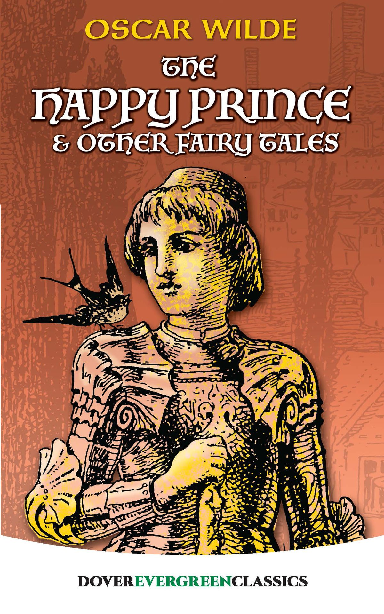

0
стр. з
0
сторінок

завантаження...

Оскар Уайльд
Счастливый принц и другие сказки
Сказки адаптировала Ольга Ламонова
Метод чтения Ильи Франка
Сontents
The Happy Prince
(Счастливый Принц).
HIGH above the city (высоко над городом; high — высокий, находящийся в вышине, на высоте), on a tall column (на высокой колонне), stood the statue of the Happy Prince (стояла статуя Счастливого Принца; to stand). He was gilded all over with thin leaves of fine gold (он был полностью покрыт тонкими листочками чистого золота; to gild — золотить, украшать; leaf — лист, fine — тонкий, утонченный; превосходный; чистый, беспримесный), for eyes he had two bright sapphires (вместо глаз у него были два ярких сапфира), and a large red ruby glowed on his sword-hilt (и большой красный рубин светился/рдел на рукоятке его шпаги; to glow — раскаляться докрасна; светиться, сверкать; рдеть; sword — меч; шпага).
He was very much admired indeed (им очень восхищались, конечно).
`He is as beautiful as a weathercock (он столь же прекрасен, как флюгер; weather — погода, cock — петух),' remarked one of the Town Councillors (заметил/высказался один из Городских Советников) who wished to gain a reputation (который желал приобрести репутацию) for having artistic tastes (/человека/, обладающего художественным вкусом; artistic — артистический; любящий и понимающий искусство); `only not quite so useful (только не очень полезен; quite — вполне, совершенно),' he added (добавил он), fearing lest people should think him unpractical (опасаясь, как бы люди не подумали, что он непрактичен; to fear — бояться), which he really was not (каковым он, конечно же, не был).
column ['kOlqm] statue ['stxtSu:] sapphire ['sxfaIq] weathercock ['weDqkOk] councillor ['kaVns(q)lq]
HIGH above the city, on a tall column, stood the statue of the Happy Prince. He was gilded all over with thin leaves of fine gold, for eyes he had two bright sapphires, and a large red ruby glowed on his sword-hilt.
He was very much admired indeed.
`He is as beautiful as a weathercock,' remarked one of the Town Councillors who wished to gain a reputation for having artistic tastes; `only not quite so useful,' he added, fearing lest people should think him unpractical, which he really was not.
`Why can't you be like the Happy Prince (почему ты не можешь быть похожим на Счастливого Принца; like — подобный, похожий)?' asked a sensible mother (спрашивала разумная мать) of her little boy (у своего маленького сына: "мальчугана") who was crying for the moon (который требовал невозможного: "кричал/требовал, чтобы ему дали луну"; to cry — кричать, to cry for — молить, настойчиво требовать, moon — луна). `The Happy Prince never dreams of crying for anything (Счастливому Принцу никогда и в голову не придет требовать чего-нибудь; to dream — видеть сон, мечтать; преим. в отриц. предложениях: думать).'
`I am glad there is some one in the world (я рад, что в этом мире есть хоть кто-то) who is quite happy (кто совершенно счастлив),' muttered a disappointed man (пробормотал разочаровавшийся человек; to disappoint — разочаровывать) as he gazed at the wonderful statue (уставившись: "пока он пристально смотрел" на удивительную/изумительную статую; wonder — чудо).
`He looks just like an angel (он очень похож на ангела: "он выглядит точно как ангел"; to look — смотреть, to look like — быть похожим, напоминать),' said the Charity Children (говорили Приютские Дети; charity — благотворительность, благотворительное учреждение) as they came out of the cathedral (выходя: "когда они вышли" из собора) in their bright scarlet cloaks (в /своих/ ярко-алых накидках), and their clean white pinafores (и /своих/ чистых белых передниках).
`How do you know (откуда вы знаете)?' said the Mathematical Master (сказал Учитель Математики; master — хозяин; учитель), `you have never seen one (вы никогда не видели /хотя бы/ одного ангела; one — зд. используется со значением "ангел" во избежание повторения).'
prince [prIns] disappointed ["dIsq'pOIntId] cathedral [kq'Ti:drql] pinafore ['pInqfO:]
`Why can't you be like the Happy Prince?' asked a sensible mother of her little boy who was crying for the moon. `The Happy Prince never dreams of crying for anything.'
`I am glad there is some one in the world who is quite happy,' muttered a disappointed man as he gazed at the wonderful statue.
`He looks just like an angel,' said the Charity Children as they came out of the cathedral in their bright scarlet cloaks, and their clean white pinafores.
`How do you know?' said the Mathematical Master, `you have never seen one.'
`Ah! but we have, in our dreams (ах, кончено же /видели/, в своих: "наших" снах),' answered the children (ответили дети); and the Mathematical Master frowned (и Учитель Математики нахмурился) and looked very severe (и выглядел очень строгим/суровым = принял строгий вид), for he did not approve of children dreaming (так как он не одобрял детских снов).
One night there flew over the city a little Swallow (однажды ночью над этим городом пролетала маленькая Ласточка /в дальнейшем будет переводиться как "маленький Ласточка", так как в сказке это существо мужского рода/; to fly — лететь). His friends had gone away to Egypt (его друзья улетели в Египет; to go — идти, направляться) six weeks before (шесть недель /тому/ назад; before — раньше, прежде), but he had stayed behind (а он задержался; to stay behind — отстать от компании, остаться: "остаться позади"), for he was in love with the most beautiful Reed (так как был влюблен в прекраснейшую Камышинку; reed — тростник, камыш /в сказке это существо женского рода/). He had met her early in the spring (он встретил ее ранней весной; to meet) as he was flying down the river (когда летел вдоль речки; down — указывает на движение: вниз, в одном направлении, вдоль) after a big yellow moth (за большим желтым мотыльком), and had been so attracted by her slender waist (и была настолько привлечен ее стройной талией; to attract — притягивать, прельщать) that he had stopped to talk to her (что остановился поговорить с ней).
mathematical [mxTI'mxtIk(q)l] frown [fraun] swallow ['swOlqV] moth [mOT]
`Ah! but we have, in our dreams,' answered the children; and the Mathematical Master frowned and looked very severe, for he did not approve of children dreaming.
One night there flew over the city a little Swallow. His friends had gone away to Egypt six weeks before, but he had stayed behind, for he was in love with the most beautiful Reed. He had met her early in the spring as he was flying down the river after a big yellow moth, and had been so attracted by her slender waist that he had stopped to talk to her.
`Shall I love you (могу ли я полюбить тебя)?' said the Swallow (сказал Ласточка), who liked to come to the point at once (которому /всегда/ нравилось сразу же переходить к сути дела; point — точка; острие; /главный/ вопрос), and the Reed made him a low bow (и Камышинка отвесила: "сделала" ему низкий поклон = низко поклонилась; to make). So he flew round and round her (тогда он стал кружить вокруг: "летать вокруг и вокруг" нее; to fly), touching the water with his wings (касаясь воды /своими/ крыльями), and making silver ripples (и оставляя /на воде/ серебряную/серебристую рябь; to make — делать, создавать). This was his courtship (так он выражал ей свою любовь: "это было его ухаживание"), and it lasted all through the summer (и оно продолжалось все лето; to last — продолжаться, длиться; all through — в течение, в продолжение: "полностью сквозь").
`It is a ridiculous attachment (что за смехотворная привязанность; to attach — прикреплять, attachment — прикрепление; привязанность),' twittered the other Swallows (щебетали другие Ласточки), `she has no money (у нее нет денег), and far too many relations (и слишком уж много родственников; relation — отношение, связь; родственник, родственница);' and indeed the river was quite full of Reeds (и действительно, та речка изобиловала Камышинками: "была весьма полна Тростником"; full — полный, заполненный). Then, when the autumn came (затем, когда пришла = наступила осень; to come), they all flew away (они все улетели; to fly — летать, лететь; to fly away — улететь; away — прочь).
ripple ['rIp(q)l] courtship ['kO:tSIp] ridiculous [rI'dIkjVlqs] attachment [?'t??mqnt]
`Shall I love you?' said the Swallow, who liked to come to the point at once, and the Reed made him a low bow. So he flew round and round her, touching the water with his wings, and making silver ripples. This was his courtship, and it lasted all through the summer.
`It is a ridiculous attachment,' twittered the other Swallows, `she has no money, and far too many relations;' and indeed the river was quite full of Reeds. Then, when the autumn came, they all flew away.
After they had gone (после того как они улетели) he felt lonely (он почувствовал себя одиноким; to feel — чувствовать), and began to tire of his lady-love (и начал тяготиться своей возлюбленной; to begin; to tire — утомлять/ся/, терять интерес; lady — дама; love — любовь). `She has no conversation (с ней не поговоришь: "у нее нет разговора"),' he said (сказал он), `and I am afraid that she is a coquette (и я боюсь, что она кокетлива = непостоянна; coquette — кокетка), for she is always flirting with the wind (так как она всегда заигрывает с ветром; to flirt — флиртовать, кокетничать).' And certainly (и, конечно же), whenever the wind blew (всякий раз, когда дул ветер; to blow), the Reed made the most graceful curtsies (Камышинка делала весьма грациозные реверансы; grace — грация, изящество).
`I admit that she is domestic (я признаю/допускаю, что она /очень/ домашняя = домосед; domestic — домашний, семейный),' he continued (продолжал он), `but I love travelling (но я люблю путешествовать), and my wife, consequently (и моя жена, следовательно), should love travelling also (также должна любить путешествовать).'
`Will you come away with me (ты полетишь со мною; to come — приходить, идти, to come away — уходить)?' he said finally to her (сказал он наконец ей; final — последний, заключительный); but the Reed shook her head (но Камышинка покачала головой; to shake — трясти; качать /головой/), she was so attached to her home (она была столь привязана к дому: "к своему дому").
conversation [?k?nvq'seI?(q)n] coquette [kqV'ket] curtsy ['kq:tsI] consequently ['kOnsIkwqntlI]
After they had gone he felt lonely, and began to tire of his lady-love. `She has no conversation,' he said, `and I am afraid that she is a coquette, for she is always flirting with the wind.' And certainly, whenever the wind blew, the Reed made the most graceful curtsies. `I admit that she is domestic,' he continued, `but I love travelling, and my wife, consequently, should love travelling also.'
`Will you come away with me?' he said finally to her; but the Reed shook her head, she was so attached to her home.
`You have been trifling with me (ты играла с моими чувствами: "со мной"; to trifle — шутить, не принимать всерьез, играть; trifle — пустяк),' he cried (крикнул/воскликнул он), `I am off to the Pyramids (и я лечу к Пирамидам; to be off — уходить, отправляться). Good-bye (прощай)!' and he flew away (и он улетел /прочь/).
All day long he flew (он летел целый день), and at night-time he arrived at the city (и к ночи он прибыл в город; time — время).
`Where shall I put up (где же я остановлюсь /на ночлег/; to put up /at/ — останавливаться /в гостинице/)?' he said; `I hope the town has made preparations (я надеюсь, что город подготовился /к встрече/: "произвел приготовления"; to prepare — приготавливать, готовить заранее).'
Then he saw the statue on the tall column (затем он увидел статую на высокой колонне; to see).
`I will put up there (я остановлюсь там),' he cried (воскликнул он); `it is a fine position (это прекрасное место; position — положение) with plenty of fresh air (и тут много свежего воздуха: "с изобилием свежего воздуха"; plenty — изобилие, множество).' So he alighted (тогда он сел/приземлился; to alight — приземляться, садиться; совершать посадку) just between the feet of the Happy Prince (как раз между ступней = у ног Счастливого Принца; foot — нога, ступня).
trifling ['traIflIN] pyramid ['pIrqmId] column ['kOlqm] alight [q'laIt]
`You have been trifling with me,' he cried, `I am off to the Pyramids. Good-bye!' and he flew away.
All day long he flew, and at night-time he arrived at the city. `Where shall I put up?' he said; `I hope the town has made preparations.'
Then he saw the statue on the tall column. `I will put up there,' he cried; `it is a fine position with plenty of fresh air.' So he alighted just between the feet of the Happy Prince.
`I have a golden bedroom (у меня золотая спальня; gold — золото),' he said softly to himself (сказал он тихо /сам себе/; soft — мягкий, нежный; softly — мягко, тихо) as he looked round (оглядываясь вокруг: "в то время как он огляделся вокруг"), and he prepared to go to sleep (и он собрался заснуть: "приготовился отправиться спать"); but just as he was putting his head under his wing (но как раз тогда, когда он прятал головку под крыло; to put — помещать, класть, ставить) a large drop of water fell on him (большая капля воды упала на него; to fall).
`What a curious thing (странное дело; curious — любознательный, любопытный, странный)!' he cried (воскликнул он), `there is not a single cloud in the sky (в небе нет ни единого облачка), the stars are quite clear and bright (звезды такие /совершенно/ чистые и яркие), and yet it is raining (и все же идет дождь; rain — дождь, to rain — идти, литься /о дожде/). The climate in the north of Europe (климат на севере Европы) is really dreadful (действительно ужасный/отвратительный; dread — страх, ужас). The Reed used to like the rain (Камышинке нравился дождь; to use — употреблять; used to do smth. — иметь в прошлом обыкновение делать что-либо), but that was merely her selfishness (но это просто /из-за/ ее эгоизма: "это всего лишь ее эгоизм"; self — свое "я", сущность; selfish — эгоистичный, себялюбивый).'
Then another drop fell (затем упала другая капля).
curious ['kjV(q)rIqs] climate ['klaImIt] dreadful ['dredf(q)l] selfishness ['selfISnIs]
`I have a golden bedroom,' he said softly to himself as he looked round, and he prepared to go to sleep; but just as he was putting his head under his wing a large drop of water fell on him.
`What a curious thing!' he cried, `there is not a single cloud in the sky, the stars are quite clear and bright, and yet it is raining. The climate in the north of Europe is really dreadful. The Reed used to like the rain, but that was merely her selfishness.'
Then another drop fell.
`What is the use of a statue (какая же польза от статуи; use — употребление; польза, толк) if it cannot keep the rain off (если она не может защитить от дождя; to keep off — держать в отдалении)?' he said; `I must look for a good chimney-pot (я должен поискать /хороший/удобный/ дымоход; to look for — искать, подыскивать),' and he determined to fly away (и он решил улететь; to determine — определять; принимать решение).
But before he had opened his wings (но прежде чем он расправил /свои/ крылья; to open — открывать, раскрывать), a third drop fell (упала третья капля), and he looked up (и он взглянул наверх), and saw — Ah! what did he see (и увидел — ах, что же он увидел)?
The eyes of the Happy Prince (глаза Счастливого Принца) were filled with tears (были наполнены слезами), and tears were running down his golden cheeks (и слезы катились: "бежали вниз" по его золотым щекам). His face was so beautiful in the moonlight (его лицо было настолько прекрасным в лунном свете) that the little Swallow was filled with pity (что маленький Ласточка преисполнился: "был наполнен" жалостью; to fill — наполнять, переполнять).
`Who are you (кто ты)?' he said.
`I am the Happy Prince.'
chimney ['tSImnI] determine [d?'t??m?n] tear [tIq] pity ['pItI]
`What is the use of a statue if it cannot keep the rain off?' he said; `I must look for a good chimney-pot,' and he determined to fly away.
But before he had opened his wings, a third drop fell, and he looked up, and saw — Ah! what did he see?
The eyes of the Happy Prince were filled with tears, and tears were running down his golden cheeks. His face was so beautiful in the moonlight that the little Swallow was filled with pity.
`Who are you?' he said.
`I am the Happy Prince.'
`Why are you weeping then (почему же ты тогда плачешь)?' asked the Swallow (спросил Ласточка); `you have quite drenched me (ты совсем промочил меня насквозь /своими слезами/; to drench — пропитывать влагой, смачивать).'
`When I was alive (когда я был жив) and had a human heart (и /у меня/ было человеческое сердце),' answered the statue (ответила статуя), `I did not know what tears were (я не знал, что такое слезы), for I lived in the palace of Sans-Souci (потому что я жил во дворце Сан-Суси; sans-souci — фр. беспечный, беззаботный; тж. Sanssouci — летний дворец Фридриха Великого, Короля Прусского в Потсдаме под Берлином, по красоте соперничающий с Версалем), where sorrow is not allowed to enter (куда печали/горю не позволено = запрещено входить; to allow — позволять, разрешать). In the daytime I played with my companions in the garden (днем я играл со своими товарищами в саду), and in the evening I led the dance in the Great Hall (а вечером я был первым на танцах в Большом Зале; to lead the dance — вести, возглавлять танец; играть главную роль, to lead — вести, руководить; dance — танец). Round the garden ran a very lofty wall (вокруг сада тянулась очень высокая стена = сад был обнесен очень высокой стеной; to run — бежать; простираться, расстилаться, тянуться; lofty — очень высокий), but I never cared to ask (но я никогда так и не удосужился спросить; to care — заботиться, беспокоиться, иметь желание) what lay beyond it (что находится/расположено за ней; to lie — лежать), everything about me was so beautiful (все вокруг меня было настолько прекрасным).
human ['hju?mqn] sorrow ['sOrqV] allow [q'lau] beyond [bI'jOnd]
`Why are you weeping then?' asked the Swallow; `you have quite drenched me.'
`When I was alive and had a human heart,' answered the statue, `I did not know what tears were, for I lived in the palace of Sans-Souci, where sorrow is not allowed to enter. In the daytime I played with my companions in the garden, and in the evening I led the dance in the Great Hall. Round the garden ran a very lofty wall, but I never cared to ask what lay beyond it, everything about me was so beautiful.
My courtiers called me the Happy Prince (мои придворные называли меня Счастливым Принцем; to call — звать, называть), and happy indeed I was (и я действительно был счастлив), if pleasure be happiness (если удовольствие можно назвать счастьем). So I lived (так я жил), and so I died (и так я умер). And now that I am dead (и теперь, когда я мертв) they have set me up here (они вознесли меня сюда: "они поставили меня здесь высоко") so high that I can see (так высоко, что я могу видеть) all the ugliness and all the misery of my city (всю мерзость и все страдания моего города; ugly — безобразный, уродливый, ugliness — уродство, омерзительность), and though my heart is made of lead (и, хотя мое сердце и сделано из свинца) yet I cannot choose but weep (я не могу не плакать: "я не могу выбрать кроме как плакать"; to choose — выбирать, иметь свободу выбора).'
`What, is he not solid gold (вот как, разве он не из чистого/цельного золота; solid — твердый; чистый, однородный)?' said the Swallow to himself (подумал Ласточка про себя). He was too polite (он был слишком вежливым) to make any personal remarks out loud (чтобы произносить вслух какие-либо замечания, касающиеся личности собеседника: "личные замечания"; personal — личный, задевающий личность, loud — громко).
pleasure ['pleZq] misery ['mIz(q)rI] lead [led] polite [pq'laIt]
My courtiers called me the Happy Prince, and happy indeed I was, if pleasure be happiness. So I lived, and so I died. And now that I am dead they have set me up here so high that I can see all the ugliness and all the misery of my city, and though my heart is made of lead yet I cannot choose but weep.'
`What, is he not solid gold?' said the Swallow to himself. He was too polite to make any personal remarks out loud.
`Far away (/там/, далеко),' continued the statue (продолжала статуя) in a low musical voice (тихим мелодичным голосом; low — низкий), `far away in a little street (далеко, на маленькой улочке) there is a poor house (/стоит/ один бедный дом). One of the windows is open (одно из окон открыто), and through it (и сквозь него = и в нем) I can see a woman seated at a table (и вижу: "могу видеть" женщину, сидящую за столом). Her face is thin and worn (ее лицо худое и изможденное; to wear — носить /об одежде/; изнашивать; worn — изношенный; усталый), and she has coarse, red hands (и руки у нее загрубевшие, красные), all pricked by the needle (все исколотые иглой; to prick — колоть), for she is a seamstress (потому что она швея; seam — шов). She is embroidering passion-flowers (она вышивает страстоцветы; passion — страсть, пыл; flower — цветок) on a satin gown (на атласном платье) for the loveliest of the Queen's maids-of-honour (для прекраснейшей из фрейлин Королевы; maid — служанка, девушка; honour — честь, почет) to wear at the next Court-ball (чтобы носить на ближайшем придворном балу = /которое та/ наденет на ближайший придворный бал; next — следующий; court — двор).
continue [kqn'tInju:] coarse [kO:s] seamstress ['si:mstrIs] maid of honour ["meIdqv'Onq]
`Far away,' continued the statue in a low musical voice, `far away in a little street there is a poor house. One of the windows is open, and through it I can see a woman seated at a table. Her face is thin and worn, and she has coarse, red hands, all pricked by the needle, for she is a seamstress. She is embroidering passion-flowers on a satin gown for the loveliest of the Queen's maids-of-honour to wear at the next Court-ball.
In a bed in the corner of the room (в кроватке, в углу комнаты) her little boy is lying ill (лежит ее больной сынок; to lie ill — быть больным, лежать в постели). He has a fever (у него жар/лихорадка), and is asking for oranges (и он просит апельсинов). His mother has nothing to give him (у его матери нет ничего, что ему дать) but river water (кроме речной воды), so he is crying (и поэтому он плачет). Swallow, Swallow, little Swallow, will you not bring her the ruby (маленький Ласточка, не отнесешь ли ты ей рубин) out of my sword-hilt (из рукоятки моей шпаги)? My feet are fastened to this pedestal (мои ноги прикованы к этому пьедесталу; to fasten — связывать, прикреплять) and I cannot move (и я не могу двигаться).'
fever ['fi:vq] orange ['OrIndZ] fasten ['f??s(q)n] pedestal ['pedIstl]
In a bed in the corner of the room her little boy is lying ill. He has a fever, and is asking for oranges. His mother has nothing to give him but river water, so he is crying. Swallow, Swallow, little Swallow, will you not bring her the ruby out of my sword-hilt? My feet are fastened to this pedestal and I cannot move.'
`I am waited for in Egypt (меня ждут: "я ожидаем" в Египте),' said the Swallow. `My friends are flying up and down the Nile (мои друзья летают /над/ Нилом; up and down — вверх и вниз, взад и вперед, повсюду), and talking to the large lotus-flowers (и болтают/разговаривают с огромными цветами лотоса). Soon they will go to sleep (вскоре они заснут) in the tomb of the great King (в гробнице Великого Царя; tomb — могила, склеп). The King is there himself (там /лежит/ сам Царь) in his painted coffin (в /своем/ разноцветном/разрисованном гробу; to paint — красить, раскрашивать, paint — краска). He is wrapped in yellow linen (он завернут в желтые /льняные/ полотна; to wrap — окутывать, обертывать), and embalmed with spices (и набальзамирован ароматными травами; spice — специя, пряность; balm — бальзам). Round his neck (на его шее: "вокруг его шеи") is a chain of pale green jade (ожерелье: "цепь" из бледно-зеленого нефрита), and his hands are like withered leaves (и руки его похожи на высохшие листья; to wither — вянуть, сохнуть).'
`Swallow, Swallow, little Swallow,' said the Prince, `will you not stay with me (не останешься ли ты со мной) for one night (на одну ночь), and be my messenger (и /не/ будешь ли моим посланцем; messenger — связной, посыльный, гонец)? The boy is so thirsty (мальчик так хочет пить: "такой жаждущий"; thirst — жажда; thirsty — испытывающий жажду), and the mother so sad (и /его/ мать так печальна).'
Egypt ['IdZIpt] tomb [tu:m] coffin ['kOfIn] embalmed [Im'bQ:md]
`I am waited for in Egypt,' said the Swallow. `My friends are flying up and down the Nile, and talking to the large lotus-flowers. Soon they will go to sleep in the tomb of the great King. The King is there himself in his painted coffin. He is wrapped in yellow linen, and embalmed with spices. Round his neck is a chain of pale green jade, and his hands are like withered leaves.'
`Swallow, Swallow, little Swallow,' said the Prince, `will you not stay with me for one night, and be my messenger? The boy is so thirsty, and the mother so sad.'
`I don't think I like boys (не думаю, что мне нравятся мальчишки),' answered the Swallow (ответил Ласточка). `Last summer (прошлым летом), when I was staying on the river (когда я проводил время = жил у реки; to stay — оставаться, не уходить, гостить), there were two rude boys (были там два грубых мальчика), the miller's sons (сыновья мельника; mill — мельница, to mill — молоть), who were always throwing stones at me (которые постоянно: "всегда" швыряли в меня камни; to throw — бросать). They never hit me, of course (конечно, они ни разу не попали в меня; never — никогда; вовсе не; to hit — ударять; попадать в цель); we swallows fly far too well for that (мы, ласточки, слишком хорошо летаем для этого = чтобы такое могло случиться), and besides, I come of a family (и, кроме того, я происхожу из семьи) famous for its agility (известной своей подвижностью/проворством; famous — знаменитый, прославленный; agile — проворный; быстрый); but still, it was a mark of disrespect (но все же это было непочтительно: "это был признак неуважения"; mark — знак, штамп, показатель; respect — уважение, почтение).'
But the Happy Prince looked so sad (но Счастливый Принц выглядел таким печальным) that the little Swallow was sorry (что маленький Ласточка пожалел /его/; sorry — сожалеющий). `It is very cold here (здесь очень холодно),' he said; `but I will stay with you for one night (но я останусь с тобой на одну ночь), and be your messenger (и буду твоим гонцом).'
`Thank you, little Swallow,' said the Prince.
rude [ru:d] agility [q'dZIlItI] messenger ['mes(q)ndZq]
`I don't think I like boys,' answered the Swallow. `Last summer, when I was staying on the river, there were two rude boys, the miller's sons, who were always throwing stones at me. They never hit me, of course; we swallows fly far too well for that, and besides, I come of a family famous for its agility; but still, it was a mark of disrespect.'
But the Happy Prince looked so sad that the little Swallow was sorry. `It is very cold here,' he said; `but I will stay with you for one night, and be your messenger.'
`Thank you, little Swallow,' said the Prince.
So the Swallow picked out the great ruby (тогда Ласточка выклевал/сковырнул большой рубин; to pick — выбирать; ковырять; клевать) from the Prince's sword (из /рукоятки/ шпаги Принца), and flew away with it (и улетел с ним) in his beak (/держа его/ в своем клюве) over the roofs of the town (над крышами города = городскими крышами).
He passed by the cathedral tower (он пролетел мимо башни собора; to pass — идти, проходить мимо), where the white marble angels were sculptured (где /были установлены/ ангелы /которые/ были высечены из белого мрамора; sculpture — скульптура, to sculpture — ваять, лепить, высекать). He passed by the palace (он пролетел мимо дворца) and heard the sound of dancing (и услышал звуки танцев = танцевальной музыки; to hear; dance — танец, пляска). A beautiful girl came out on the balcony with her lover (прекрасная девушка вышла на балкон со своим возлюбленным; to come).
`How wonderful the stars are (как изумительны/чудесны звезды),' he said to her (сказал он ей), and how wonderful is the power of love (и как изумительна/удивительна сила любви)!'
`I hope my dress will be ready in time (я надеюсь, что мое платье будет готово вовремя) for the State-ball (к придворному: "государственному" балу; state — государство),' she answered (ответила она); `I have ordered passion-flowers to be embroidered on it (я приказала, чтобы на нем были вышиты страстоцветы); but the seamstresses are so lazy (но швеи такие ленивые).'
cathedral [kq'Ti:drql] sculpture ['skAlptSq] balcony ['b?lkqnI] embroider [Im'brOIdq]
So the Swallow picked out the great ruby from the Prince's sword, and flew away with it in his beak over the roofs of the town.
He passed by the cathedral tower, where the white marble angels were sculptured. He passed by the palace and heard the sound of dancing. A beautiful girl came out on the balcony with her lover.
`How wonderful the stars are,' he said to her, and how wonderful is the power of love!'
`I hope my dress will be ready in time for the State-ball,' she answered; `I have ordered passion-flowers to be embroidered on it; but the seamstresses are so lazy.'
He passed over the river (он пролетел над рекой), and saw the lanterns (и увидел фонари; to see) hanging to the masts of the ships (висящие на мачтах кораблей; to hang — вешать; висеть). He passed over the Ghetto (он пролетел над Гетто; Ghetto — /еврейское/ гетто), and saw the old jews bargaining with each other (и увидел старых евреев, торгующихся друг с другом; bargain — торговая сделка, договор; to bargain — торговаться; заключить сделку; договориться), and weighing out money in copper scales (и отвешивающих деньги на медных весах; weight — вес, to weigh — взвешивать; to weigh out — отвешивать, развешивать). At last he came to the poor house (наконец он подлетел к тому самому бедному/убогому дому) and looked in (и заглянул внутрь). The boy was tossing feverishly on his bed (мальчик метался лихорадочно на своей постели; to toss — подбрасывать; беспокойно метаться /о больном/), and the mother had fallen asleep (а мать заснула; to fall asleep — заснуть; to fall — падать; впадать /в какое-либо состояние/; asleep — спящий), she was so tired (настолько она устала: "она была такой усталой"). In he hopped (он впорхнул внутрь /комнаты/; to hop — прыгать, подпрыгивать), and laid the great ruby on the table (и положил большой рубин на стол; to lay — класть) beside the woman's thimble (рядом с наперстком женщины). Then he flew gently round the bed (затем он осторожно облетел вокруг кровати; gently — мягко, тихо, легко), fanning the boy's forehead with his wings (обмахивая лоб мальчика своими крыльями; fan — веер, опахало; to fan — обмахивать).
`How cool I feel (как прохладно /я себя чувствую/),' said the boy, `I must be getting better (я, должно быть, выздоравливаю; to get better — поправляться после болезни: "становиться лучше");' and he sank into a delicious slumber (и он погрузился в сладостную дремоту; to sink — погружаться; тонуть; delicious — восхитительный).
mast [mQ:st] bargain ['bQ:gIn] weighing ['weIIN] thimble ['TImb(q)l] forehead ['fOrId, 'fO:hed] delicious [dI'lISqs]
He passed over the river, and saw the lanterns hanging to the masts of the ships. He passed over the Ghetto, and saw the old jews bargaining with each other, and weighing out money in copper scales. At last he came to the poor house and looked in. The boy was tossing feverishly on his bed, and the mother had fallen asleep, she was so tired. In he hopped, and laid the great ruby on the table beside the woman's thimble. Then he flew gently round the bed, fanning the boy's forehead with his wings.
`How cool I feel,' said the boy, `I must be getting better;' and he sank into a delicious slumber.
Then the Swallow flew back to the Happy Prince (затем Ласточка полетел назад к Счастливому Принцу; to fly), and told him what he had done (и рассказал ему, что он сделал; to tell).
`It is curious (странно/любопытно),' he remarked (заметил он), `but I feel quite warm now (но сейчас мне вполне тепло), although it is so cold (хотя так холодно = хотя погода холодная).'
`That is because you have done a good action (это потому, что ты сделал доброе дело; good — хороший, приятный, добрый),' said the Prince. And the little Swallow began to think (и маленький Ласточка начал думать; to begin), and then he fell asleep (и затем он заснул). Thinking always made him sleepy (размышления всегда наводили на него сон; sleep — сон; sleepy — сонный).
When day broke (когда рассвело: "когда наступил день"; to break — ломать/ся/; начинаться) he flew down to the river and had a bath (он полетел к реке и искупался; bath — купание, мытье).
`What a remarkable phenomenon (какое замечательное явление/феномен; remarkable — замечательный, примечательный),' said the Professor of Ornithology (сказал Профессор Орнитологии) as he was passing over the bridge (проходя по мосту). `A swallow in winter (ласточка зимой)!'
And he wrote a long letter about it (и он написал об этом длинное письмо; to write) to the local newspaper (в местную газету). Every one quoted it (все цитировали его), it was full of so many words (оно было полно такого количества слов; many — многие, многочисленные) that they could not understand (которых они не могли понять).
curious ['kjV(q)rIqs] although [O:l'DqV] remarkable [rI'm??kqbl] phenomenon [fI'nOmInqn] quote [kw?ut]
Then the Swallow flew back to the Happy Prince, and told him what he had done.
`It is curious,' he remarked, `but I feel quite warm now, although it is so cold.'
`That is because you have done a good action,' said the Prince. And the little Swallow began to think, and then he fell asleep. Thinking always made him sleepy.
When day broke he flew down to the river and had a bath.
`What a remarkable phenomenon,' said the Professor of Ornithology as he was passing over the bridge.
`A swallow in winter!' And he wrote a long letter about it to the local newspaper. Every one quoted it, it was full of so many words that they could not understand.
`Tonight I go to Egypt (сегодня вечером я отправляюсь в Египет),' said the Swallow, and he was in high spirits at the prospect (и он был в веселом настроении от этой перспективы/плана на будущее; high — высокий, веселый; spirit — душа; настроение, душевное состояние). He visited all the public monuments (он посетил все памятники; public — общественный), and sat a long time (и просидел долгое время) on top of the church steeple (на шпиле церковной колокольни; top — верхушка, верхний конец; шпиль). Wherever he went (куда бы он ни летал; to go) the Sparrows chirruped (Воробьи чирикали), and said to each other (и говорили друг другу), `What a distinguished stranger (что за важный/знатный незнакомец/чужестранец; to distinguish — отличать, различать)!' so he enjoyed himself very much (так что ему было очень приятно; to enjoy — любить что-либо, получать удовольствие от чего-либо, веселиться).
When the moon rose (когда взошла луна; to rise — вставать; восходить, подниматься) he flew back to the Happy Prince (он полетел назад, к Счастливому Принцу). `Have you any commissions for Egypt (нет ли у тебя: "есть ли у тебя" каких-нибудь поручений в Египет)?' he cried (крикнул он); `I am just starting (я как раз отправляюсь в путь; to start — отправляться, трогаться).'
`Swallow, Swallow, little Swallow,' said the Prince, `will you not stay with me one night longer (не останешься ли ты со мной на еще одну ночь; long — долго, длительно)?'
spirit ['spIrIt] chirrup ['tSIrqp] distinguished [dIs'tINgwISt] commission [kq'mIS(q)n]
`Tonight I go to Egypt,' said the Swallow, and he was in high spirits at the prospect. He visited all the public monuments, and sat a long time on top of the church steeple. Wherever he went the Sparrows chirruped, and said to each other, `What a distinguished stranger!' so he enjoyed himself very much.
When the moon rose he flew back to the Happy Prince. `Have you any commissions for Egypt?' he cried; `I am just starting.'
`Swallow, Swallow, little Swallow,' said the Prince, `will you not stay with me one night longer?'
`I am waited for in Egypt (меня ждут в Египте),' answered the Swallow (ответил Ласточка). `To-morrow my friends will fly up to the Second Cataract (завтра мои друзья полетят ко Вторым Порогам /на Ниле/; cataract — большой водопад, порог на реке). The river-horse couches there (бегемот залег там; river — река; horse — лошадь, конь; to couch — уложить; залечь, притаиться /о животном/) among the bulrushes (среди камышей), and on a great granite throne (и на огромном гранитном троне) sits the God Memnon (восседает Бог Мемнон). All night long he watches the stars (всю ночь напролет он наблюдает за звездами), and when the morning star shines (и /каждый раз/ когда засияет утренняя звезда /= Венера/) he utters one cry of joy (он издает /один/ крик радости = радостно восклицает; to utter — издавать звук, произносить), and then he is silent (и затем он молчит: "он безмолвен"). At noon the yellow lions (в полдень желтые львы) come down to the water's edge to drink (спускаются к берегу реки на водопой: "к краю воды, чтобы напиться"). They have eyes like green beryls (их глаза похожи: "у них есть глаза, похожие" на зеленые бериллы), and their roar is louder (и их рык громче; roar — рев, грохот) than the roar of the cataract (чем рев водопада).'
roar [r??] cataract ['kxtqrxkt] couch [kaVtS] bulrush ['bVlrAS] beryl ['berIl]
`I am waited for in Egypt,' answered the Swallow. `To-morrow my friends will fly up to the Second Cataract. The river-horse couches there among the bulrushes, and on a great granite throne sits the God Memnon. All night long he watches the stars, and when the morning star shines he utters one cry of joy, and then he is silent. At noon the yellow lions come down to the water's edge to drink. They have eyes like green beryls, and their roar is louder than the roar of the cataract.'
`Swallow, Swallow, little Swallow,' said the prince, `far away across the city (далеко, на том краю города: "по ту сторону города") I see a young man in a garret (я вижу молодого человека, /живущего/ на чердаке/мансарде). He is leaning over a desk (он склоняется над столом; to lean — наклонятся, нагибаться) covered with papers (заваленным: "покрытым" бумагами; to cover — покрывать), and in a tumbler by his side (и в стакане /для вина/ рядом с ним; side — стенка, сторона) there is a bunch of withered violets (стоит: "есть" букет засохших фиалок; bunch — связка, пучок). His hair is brown and crisp (у него курчавые/вьющиеся каштановые волосы; brown — коричневый, бурый; crisp — кудрявый), and his lips are red as a pomegranate (и его губы красные, как гранат), and he has large and dreamy eyes (и глаза у него большие и мечтательные; to dream — видеть сон, мечтать). He is trying to finish a play (он пытается закончить пьесу; play — игра, забава; пьеса, драма) for the Director of the Theatre (для Директора Театра), but he is too cold to write any more (но он слишком замерз, чтобы писать дальше/больше; cold — холодный; озябший). There is no fire in the grate (в камине нет огня; grate — решетка, камин), and hunger has made him faint (и он совсем ослабел от голода: "и голод сделал его ослабевшим"; to make smb., smth. + прилагательное — превращать, приводить в какое-либо состояние).'
garret ['gxrIt] withered ['wIDqd] violet ['vaIqlqt] pomegranate ['pOmIgrxnIt]
`Swallow, Swallow, little Swallow,' said the prince, `far away across the city I see a young man in a garret. He is leaning over a desk covered with papers, and in a tumbler by his side there is a bunch of withered violets. His hair is brown and crisp, and his lips are red as a pomegranate, and he has large and dreamy eyes. He is trying to finish a play for the Director of the Theatre, but he is too cold to write any more. There is no fire in the grate, and hunger has made him faint.'
`I will wait with you one night longer (я задержусь = останусь с тобой на еще одну ночь; to wait — ждать, переждать),' said the Swallow, who really had a good heart (у которого было действительно доброе сердце). `Shall I take him another ruby (мне отнести ему еще один: "другой" рубин; to take — брать, хватать)?'
`Alas! I have no ruby now (увы, теперь у меня нет рубина),' said the Prince; `my eyes are all that I have left (мои глаза — вот все, что у меня осталось; to leave — оставлять). They are made of rare sapphires (они сделаны из редких сапфиров), which were brought out of India (которые были привезены из Индии; to bring — приносить, привозить) a thousand years ago (тысячу лет назад). Pluck out one of them (вытащи один из них; to pluck — срывать /например, о плодах/) and take it to him (и отнеси его тому юноше: "ему"). He will sell it to the jeweller (он продаст его ювелиру; jewel — драгоценный камень), and buy food and firewood (и купит еды и дров; fire — огонь; wood — лес, древесина), and finish his play (и закончит свою пьесу).'
`Dear Prince (дорогой принц),' said the Swallow, `I cannot do that (я не могу сделать этого);' and he began to weep (и он начал плакать).
`Swallow, Swallow, little Swallow,' said the Prince, `do as I command you (сделай, как я приказываю тебе).'
sapphire ['s?faIq] jeweller ['dZu:qlq] firewood ['faIqwVd] command [kq'mQ:nd]
`I will wait with you one night longer,' said the Swallow, who really had a good heart. `Shall I take him another ruby?'
`Alas! I have no ruby now,' said the Prince; `my eyes are all that I have left. They are made of rare sapphires, which were brought out of India a thousand years ago. Pluck out one of them and take it to him. He will sell it to the jeweller, and buy food and firewood, and finish his play.'
`Dear Prince,' said the Swallow, `I cannot do that;' and he began to weep.
`Swallow, Swallow, little Swallow,' said the Prince, `do as I command you.'
So the Swallow plucked out the Prince's eye (тогда Ласточка вытащил /сапфир/ из глаза Принца), and flew away to the student's garret (и улетел к чердаку/мансарде студента). It was easy enough to get in (попасть внутрь было довольно просто; to get in — входить, влезать), as there was a hole in the roof (поскольку в крыше была дыра). Through this he darted (сквозь эту /дыру/ он /стремительно/ влетел; to dart — помчаться стрелой, метнуться; dart — дротик), and came into the room (и попал: "вошел" в комнату; to come — приходить). The young man had his head buried in his hands (молодой человек закрыл /свою/ голову /своими/ руками; to bury — хоронить; прятать, скрывать), so he did not hear the flutter of the bird's wings (поэтому он не слышал трепетания крыльев /птицы = ласточки/), and when he looked up (и когда он поднял глаза) he found the beautiful sapphire (он обнаружил прекрасный сапфир; to find — находить) lying on the withered violets (лежащий на засохших фиалках; to lie — лежать).
through [Tru:] bury ['berI] violet ['vaIqlIt]
So the Swallow plucked out the Prince's eye, and flew away to the student's garret. It was easy enough to get in, as there was a hole in the roof. Through this he darted, and came into the room. The young man had his head buried in his hands, so he did not hear the flutter of the bird's wings, and when he looked up he found the beautiful sapphire lying on the withered violets.
`I am beginning to be appreciated (меня начинают ценить по достоинству; to appreciate — ценить, высоко ставить),' he cried (вскричал он); `this is from some great admirer (это /точно/ от какого-то большого почитателя/поклонника; to admire — восхищаться, восторгаться). Now I can finish my play (теперь я могу закончить свою пьесу),' and he looked quite happy (и выглядел он совершенно счастливым; to look — смотреть; выглядеть).
The next day the Swallow flew down to the harbour (на следующий день Ласточка полетел к гавани; to fly). He sat on the mast of a large vessel (он сел на мачту большого корабля; to sit; vessel — сосуд; судно, корабль) and watched the sailors (и наблюдал за моряками; to sail — плавать, плыть под парусами; sail — парус) hauling big chests (которые тащили большие сундуки; to haul — тянуть, волочить) out of the hold with ropes (из трюма веревками: "с веревками").
`Heave a-hoy (раз-два, взяли; to heave — поднимать /с усилием/, вытягивать)!' they shouted (кричали они) as each chest came up (когда поднимался очередной: "каждый" сундук; to come up — подходить, подниматься).
`I am going to Egypt (я собираюсь в Египет)!' cried the Swallow (кричал Ласточка), but nobody minded (но никто не обратил внимания; to mind — возражать, заботиться; обратить внимание), and when the moon rose (и когда взошла луна) he flew back to the Happy Prince (он полетел назад к Счастливому Принцу).
appreciated [q'pri:SIeItId] admirer [qd'maIqrq] harbour ['hQ:bq] hauling ['hO:lIN]
`I am beginning to be appreciated,' he cried; `this is from some great admirer. Now I can finish my play,' and he looked quite happy.
The next day the Swallow flew down to the harbour. He sat on the mast of a large vessel and watched the sailors hauling big chests out of the hold with ropes.
`Heave a-hoy!' they shouted as each chest came up. `I am going to Egypt!' cried the Swallow, but nobody minded, and when the moon rose he flew back to the Happy Prince.
`I am come to bid you good-bye (я прилетел, чтобы попрощаться; to bid — предлагать; /уст./ просить, приказывать; выражать ритуальные пожелания при встрече, прощании),' he cried (крикнул он).
`Swallow, Swallow, little Swallow,' said the Prince, `will you not stay with me one night longer (не останешься ли ты со мной на еще одну ночь)?'
`It is winter (уже зима),' answered the Swallow (ответил Ласточка), `and the chill snow (и холодный снег; chill — холодный, вызывающий дрожь, озноб) will soon be here (вскоре уже будет здесь). In Egypt the sun is warm on the green palm-trees (в Египте солнце теплое на зеленых пальмовых деревьях = солнце греет зеленые...), and the crocodiles lie in the mud (и крокодилы лежат в тине; mud — грязь, слякоть; ил) and look lazily about them (и лениво оглядываются: "смотрят лениво вокруг /себя/"; lazy — ленивый). My companions are building a nest (мои друзья вьют гнезда; companion — товарищ, компаньон; to build — строить, сооружать; вить /гнезда/) in the Temple of Baalbec (в Храме Баальбека; Baalbec — город в Ливане, знаменит развалинами храмов, относящихся к римскому периоду, когда город был известен как Гелиополис), and the pink and white doves are watching them (а розовые и белые голуби наблюдают за ними), and cooing to each other (и воркуют друг с другом; to coo — ворковать). Dear Prince, I must leave you (дорогой Принц, я должен покинуть тебя), but I will never forget you (но я никогда не забуду тебя), and next spring I will bring you back (и следующей весной я принесу тебе; to bring back — приносить обратно, возвращать) two beautiful jewels (два прекрасных драгоценных камня) in place of those you have given away (вместо тех, что ты отдал/подарил; place — место, to give). The ruby shall be redder than a red rose (рубин будет краснее красной розы), and the sapphire shall be as blue as the great sea (и сапфир будет столь же синим, как само море: "большое/великое море").'
crocodile ['krOkqdaIl] companion [kqm'pxnIqn] dove [d?v] jewel ['?u?ql]
`I am come to bid you good-bye,' he cried.
`Swallow, Swallow, little Swallow,' said the Prince, `will you not stay with me one night longer?'
`It is winter,' answered the Swallow, `and the chill snow will soon be here. In Egypt the sun is warm on the green palm-trees, and the crocodiles lie in the mud and look lazily about them. My companions are building a nest in the Temple of Baalbec, and the pink and white doves are watching them, and cooing to each other. Dear Prince, I must leave you, but I will never forget you, and next spring I will bring you back two beautiful jewels in place of those you have given away. The ruby shall be redder than a red rose, and the sapphire shall be as blue as the great sea.'
`In the square below (внизу, на площади),' said the Happy Prince, `there stands a little match-girl (стоит маленькая девочка, /которая торгует/ спичками; match — спичка). She has let her matches fall in the gutter (она уронила /свои/ спички в канаву; to let fall — выпустить, выронить: "дать упасть"), and they are all spoiled (и все они испорчены; to spoil — портить). Her father will beat her (ее отец побьет ее; to beat — бить, ударять) if she does not bring home some money (если она не принесет домой немного денег), and she is crying (и она плачет). She has no shoes or stockings (у нее нет ни башмаков, ни чулок; shoe — туфля, ботинок), and her little head is bare (и ее маленькая головка не покрыта; bare — нагой, голый). Pluck out my other eye (вытащи мой второй глаз; other — другой; второй /из двух/), and give it to her (и отдай его ей), and her father will not beat her (и ее отец не будет ее бить).'
`I will stay with you one night longer (я останусь с тобой еще на одну ночь),' said the Swallow, `but I cannot pluck out your eye (но я не могу вытащить твой глаз). You would be quite blind then (тогда ты совершенно ослепнешь: "ты будешь совершенно слепой"; blind — слепой, незрячий).'
`Swallow, Swallow, little Swallow,' said the Prince, `do as I command you (сделай, как я приказываю тебе).'
square [skweq] bare [beq] blind [blaInd]
`In the square below,' said the Happy Prince, `there stands a little match-girl. She has let her matches fall in the gutter, and they are all spoiled. Her father will beat her if she does not bring home some money, and she is crying. She has no shoes or stockings, and her little head is bare. Pluck out my other eye, and give it to her, and her father will not beat her.'
`I will stay with you one night longer,' said the Swallow, `but I cannot pluck out your eye. You would be quite blind then.'
`Swallow, Swallow, little Swallow,' said the Prince, `do as I command you.'
So he plucked out the Prince's other eye (тогда он вытащил другой глаз Принца), and darted down with it (и помчался с ним /сапфиром/ стрелой вниз). He swooped past the match-girl (он устремился/пролетел мимо девочки со спичками; to swoop — устремляться /вниз/, падать), and slipped the jewel into the palm of her hand (и сунул = уронил драгоценный камень в ладошку /ее руки/; to slip — скользить, to slip smth. into smth. — незаметно сунуть что-либо куда-либо).
`What a lovely bit of glass (какой красивый кусочек стекла),' cried the little girl (воскликнула маленькая девочка); and she ran home, laughing (и она побежала домой, смеясь; to run).
Then the Swallow came back to the Prince (затем Ласточка вернулся к Принцу). `You are blind now (теперь ты слепой),' he said, `so I will stay with you always (поэтому я навсегда останусь с тобой).'
`No, little Swallow,' said the poor Prince (сказал несчастный Принц; poor — бедный, неимущий; несчастный), `you must go away to Egypt (ты должен улететь в Египет).'
`I will stay with you always (я останусь с тобой навсегда),' said the Swallow, and he slept at the Prince's feet (и он заснул у ног Принца; to sleep).
swoop [swu:p] laughing ['lQ:fIN] poor [pVq]
So he plucked out the Prince's other eye, and darted down with it. He swooped past the match-girl, and slipped the jewel into the palm of her hand. `What a lovely bit of glass,' cried the little girl; and she ran home, laughing.
Then the Swallow came back to the Prince. `You are blind now,' he said, `so I will stay with you always.'
`No, little Swallow,' said the poor Prince, `you must go away to Egypt.'
`I will stay with you always,' said the Swallow, and he slept at the Prince's feet.
All the next day he sat on the Prince's shoulder (весь следующий день он сидел на плече Принца; to sit), and told him stories (и рассказывал ему истории; to tell) of what he had seen in strange lands (о том, что он видел в чужих краях; strange — незнакомый, странный, чужой; land — земля, страна). He told him of the red ibises (он рассказал ему о красных ибисах), who stand in long rows (что стоят длинными рядами) on the banks of the Nile (по берегам Нила; bank — берег /реки/), and catch gold fish in their beaks (и ловят клювами: "в свои клювы" золотых рыбок); of the Sphinx (о Сфинксе), who is as old as the world itself (который стар, как сам мир) and lives in the desert (и живет в пустыне), and knows everything (и знает все); of the merchants (о купцах), who walk slowly by the side of their camels (что бредут медленно рядом со своими верблюдами; to walk — ходить, идти пешком; side — сторона), and carry amber beads in their hands (и перебирают: "несут" янтарные четки: "бусы" в /своих/ руках; to carry — нести, вести); of the King of the Mountains of the Moon (о Царе Лунных Гор), who is as black as ebony (который черен, как эбеновое/черное дерево), and worships a large crystal (и покланяется большому кристаллу/горному хрусталю; to worship — поклоняться, боготворить); of the great green snake (о большом/великом зеленом змее) that sleeps in a palm-tree (что спит в пальмовом дереве), and has twenty priests (и о двадцати жрецах: "и у которого /змея/ есть двадцать жрецов"; priest — священник; жрец) to feed it with honey-cakes (/которые/ кормят его медовыми коврижками; cake — торт, кекс); and of the pygmies (и о пигмеях) who sail over a big lake (которые плавают по большому озеру) on large flat leaves (на больших плоских листьях), and are always at war with the butterflies (и /которые/ постоянно ведут войну с бабочками; war — война, борьба; butterfly).
ibis ['aIbIs] sphinx [sfINks] camel ['k?m(q)l] merchant ['mq:tS(q)nt] crystal ['krIstl] priest [pri?st]
All the next day he sat on the Prince's shoulder, and told him stories of what he had seen in strange lands. He told him of the red ibises, who stand in long rows on the banks of the Nile, and catch gold fish in their beaks; of the Sphinx, who is as old as the world itself and lives in the desert, and knows everything; of the merchants, who walk slowly by the side of their camels, and carry amber beads in their hands; of the King of the Mountains of the Moon, who is as black as ebony, and worships a large crystal; of the great green snake that sleeps in a palm-tree, and has twenty priests to feed it with honey-cakes; and of the pygmies who sail over a big lake on large flat leaves, and are always at war with the butterflies.
`Dear little Swallow (милый Ласточка; dear — дорогой, милый; little — маленький),' said the Prince, `you tell me of marvellous things (ты рассказываешь мне об удивительных вещах; marvel — чудо, диво), but more marvellous than anything (но самое удивительное: "но более удивительное, чем что-нибудь еще") is the suffering of men and of women (это страдания всех людей: "мужчин и женщин"; to suffer — страдать; man — мужчина; woman — женщина). There is no Mystery so great as Misery (нет большей Тайны, чем Страдание). Fly over my city (полети над моим городом), little Swallow, and tell me what you see there (и расскажи мне, что ты увидишь /там/).'
marvellous ['mQ:v(q)lqs] mystery ['mIst(q)rI] misery ['mIz(q)rI]
`Dear little Swallow,' said the Prince, `you tell me of marvellous things, but more marvellous than anything is the suffering of men and of women. There is no Mystery so great as Misery. Fly over my city, little Swallow, and tell me what you see there.'
So the Swallow flew over the great city (и Ласточка полетел над /всем/ большим городом), and saw the rich (и увидел, как богатые; rich — богатый, the rich — собирательное: богатые) making merry in their beautiful houses (веселятся и пируют в своих прекрасных домах; merry — веселый; beautiful — красивый), while the beggars (в то время как бедняки/попрошайки; to beg — просить) were sitting at the gates (сидели у ворот /их домов/). He flew into dark lanes (он полетел в темные переулки; lane — узкая дорога, тропинка /особ. между живыми изгородями/; узкая улочка, переулок), and saw the white faces (и увидел бледные лица; white — белый; бледный) of starving children (голодающих детей; to starve — голодать, умирать от голода) looking out listlessly at the black streets (безучастно смотрящих на черные улицы; listless — вялый, апатичный). Under the archway of a bridge (под мостом: "под арочным проходом моста") two little boys were lying in one another's arms (два маленьких мальчика лежали, обнявшись: "в объятиях друг друга"; arm — рука от плеча до кисти) to try and keep themselves warm (пытаясь согреться; to keep — держать, хранить, to keep + прилагательное — пребывать, оставаться в каком-либо состоянии; warm — теплый).
`How hungry we are (как мы голодны; hunger — голод; hungry — голодный)!' they said (говорили они).`
"You must not lie here (здесь нельзя валяться: "вы не должны лежать здесь")," shouted the Watchman (прокричал Сторож/Караульный; to watch — наблюдать, следить), and they wandered out into the rain (и они побрели /из-под арки/ под дождь: "в дождь"; to wander — бродить, блуждать).
Then he flew back (затем он полетел назад) and told the Prince what he had seen (и рассказал Принцу /о том/ что он увидел; to see).
starve [stQ:v] archway ['Q:tSweI] hungry ['hANgrI] wander ['w?ndq]
So the Swallow flew over the great city, and saw the rich making merry in their beautiful houses, while the beggars were sitting at the gates. He flew into dark lanes, and saw the white faces of starving children looking out listlessly at the black streets. Under the archway of a bridge two little boys were lying in one another's arms to try and keep themselves warm. `How hungry we are!' they said.`
"You must not lie here," shouted the Watchman, and they wandered out into the rain.
Then he flew back and told the Prince what he had seen.
`I am covered with fine gold (я покрыт тонким золотом),' said the Prince, `you must take it off (ты должен снять его), leaf by leaf (листочек за листочком), and give it to my poor (и отдать его /моим/ беднякам; / the/ poor — собирательное: бедные); the living always think (живущим всегда кажется; the living — собирательное: мир живых, наши современники; to think — думать, считать) that gold can make them happy (что золото может сделать их счастливыми).'
Leaf after leaf of the fine gold (листочек за листочком того чистого золота) the Swallow picked off (срывал Ласточка; to pick off — срывать, обрывать), till the Happy Prince looked quite dull and grey (до тех самых пор, пока Счастливый Принц не стал выглядеть совершенно тусклым и серым; dull — тупой, хмурый; тусклый). Leaf after leaf of the fine gold (листочек за листочком того тонкого золота) he brought to the poor (он относил беднякам; to bring), and the children's faces grew rosier (и лица детей розовели: "становились румянее"; to grow — расти; становиться, делаться), and they laughed (и они смеялись) and played games in the street (и играли в игры на улице).
`We have bread now (теперь у нас есть хлеб)!' they cried (кричали они).
dull [dAl] grey [greI] rosy ['rquz?] bread [bred]
`I am covered with fine gold,' said the Prince, `you must take it off, leaf by leaf, and give it to my poor; the living always think that gold can make them happy.'
Leaf after leaf of the fine gold the Swallow picked off, till the Happy Prince looked quite dull and grey. Leaf after leaf of the fine gold he brought to the poor, and the children's faces grew rosier, and they laughed and played games in the street.
`We have bread now!' they cried.
Then the snow came (затем пришел = выпал снег; to come), and after the snow came the frost (а за снегом пришел и мороз). The streets looked as if they were made of silver (улицы выглядели так, словно они /были сделаны/ из серебра), they were so bright and glistening (такими они были яркими/блестящими и сверкающими; to glisten — искриться; сиять; блестеть, сверкать); long icicles like crystal daggers (длинные сосульки, похожие на хрустальные кинжалы) hung down from the eaves of the houses (свисали с карнизов домов; to hang — висеть; eaves — свес крыши, венчающий карниз), everybody went about in furs (все расхаживали в шубах; to go about — ходить туда и сюда, слоняться; fur — мех, шкура), and the little boys wore scarlet caps (а маленькие мальчики носили алые шапки; to wear) and skated on the ice (и катались по льду на коньках).
The poor little Swallow grew colder and colder (бедный маленький Ласточка замерзал все больше и больше: "становился все холоднее и холоднее"; to grow) but he would not leave the Prince (но он не хотел оставлять Принца), he loved him too well (он очень сильно любил его). He picked up crumbs (он подбирал крошки; to pick — выбирать, собирать) outside the baker's door (у двери пекаря/булочника; outside — снаружи, на улице) where the baker was not looking (там, где булочник не видел; to bake — печь, выпекать), and tried to keep himself warm (и пытался согреться: "оставаться теплым"; to try — пытаться) by flapping his wings (хлопая крыльями; to flap — колыхать; махать, хлопать).
glisten ['glIs(q)n] icicle ['aIsIk(q)l] wear [weq] crumb [krAm]
Then the snow came, and after the snow came the frost. The streets looked as if they were made of silver, they were so bright and glistening; long icicles like crystal daggers hung down from the eaves of the houses, everybody went about in furs, and the little boys wore scarlet caps and skated on the ice.
The poor little Swallow grew colder and colder, but he would not leave the Prince, he loved him too well. He picked up crumbs outside the baker's door where the baker was not looking, and tried to keep himself warm by flapping his wings.
But at last he knew (но наконец он понял; to know — знать; осознать) that he was going to die (что он скоро умрет). He had just strength (у него было = осталось сил только /для того/; strength — сила) to fly up to the Prince's shoulder once more (чтобы взлететь на плечо Принца еще раз).
`Good-bye, dear Prince (милый Принц)!' he murmured (прошептал он; to murmur — говорить тихо, бормотать), `will you let me kiss your hand (разрешишь ли ты мне поцеловать твою руку; to let — пускать; разрешать, позволять)?'
`I am glad (я рад) that you are going to Egypt at last (что ты собираешься, наконец, в Египет), little Swallow,' said the Prince, `you have stayed too long here (ты слишком долго оставался здесь); but you must kiss me on the lips (но ты должен поцеловать меня в губы), for I love you (потому что я люблю тебя).'
strength [streNT] shoulder ['SqVldq] murmur ['mq:mq]
But at last he knew that he was going to die. He had just strength to fly up to the Prince's shoulder once more. `Good-bye, dear Prince!' he murmured, `will you let me kiss your hand?'
`I am glad that you are going to Egypt at last, little Swallow,' said the Prince, `you have stayed too long here; but you must kiss me on the lips, for I love you.'
`It is not to Egypt that I am going (не в Египет я направляюсь),' said the Swallow. `I am going to the House of Death (я направляюсь в Обитель Смерти; house — дом, здание). Death is the brother of Sleep, is he not (Смерть — родная сестра: "брат" Сну, не так ли; death — смерть; sleep — сон)?'
And he kissed the Happy Prince on the lips (и он поцеловал Счастливого Принца в губы), and fell down dead at his feet (и упал замертво у его ног; dead — мертвый, умерший).
At that moment (в этот самый момент) a curious crack sounded inside the statue (внутри статуи раздался: "прозвучал" странный треск; curious — любопытный; странный, to sound — звучать, издавать звук), as if something had broken (словно что-то разбилось; to break — ломать, разбивать). The fact is (дело в том; fact — факт, событие, явление) that the leaden heart (что свинцовое сердце) had snapped right in two (раскололось точно на две /части/; to snap — хватать; ломаться, рваться с треском). It certainly was a dreadfully hard frost (безусловно, мороз был ужасно сильный; certain — определеннный; hard — твердый; жестокий, суровый).
death [deT] dead [ded] leaden [ledn] dreadfully ['dredfVlI]
`It is not to Egypt that I am going,' said the Swallow. `I am going to the House of Death. Death is the brother of Sleep, is he not?'
And he kissed the Happy Prince on the lips, and fell down dead at his feet.
At that moment a curious crack sounded inside the statue, as if something had broken. The fact is that the leaden heart had snapped right in two. It certainly was a dreadfully hard frost.
Early the next morning (рано следующим утром) the Mayor was walking in the square below (Мэр города прогуливался по площади /внизу = по площади под памятником, на которой стоял памятник/; square — квадрат; площадь) in company with the Town Councillors (в обществе Городских Советников; company — общество, компания). As they passed the column (когда они проходили мимо колонны) he looked up at the statue (он поднял глаза на статую):
`Dear me (Боже мой)! how shabby the Happy Prince looks (каким оборвышем выглядит этот Счастливый Принц; shabby — поношенный, одетый в лохмотья)!' he said.
`How shabby indeed (действительно, каким оборвышем)!' cried the Town Councillors (закричали Городские Советники), who always agreed with the Mayor (которые всегда соглашались с Мэром), and they went up to look at it (и они приблизились /к статуе/, чтобы взглянуть на нее).
`The ruby has fallen out of his sword (рубин вывалился из его шпаги), his eyes are gone (глаза исчезли; gone — пропащий, потерянный), and he is golden no longer (и он уж больше не золотой),' said the Mayor; `in fact, he is little better than a beggar (на самом-то деле, он едва ли лучше попрошайки; to beg — просить; нищенствовать)!'
`Little better than a beggar (немногим лучше попрошайки)' said the Town Councillors.
mayor [meq] square [skweq] councillor ['kaVns(q)lq] beggar ['begq]
Early the next morning the Mayor was walking in the square below in company with the Town Councillors. As they passed the column he looked up at the statue: `Dear me! how shabby the Happy Prince looks!' he said.
`How shabby indeed!' cried the Town Councillors, who always agreed with the Mayor, and they went up to look at it.
`The ruby has fallen out of his sword, his eyes are gone, and he is golden no longer,' said the Mayor; `in fact, he is little better than a beggar!'
`Little better than a beggar' said the Town councillors.
`And here is actually a dead bird (и здесь еще и мертвая птица) at his feet (у его ног)!' continued the Mayor (продолжал Мэр). `We must really issue a proclamation (мы просто обязаны издать официальное объявление; to issue — выпускать; издавать указы) that birds are not to be allowed to die here (что птицам воспрещается умирать здесь; to allow — позволять, разрешать).'
And the Town Clerk (и Секретарь Городского Совета; clerk — конторский служащий; секретарь) made a note of the suggestion (записал /в книгу/ это предложение; note — заметка, запись; to suggest — предлагать, советовать).
So they pulled down the statue of the Happy Prince (тогда они снесли статую Счастливого Принца; to pull — тянуть, тащить; down — вниз).
`As he is no longer beautiful (поскольку он уж больше не прекрасен) he is no longer useful (он больше уж и не нужен; useful — полезный, пригодный),' said the Art Professor at the University (сказал Профессор Искусствоведения в Университете; art — искусство).
issue ['ISu:, 'Isju:] proclamation ["prOklq'meIS(q)n] suggestion [sq'?es?(q)n] clerk [klQ:k]
`And here is actually a dead bird at his feet!' continued the Mayor. `We must really issue a proclamation that birds are not to be allowed to die here.' And the Town Clerk made a note of the suggestion.
So they pulled down the statue of the Happy Prince. `As he is no longer beautiful he is no longer useful,' said the Art Professor at the University.
Then they melted the statue in a furnace (затем они расплавили статую в печи; to melt — таять, плавить), and the Mayor held a meeting of the Corporation (и Мэр провел собрание Городского Совета; to hold — держать; устраивать мероприятия; corporation — объединение; муниципалитет) to decide what was to be done with the metal (чтобы решить, что следует сделать с металлом).
`We must have another statue, of course (мы должны сделать: "иметь = получить" другую статую, конечно),' he said, `and it shall be a statue of myself (и это будет статуя /изображающая/ меня).'
`Of myself (/изображающая/ меня),' said each of the Town Councillors (сказал каждый из Городских Советников), and they quarrelled (и они /стали/ спорить и ссориться; to quarrel — ссориться; спорить; quarrel — спор, ссора). When I last heard of them (когда я в последний раз слышал о них; to hear) they were quarrelling still (они все еще спорили).
statue ['st??u?], [-tju?] furnace ['fq:nIs] corporation ["kO:pq'reIS(q)n] metal ['met(q)l] quarrel ['kwOrql]
Then they melted the statue in a furnace, and the Mayor held a meeting of the Corporation to decide what was to be done with the metal.
`We must have another statue, of course,' he said, `and it shall be a statue of myself.'
`Of myself,' said each of the Town Councillors, and they quarrelled. When I last heard of them they were quarrelling still.
`What a strange thing (какое странное дело; thing — вещь; явление, дело)!' said the overseer of the workmen (сказал мастер /надсмотрщик за рабочими/; overseer — надзиратель; мастер, контролер) at the foundry (в литейном цеху; to found — плавить, отливать). `This broken lead heart (это разбитое свинцовое сердце) will not melt in the furnace (не хочет плавиться в печи = никак не плавится). We must throw it away (нам придется: "мы должны" выбросить его; to throw — бросать, швырять).'
So they threw it on a dust-heap (так что они выбросили его на свалку; dust — пыль; heap — куча, груда) where the dead Swallow was also lying (где уже: "тоже" лежал мертвый Ласточка).
overseer ['qVvqsIq] foundry ['faVndrI] heart [hQ:t] threw [?ru?]
`What a strange thing!' said the overseer of the workmen at the foundry. `This broken lead heart will not melt in the furnace. We must throw it away.' So they threw it on a dust-heap where the dead Swallow was also lying.
`Bring me (принеси мне) the two most precious things (две самые драгоценные вещи) in the city (/что есть/ в этом городе),' said God to one of His Angels (сказал Бог одному из Своих Ангелов); and the Angel brought Him (и Ангел принес Ему; to bring) the leaden heart (свинцовое сердце) and the dead bird (и мертвую птицу).
`You have rightly chosen (ты правильно выбрал; to choose),' said God, `for in my garden of Paradise (ибо в моем Райском Саду; Paradise — рай) this little bird shall sing for evermore (эта маленькая птичка будет петь вечно; evermore — возвыш. всегда, вечно), and in my city of gold (и в моем золотом городе) the Happy Prince shall praise me (Счастливый Принц будет прославлять меня; to praise — хвалить, восхвалять).'
precious ['preSqs] god [gOd] angel ['eIndZ(q)l] chosen ['?quz(q)n] paradise ['pxrqdaIs] praise [preIz]
`Bring me the two most precious things in the city,' said God to one of His Angels; and the Angel brought Him the leaden heart and the dead bird.
`You have rightly chosen,' said God, `for in my garden of Paradise this little bird shall sing for evermore, and in my city of gold the Happy Prince shall praise me.'
The Nightingale and the Rose
(Соловей и роза).
"She said that she would dance with me (она сказала, что будет танцевать со мной) if I brought her red roses (если я принесу ей красные розы; to bring)," cried the young Student (воскликнул юный Студент; to cry — кричать; восклицать); "but in all my garden (но во всем моем саду) there is no red rose (нет ни одной красной розы)."
From her nest in the holm-oak tree (в своем гнезде на дубе: "со своего гнезда на дереве каменного дуба") the Nightingale heard him (его услышала Соловей; nightingale — соловей /в сказке существо женского рода, в переводе будет передаваться также женским родом/), and she looked out through the leaves (и выглянула из листвы: "сквозь листья"; leaf), and wondered (и дивилась/задавалась вопросом /что бы это значило/).
"No red rose in all my garden (ни одной красной розы во всем моем саду)!" he cried (плакал он; to cry — кричать; плакать), and his beautiful eyes filled with tears (и его прекрасные глаза наполнились слезами). "Ah, on what little things does happiness depend (ах, от каких пустяков: "маленьких вещей" зависит счастье; to depend on smth. — зависеть от чего-либо)! I have read all (я прочел все) that the wise men have written (что написали мудрецы; wise — мудрый, умный, to write), and all the secrets of philosophy are mine (и постиг все тайны философии: "и все секреты философии мои = принадлежат мне"), yet for want of a red rose (и все же, за неимением /одной/ красной розы; for want of smth. — из-за недостатка, отсутствия чего-либо) is my life made wretched (моя жизнь стала жалкой: "моя жизнь сделана несчастной"; wretched — несчастный, жалкий; нищенский, никуда не годный)."
nightingale ['naItINgeIl] depend [d?'pend] philosophy [fI'lOsqfI] wretched ['retSId]
"She said that she would dance with me if I brought her red roses," cried the young Student; "but in all my garden there is no red rose."
From her nest in the holm-oak tree the Nightingale heard him, and she looked out through the leaves, and wondered.
"No red rose in all my garden!" he cried, and his beautiful eyes filled with tears. "Ah, on what little things does happiness depend! I have read all that the wise men have written, and all the secrets of philosophy are mine, yet for want of a red rose is my life made wretched."
"Here at last is a true lover (вот, наконец, настоящий влюбленный; here — здесь, тут; вот; true — верный, правильный; настоящий, подлинный) " said the Nightingale (сказала Соловей). "Night after night have I sung of him (ночь за ночью = что ни ночь я пела о нем; to sing), though I knew him not (хотя я не знала его; to know): night after night have I told his story to the stars (ночь за ночью я рассказывала о нем: "его историю" звездам; to tell; story — повесть, рассказ; история), and now I see him (и теперь я вижу его). His hair is dark as the hyacinth-blossom (его волосы темны, как цветок гиацинта), and his lips are red (и его губы красны) as the rose of his desire (как та роза, которую он /так сильно/ желает: "как роза его желания"); but passion has made his face like pale ivory (но страсть сделала его лицо бледным, как слоновая кость: "подобным бледной слоновой кости"; ivory — слоновая кость), and sorrow has set her seal upon his brow (и печаль наложила отпечаток: "поставила свою печать" на его чело; brow — бровь; поэт. лоб, чело)."
"The Prince gives a ball to-morrow night (Принц дает бал завтра вечером; night — ночь; вечер)," murmured the young Student (шептал юный Студент; to murmur — говорить тихо, бормотать; шептать), "and my love will be of the company (и моя возлюбленная будет среди гостей; love — любовь, влюбленность; предмет любви; company — общество, компания; гости). If I bring her a red rose (если я принесу ей красную розу) she will dance with me till dawn (она будет танцевать со мной до рассвета). If I bring her a red rose (если я принесу ей красную розу), I shall hold her in my arms (я буду держать ее в своих объятиях: "в руках"), and she will lean her head upon my shoulder (и она склонит /свою/ голову ко мне на плечо; to lean — наклоняться, опираться; склоняться), and her hand will be clasped in mine (и ее рука будет сжата в моей /руке/; to clasp — застегивать /на пряжку/; сжимать, пожимать). But there is no red rose in my garden (но в моем саду нет ни одной красной розы), so I shall sit lonely (поэтому я буду сидеть в одиночестве; lone — поэт. одинокий, уединенный), and she will pass me by (и она пройдет мимо меня; to pass — идти, проходить; to pass by — проходить мимо). She will have no heed of me (она не обратит внимания на меня; heed — внимание, забота), and my heart will break (и мое сердце разобьется; to break — ломать/ся/; разбивать/ся/)."
hyacinth ['haIqsInT] desire [dI'zaIq] ivory ['aIv(q)rI] dawn [dO:n]
"Here at last is a true lover," said the Nightingale. "Night after night have I sung of him, though I knew him not: night after night have I told his story to the stars, and now I see him. His hair is dark as the hyacinth-blossom, and his lips are red as the rose of his desire; but passion has made his face like pale ivory, and sorrow has set her seal upon his brow."
"The Prince gives a ball to-morrow night," murmured the young Student, "and my love will be of the company. If I bring her a red rose she will dance with me till dawn. If I bring her a red rose, I shall hold her in my arms, and she will lean her head upon my shoulder, and her hand will be clasped in mine. But there is no red rose in my garden, so I shall sit lonely, and she will pass me by. She will have no heed of me, and my heart will break."
"Here indeed is the true lover (вот, несомненно, настоящий влюбленный)," said the Nightingale (сказала Соловей). "What I sing of, he suffers (то, о чем я пою, он /это/ переживает/страдает; to suffer — страдать, испытывать, претерпевать) —what is joy to me (то, что для меня радость), to him is pain (для него — боль/страдание). Surely Love is a wonderful thing (действительно, Любовь — это удивительная вещь). It is more precious than emeralds (она более драгоценна, чем изумруды), and dearer than fine opals (и дороже, чем прекрасные опалы; fine — тонкий; прекрасный; высококачественный, высокопробный; чистый, беспримесный). Pearls and pomegranates cannot buy it (жемчуга и гранаты не могут купить ее), nor is it set forth in the marketplace (/да и/ не выставлена она на рынке; to set forth — выставлять /напоказ/). It may not be purchased of the merchants (ее невозможно приобрести: "она не может быть приобретена" у купцов), nor can it be weighed out in the balance for gold (и невозможно ее взвесить на весах = выменять за золото; to weigh — взвешивать)."
precious ['preSqs] emerald ['em(q)r(q)ld] opal ['?up(q)l] pomegranate ['pOmIgrxnIt] weigh [weI]
"Here indeed is the true lover," said the Nightingale. "What I sing of, he suffers—what is joy to me, to him is pain. Surely Love is a wonderful thing. It is more precious than emeralds, and dearer than fine opals. Pearls and pomegranates cannot buy it, nor is it set forth in the marketplace. It may not be purchased of the merchants, nor can it be weighed out in the balance for gold."
"The musicians will sit in their gallery (музыканты будут сидеть на /своих/ х oрах; gallery — галерея; хoры)," said the young Student (сказал юный Студент), "and play upon their stringed instruments (и играть на /своих/ струнных инструментах; string — веревка, бечева; муз. струна; to string — снабжать струной, тетивой, натягивать струну), and my love will dance (и моя возлюбленная будет танцевать) to the sound of the harp and the violin (под звуки арфы и скрипки). She will dance so lightly (она будет танцевать столь легко; lightly — слегка, едва; проворно, легко) that her feet will not touch the floor (что ее ножки не будут касаться пола; foot — нога, ступня), and the courtiers in their gay dresses (и придворные в своих нарядных платьях/одеждах; gay — веселый, радостный; нарядный) will throng round her (будут толпиться вокруг нее; to throng — скапливаться, собираться; толпиться). But with me she will not dance (но со мной она танцевать не будет), for I have no red rose to give her (так как у меня нет красной розы, чтобы подарить /ее/ ей; to give — давать; дарить) "; and he flung himself down on the grass (и он бросился на траву; to fling — метать, бросать), and buried his face in his hands (и закрыл /свое/ лицо руками; to bury — хоронить, погребать; погружать, прятать), and wept (и заплакал; to weep).
musician [mju:'zIS(q)n] violin ["vaIq'lIn] courtier ['kO:tIq] bury ['berI]
"The musicians will sit in their gallery," said the young Student, "and play upon their stringed instruments, and my love will dance to the sound of the harp and the violin. She will dance so lightly that her feet will not touch the floor, and the courtiers in their gay dresses will throng round her. But with me she will not dance, for I have no red rose to give her"; and he flung himself down on the grass, and buried his face in his hands, and wept.
"Why is he weeping (почему он плачет)?" asked a little Green Lizard (спросила маленький Зеленый Ящерица; lizard — ящерица, в сказке это слово мужского рода), as he ran past him (в то время как он пробегал мимо него; to run) with his tail in the air (помахивая хвостиком: "со своим хвостом в воздухе").
"Why, indeed (почему, на самом деле)?" said a Butterfly (спросила: "сказала" Бабочка), who was fluttering about after a sunbeam (порхавшая /в погоне/ за солнечным лучом; to flutter — трепетать, дрожать; бить, взмахивать крыльями; to flutter about — порхать без определенного направления; beam — луч).
"Why, indeed?" whispered a Daisy to his neighbour (прошептал Маргаритка своей: "его" соседке), in a soft, low voice (нежным/мягким, тихим голосом; low — низкий, невысокий; тихий).
"He is weeping for a red rose (он плачет о красной розе)," said the Nightingale (ответила Соловей).
"For a red rose (о красной розе)?" they cried (воскликнули они); "how very ridiculous (как смешно: "как очен/ смешно"; ridiculous — смехотворный, смешной, нелепый)!" and the little Lizard (а маленький Ящерица), who was something of a cynic (который был немного = в некотором роде циником), laughed outright (открыто рассмеялся; outright — прямо, открыто).
But the Nightingale understood the secret of the Student’s sorrow (но Соловей понимала секрет печали Студента; to understand), and she sat silent in the oak-tree (и она сидела молчаливо на дубе: "дереве дуба"; to sit), and thought about the mystery of Love (и думал о тайне Любви; to think).
lizard ['l?zqd] whisper ['wIspq] neighbour ['neIbq] ridiculous [rI'dIkjVlqs] mystery ['mIst(q)rI]
"Why is he weeping?" asked a little Green Lizard, as he ran past him with his tail in the air.
"Why, indeed?" said a Butterfly, who was fluttering about after a sunbeam.
"Why, indeed?" whispered a Daisy to his neighbour, in a soft, low voice.
"He is weeping for a red rose," said the Nightingale.
"For a red rose?" they cried; "how very ridiculous!" and the little Lizard, who was something of a cynic, laughed outright.
But the Nightingale understood the secret of the Student’s sorrow, and she sat silent in the oak-tree, and thought about the mystery of Love.
Suddenly she spread her brown wings for flight (внезапно она расправила свои темные крылья для полета; to spread — распространять; развертывать; brown — коричневый, бурый), and soared into the air (и взлетела в воздух; to soar — парить, высоко летать; взлетать). She passed through the grove like a shadow (она пронеслась сквозь рощу подобно тени; to pass — идти, проходить мимо; проходить через что-либо, пересекать), and like a shadow she sailed across the garden (и, как тень, она проплыла через сад = пролетела над садом; to sail — плавать, плыть под парусом; зд. парить; sail — парус).
In the centre of the grass-plot (в центре лужайки; grass — трава; plot — участок земли) was standing a beautiful Rose-tree (стоял прекрасный Розовый Куст; tree — дерево, rose-tree — штамбовая роза), and when she saw it (и когда она увидела его; to see) she flew over to it (она подлетела к нему; to fly; over — через /какое-либо пространство/), and lit upon a spray (и опустилась на /одну из/ веточек; to light on/upon — опускаться, садиться /о птице/; spray — тонкая ветка, побег /дерева или кустарника/; прутик).
"Give me a red rose (дай мне красную розу)," she cried (воскликнула она), "and I will sing you my sweetest song (и я спою тебе свою самую мелодичную = лучшую песню; sweet — сладкий, свежий; мелодичный, благозвучный)."
But the Tree shook its head (но /Розовый/ Куст покачал головой; to shake — трясти; качать /головой/).
"My roses are white (мои розы белые)," it answered (ответил он); "as white as the foam of the sea (/столь же/ белые, как морская пена), and whiter than the snow upon the mountain (и белее, чем снег в горах: "на горах"). But go to my brother (но отправляйся к моему брату) who grows round the old sun-dial (который растет возле: "вокруг" старых солнечных часов; dial — циферблат, круговая шкала), and perhaps he will give you what you want (и, возможно, он даст тебе то, что ты хочешь)."
soar [s??] through [Tru:] foam [f?um] mountain ['maVntIn] sundial ['sAndaIql]
Suddenly she spread her brown wings for flight, and soared into the air. She passed through the grove like a shadow, and like a shadow she sailed across the garden.
In the centre of the grass-plot was standing a beautiful Rose-tree, and when she saw it she flew over to it, and lit upon a spray.
"Give me a red rose," she cried, "and I will sing you my sweetest song."
But the Tree shook its head.
"My roses are white," it answered; "as white as the foam of the sea, and whiter than the snow upon the mountain. But go to my brother who grows round the old sun-dial, and perhaps he will give you what you want."
So the Nightingale flew over to the Rose-tree (итак, Соловей полетела к тому Розовому Кусту; to fly) that was growing round the old sun-dial (который рос возле старых солнечных часов).
"Give me a red rose (дай мне красную розу)," she cried (воскликнула она), "and I will sing you my sweetest song (и я спою тебе свою самую лучшую песню)."
But the Tree shook its head (но /Розовый/ Куст покачал головой).
"My roses are yellow (мои розы желтые)," it answered (ответил он); "as yellow as the hair of the mermaiden (столь же желтые, как волосы русалки) who sits upon an amber throne (которая сидит на янтарном троне), and yellower than the daffodil (и желтее, чем нарцисс; daffodil — бледно-желтый нарцисс) that blooms in the meadow (что цветет на лугу) before the mower comes with his scythe (до того, как косец придет с /своей/ косой; to mow — косить, жать). But go to my brother (но отправляйся к моему брату) who grows beneath the Student’s window (который растет под окном Студента), and perhaps he will give you what you want (и, возможно, он даст тебе то, что ты хочешь)."
mermaiden ['mq:"meIdn] daffodil ['dxfqdIl] meadow ['medqu] scythe [saID]
So the Nightingale flew over to the Rose-tree that was growing round the old sun-dial.
"Give me a red rose," she cried, "and I will sing you my sweetest song."
But the Tree shook its head.
"My roses are yellow," it answered; "as yellow as the hair of the mermaiden who sits upon an amber throne, and yellower than the daffodil that blooms in the meadow before the mower comes with his scythe. But go to my brother who grows beneath the Student’s window, and perhaps he will give you what you want."
So the Nightingale flew over to the Rose-tree (итак, Соловей полетела к тому Розовому Кусту) that was growing beneath the Student’s window (который рос под окном Студента).
"Give me a red rose (дай мне красную розу)," she cried (воскликнула она), "and I will sing you my sweetest song (и я спою тебе свою самую лучшую песню; sweet — сладкий; приятный, милый)."
But the Tree shook its head (но /Розовый/ Куст покачал головой).
"My roses are red (мои розы красные)," it answered (ответил он), "as red as the feet of the dove (такие же красные, как лапки голубя), and redder than the great fans of coral (и краснее, чем большие веера кораллов) that wave and wave in the ocean-cavern (что развеваются и волнуются в океанской пещере; to wave — развеваться /о флаге/, качаться /о ветке/, волноваться /о ниве/). But the winter has chilled my veins (но зима заморозила мои жилы; to chill — охлаждать, студить; замораживать; vein — вена; жила), and the frost has nipped my buds (и мороз повредил мои почки/бутоны; to nip — ущипнуть, щипать; повредить /ветром, морозом/), and the storm has broken my branches (и буря сломала мои ветви; to break), and I shall have no roses at all this year (и у меня совсем не будет роз в этом году: "весь этот год")."
"One red rose is all I want (одну красную розу — /вот/ все, чего я хочу)," cried the Nightingale (воскликнула Соловей), "only one red rose (только одну красную розу)! Is there no way (/неужели/ нет никакого способа; way — путь, дорога; способ) by which I can get it (с помощью которого я могу получить ее)?"
coral ['kOrql] ocean ['qu?(q)n] cavern ['kxvqn] vein [veIn] branch [br??n?]
So the Nightingale flew over to the Rose-tree that was growing beneath the Student’s window.
"Give me a red rose," she cried, "and I will sing you my sweetest song."
But the Tree shook its head.
"My roses are red," it answered, "as red as the feet of the dove, and redder than the great fans of coral that wave and wave in the ocean-cavern. But the winter has chilled my veins, and the frost has nipped my buds, and the storm has broken my branches, and I shall have no roses at all this year."
"One red rose is all I want," cried the Nightingale, "only one red rose! Is there no way by which I can get it?"
"There is a way (есть один способ)," answered the Tree (ответил /Розовый/ Куст); "but it is so terrible (но он такой страшный/ужасный) that I dare not tell it to you (что я не осмеливаюсь сказать его тебе; to dare — сметь, отваживаться)."
"Tell it to me (скажи мне его)," said the Nightingale, "I am not afraid (я не боюсь; afraid — испуганный, напуганный; боящийся)."
"If you want a red rose (если ты хочешь /получить/ красную розу)," said the Tree, "you must build it (ты должна создать ее; to build — строить, сооружать; создавать) out of music by moonlight (из музыки при свете луны), and stain it with your own heart’s-blood (и окрасить = обагрить ее кровью собственного сердца; to stain — пятнать, пачкать; stain — пятно). You must sing to me (ты должна петь мне) with your breast against a thorn (/прижавшись/ своей грудью к шипу; against — прямо напротив, лицом к, перед чем-либо; зд. указывает на соприкосновение с чем-либо, опору). All night long you must sing to me (всю ночь напролет ты должен петь мне; long — долго; усил. с начала до конца), and the thorn must pierce your heart (и шип должен пронзить твое сердце), and your life-blood must flow into my veins (и твоя кровь должна влиться в мои вены; lifeblood — поэт. кровь, источник жизненной силы, life — жизнь, blood — кровь), and become mine (и /должна/ стать моей /кровью/)."
terrible ['terqb(q)l] build [bIld] breast [brest] thorn [TO:n] pierce [pIqs]
"There is away," answered the Tree; "but it is so terrible that I dare not tell it to you."
"Tell it to me," said the Nightingale, "I am not afraid."
"If you want a red rose," said the Tree, "you must build it out of music by moonlight, and stain it with your own heart’s-blood. You must sing to me with your breast against a thorn. All night long you must sing to me, and the thorn must pierce your heart, and your life-blood must flow into my veins, and become mine."
"Death is a great price (смерть — это огромная цена) to pay for a red rose (чтобы заплатить /ее/ за одну красную розу)," cried the Nightingale (воскликнул Соловей), "and Life is very dear to all (а Жизнь очень дорога каждому: "всем"). It is pleasant to sit in the green wood (приятно сидеть в зеленом лесу), and to watch the Sun in his chariot of gold (и наблюдать за Солнцем в его золотой колеснице: "колеснице из золота"), and the Moon in her chariot of pearl (и за Луной в ее жемчужной колеснице: "колеснице из жемчуга"). Sweet is the scent of the hawthorn (запах/аромат боярышника сладок), and sweet are the bluebells (и милы колокольчики; sweet — сладкий, свежий; милый; blue — синий, голубой; bell — колокол) that hide in the valley (что прячутся в долине), and the heather that blows on the hill (и вереск, что цветет на холме; to blow — цвести, расцветать). Yet Love is better than Life (и все же Любовь лучше, чем Жизнь), and what is the heart of a bird (и что /значит/ сердце птицы) compared to the heart of a man (в сравнении: "сравненное" с сердцем человека; to compare — сравнивать, сличать)?"
So she spread her brown wings for flight (итак, она расправила свои темные: "коричневые" крылья для полета), and soared into the air (и взмыла в воздух). She swept over the garden like a shadow (она пронеслась над садом, как тень; to sweep — мести, подметать; нестись, мчаться), and like a shadow she sailed through the grove (и, как тень, она пролетела через рощу; to sail — плавать, плыть под парусом; парить, планировать).
chariot ['tSxrIqt] scent [sent] hawthorn ['hO:TO:n] heather ['heDq]
"Death is a great price to pay for a red rose," cried the Nightingale, "and Life is very dear to all. It is pleasant to sit in the green wood, and to watch the Sun in his chariot of gold, and the Moon in her chariot of pearl. Sweet is the scent of the hawthorn, and sweet are the bluebells that hide in the valley, and the heather that blows on the hill. Yet Love is better than Life, and what is the heart of a bird compared to the heart of a man?"
So she spread her brown wings for flight, and soared into the air. She swept over the garden like a shadow, and like a shadow she sailed through the grove.
The young Student was still lying on the grass (юный Студент все еще лежал на траве; to lie), where she had left him (где она /Соловей/ оставила его), and the tears were not yet dry (и слезы еще не высохли: "не были еще сухими"; dry — сухой) in his beautiful eyes (в его прекрасных глазах).
"Be happy (радуйся; happy — счастливый, довольный, веселый)," cried the Nightingale (воскликнула Соловей), "be happy (веселись); you shall have your red rose (ты получишь свою красную розу). I will build it out of music by moonlight (я создам ее из музыки при свете луны), and stain it with my own heart’s-blood (и окрашу ее кровью моего /собственного/ сердца). All that I ask of you in return (все, о чем я прошу тебя взамен; return — возвращение, отдача) is that you will be a true lover (это то, что ты будешь настоящим возлюбленным), for Love is wiser than Philosophy (так как Любовь мудрее, чем Философия), though she is wise (хотя она и мудра), and mightier than Power (и могущественнее Власти; power — сила, мощь, энергия, власть), though he is mighty (хотя она и могущественна). Flame-coloured are his wings (ее /любви/ крылья — цв eта пламени; colour — цвет, оттенок; to colour — красить, окрашивать), and coloured like flame is his body (и раскрашено, как пламя, ее тело). His lips are sweet as honey (губы ее сладки, как мед), and his breath is like frankincense (и ее дыхание — как благовоние/ладан)."
return [rI'tq:n] mighty ['maItI] honey ['hAnI] breath [bre?] frankincense ['frxNkInsens]
The young Student was still lying on the grass, where she had left him, and the tears were not yet dry in his beautiful eyes.
"Be happy," cried the Nightingale, "be happy; you shall have your red rose. I will build it out of music by moonlight, and stain it with my own heart’s-blood. All that I ask of you in return is that you will be a true lover, for Love is wiser than Philosophy, though she is wise, and mightier than Power, though he is mighty. Flame-coloured are his wings, and coloured like flame is his body. His lips are sweet as honey, and his breath is like frankincense."
The Student looked up from the grass (Студент поднял голову от травы; to look up — поднимать глаза, обращать взоры), and listened (и слушал), but he could not understand (но он не мог понять) what the Nightingale was saying to him (что говорила ему Соловей), for he only knew the things (так как он знал только те вещи; to know) that are written down in books (которые записаны в книгах; to write).
But the Oak-tree understood (но понял Дуб; to understand), and felt sad (и /он/ загрустил; to feel — чувствовать; sad — печальный, грустный), for he was very fond of the little Nightingale (так как он очень любил маленькую Соловья; fond — любящий, привязанный /к кому-либо/) who had built her nest in his branches (которая свила: "построила" свое гнездо в его ветвях).
"Sing me one last song (спой мне одну последнюю песню)," he whispered (прошептал он); "I shall feel very lonely (я буду чувствовать себя очень одиноко) when you are gone (когда тебя не будет/когда ты умрешь; to go — идти, ходить; умирать, гибнуть; gone — умерший, ушедший /из жизни/)."
So the Nightingale sang to the Oak-tree (тогда Соловей спела Дубу), and her voice was like water (и голос ее звучал: "был" как вода) bubbling from a silver jar (журчащая из серебряного кувшина; to bubble — пузыриться, булькать; журчать).
When she had finished her song (когда она закончила свою песню) the Student got up (Студент поднялся; to get up), and pulled a note-book (и достал: "вытащил" блокнот; note — заметка, book — книга) and a lead-pencil (и графитовый карандаш; lead — свинец; карандашный грифель) out of his pocket (из /своего/ кармана).
branch [brQ:ntS] fond [f?nd] lonely ['lqunlI] gone [g?n] lead pencil ["led'pens(q)l]
The Student looked up from the grass, and listened, but he could not understand what the Nightingale was saying to him, for he only knew the things that are written down in books.
But the Oak-tree understood, and felt sad, for he was very fond of the little Nightingale who had built her nest in his branches.
"Sing me one last song," he whispered; "I shall feel very lonely when you are gone."
So the Nightingale sang to the Oak-tree, and her voice was like water bubbling from a silver jar.
When she had finished her song the Student got up, and pulled a note-book and a lead-pencil out of his pocket.
"She has form (у нее есть форма: "она имеет форму" /речь идет о пении/)," he said to himself (сказал он сам себе), as he walked away through the grove (когда он уходил: "брел прочь" сквозь рощу) —"that cannot be denied to her (в этом ей нельзя отказать; to deny — отрицать, отвергать; отказывать); but has she got feeling (но есть ли у нее чувство)? I am afraid not (/я/ боюсь, что нет). In fact, she is like most artists (на самом деле она подобна большинству художников; fact — факт, событие; реальность); she is all style (она всецело является стилем; all — всецело, целиком; ничего кроме, только), without any sincerity (без какой-либо искренности; sincere — искренний, чистосердечный). She would not sacrifice herself for others (она не пожертвует собой ради других). She thinks merely of music (он думает только о музыке), and everybody knows (и каждый знает) that the arts are selfish (что искусства эгоистичны = искусство эгоистично). Still, it must be admitted (и все же, следует признать: "это должно быть признано"; to admit — допускать, соглашаться; признавать) that she has some beautiful notes in her voice (что в ее голосе есть несколько прекрасных нот; note — заметка, примечание; муз. нота, тон). What a pity it is (какая жалость) that they do not mean anything (что они ничего не значат), or do any practical good (или = и не приносят никакой практической пользы; good — добро, благо; польза)." And he went into his room (и он пошел к себе в комнату), and lay down on his little pallet-bed (и лег на свою узкую койку; to lie; little — маленький, небольшой, короткий; pallet-bed — соломенный тюфяк, убогая постель; койка), and began to think of his love (и начал думать о своей любви; to begin); and, after a time (и, через некоторое время), he fell asleep (он заснул; to fall — падать, опускаться; asleep — спящий; to fall asleep — засыпать).
grove [grquv] sacrifice ['s?krIfaIs] admit [qd'mIt] sincerity [sIn'serItI] pallet-bed ['pxlItbed]
"She has form," he said to himself, as he walked away through the grove—"that cannot be denied to her; but has she got feeling? I am afraid not. In fact, she is like most artists; she is all style, without any sincerity. She would not sacrifice herself for others. She thinks merely of music, and everybody knows that the arts are selfish. Still, it must be admitted that she has some beautiful notes in her voice. What a pity it is that they do not mean anything, or do any practical good." And he went into his room, and lay down on his little pallet-bed, and began to think of his love; and, after a time, he fell asleep.
And when the Moon shone in the heavens (а когда Луна засияла на небесах; to shine — светить, сиять) the Nightingale flew to the Rose-tree (Соловей полетела к Розовому Кусту; to fly), and set her breast against the thorn (и прижала свою грудь к шипу; to set — ставить, помещать, располагать). All night long she sang (всю ночь напролет она пела; to sing) with her breast against the thorn (/и/ ее грудь /была прижата/ к шипу), and the cold crystal Moon (и холодная хрустальная Луна; crystal — кристаллический; хрустальный) leaned down and listened (склонилась и слушала; to lean — наклоняться, нагибаться; склоняться). All night long she sang (всю ночь напролет она пела), and the thorn went deeper and deeper into her breast (и шип входил все глубже и глубже в ее грудь), and her life-blood ebbed away from her (и ее /живительная/ кровь постепенно уходила из нее; to ebb away — отступать /о приливе, воде/; ослабевать, угасать).
heavens ['hev(q)nz] against [q'ge(I)nst] crystal ['krIstl] ebb [eb]
And when the Moon shone in the heavens the Nightingale flew to the Rose-tree, and set her breast against the thorn. All night long she sang with her breast against the thorn, and the cold crystal Moon leaned down and listened. All night long she sang, and the thorn went deeper and deeper into her breast, and her life-blood ebbed away from her.
She sang first of the birth of love (сперва она пела о зарождении любви; birth — рождение; зарождение, начало) in the heart of a boy and a girl (в сердце мальчика и девочки). And on the top-most spray of the Rose-tree (и на самой верхней веточке Розового Куста; top — верхний, высший) there blossomed a marvellous rose (расцвела великолепная/изумительная роза; to blossom — цвести; расцветать; marvel — чудо, диво, нечто необыкновенное), petal following petal (появлялся: "следовал" лепесток за лепестком; to follow — следовать, идти за кем-либо), as song followed song (как песня звучала: "следовала" за песней). Pale was it, at first (поначалу она была бледной), as the mist that hangs over the river (как легкий туман, что висит над рекой) — pale as the feet of the morning (бледная, как ноги утра), and silver as the wings of the dawn (и серебристая, как крылья зари/рассвета; silver — серебряный; поэт. серебристый). As the shadow of a rose in a mirror of silver (как неясное отражение: "тень" розы в зеркале из серебра; shadow — тень /от предмета/; неясное очертание), as the shadow of a rose in a water-pool (как отражение розы в озерце /воды/; pool — лужа, прудок; озерцо), so was the rose (такова была роза) that blossomed on the topmost spray of the Tree (что расцвела на самом высоком побеге /Розового/ Куста).
heart [hQ:t] blossom ['bl?sqm] marvellous ['mQ:v(q)lqs] petal [petl] shadow ['??dqu]
She sang first of the birth of love in the heart of a boy and a girl. And on the top-most spray of the Rose-tree there blossomed a marvellous rose, petal following petal, as song followed song. Pale was it, at first, as the mist that hangs over the river—pale as the feet of the morning, and silver as the wings of the dawn. As the shadow of a rose in a mirror of silver, as the shadow of a rose in a water-pool, so was the rose that blossomed on the topmost spray of the Tree.
But the Tree cried to the Nightingale (но Куст кричал Соловью; to cry) to press closer against the thorn (/чтобы тот/ прижался еще ближе к шипу; to press — жать, нажимать; прижимать, close — близко). "Press closer, little Nightingale (прижмись ближе = сильнее, маленькая Соловей)," cried the Tree (кричал /Розовый/ Куст), "or the Day will come (не то День наступит) before the rose is finished (до того, как роза будет завершена; to finish — кончать; завершать)."
So the Nightingale pressed closer against the thorn (тогда Соловей прижалась ближе = сильнее к шипу), and louder and louder grew her song (и все громче и громче становилась ее песня; to grow — расти; становиться, делаться), for she sang of the birth of passion (так как он пел о зарождении страсти) in the soul of a man and a maid (в душе мужчины и девушки).
finish ['fInI?] loud [laVd] birth [b???] passion ['pxS(q)n] soul [sqVl]
But the Tree cried to the Nightingale to press closer against the thorn. "Press closer, little Nightingale," cried the Tree, "or the Day will come before the rose is finished."
So the Nightingale pressed closer against the thorn, and louder and louder grew her song, for she sang of the birth of passion in the soul of a man and a maid.
And a delicate flush of pink (и нежный розовый румянец; delicate — утонченный, изящный; нежный, едва уловимый; flush — внезапный прилив /воды/; прилив крови /к лицу/) came into the leaves of the rose (появился на лепестках: "листьях" розы; to come — приходить, идти; появляться, возникать), like the flush in the face of the bridegroom (подобный румянцу на лице жениха) when he kisses the lips of the bride (когда он целует губы /своей/ невесты). But the thorn had not yet reached her heart (но шип еще не достиг ее /Соловья/ сердца; to reach — протягивать, вытягивать; доходить /до какого-либо места/), so the rose’s heart remained white (поэтому сердце = сердцевина розы оставалось белым), for only a Nightingale’s heart’s-blood (так как только кровь из сердца Соловья) can crimson the heart of a rose (может окрасить в красный цвет сердце розы; crimson — малиновый цвет, темно-красный цвет, кармазинный цвет, to crimson — окрашивать в малиновый или кармазинный цвет).
And the Tree cried to the Nightingale (и /Розовый/ Куст крикнул Соловью) to press closer against the thorn (прижаться еще ближе к шипу). "Press closer, little Nightingale (прижмись сильнее = ближе, маленькая Соловей)," cried the Tree, "or the Day will come before the rose is finished (или День придет до того, как роза будет завершена)."
delicate ['delIkIt] flush [fl??] bridegroom ['braIdgru(:)m] crimson ['krImz(q)n]
And a delicate flush of pink came into the leaves of the rose, like the flush in the face of the bridegroom when he kisses the lips of the bride. But the thorn had not yet reached her heart, so the rose’s heart remained white, for only a Nightingale’s heart’s-blood can crimson the heart of a rose.
And the Tree cried to the Nightingale to press closer against the thorn. "Press closer, little Nightingale," cried the Tree, "or the Day will come before the rose is finished."
So the Nightingale pressed closer against the thorn (тогда Соловей прижалась ближе = сильнее к шипу), and the thorn touched her heart (и шип коснулся ее сердца), and a fierce pang of pain (и невыносимая боль: "приступ боли"; fierce — свирепый, лютый; сильный; pang — внезапная острая боль) shot through her (пронзила ее тело: "пронзила ее насквозь"; to shoot — стрелять; пронизывать, дергать /о боли/). Bitter, bitter was the pain (мучительной, /еще более/ мучительной была боль; bitter — горький; мучительный), and wilder and wilder grew her song (и все громче и громче становилась ее песня; wild — дикий; громкий, бурный), for she sang of the Love (так как она пела о Любви) that is perfected by Death (которая Смертью сделана совершенной = доведена до совершенства; perfect — совершенный, безупречный, идеальный; to perfect — наделять совершенством, улучшать), of the Love that dies not in the tomb (о Любви, которая не умирает в могиле).
And the marvellous rose became crimson (и удивительная/великолепная роза стала темно-красной; to become — становиться), like the rose of the eastern sky (подобно цвету неба на рассвете: "как роза восточного неба"; eastern — восточный, относящийся к востоку, находящийся на востоке). Crimson was the girdle of petals (темно-красным был венчик /лепестков/; girdle — пояс, кушак, кольцо), and crimson as a ruby was the heart (и темно-красным, как рубин, было ее сердце = сердцевина).
But the Nightingale’s voice grew fainter (но голос Соловья становился все слабее; to grow; faint — слабый, ослабевший; вялый), and her little wings began to beat (и ее маленькие крылышки затрепетали: "начали трепетать"; to beat — бить, ударять; биться, трепетать), and a film came over her eyes (и легкая дымка заволокла ее глаза: "появилась на ее глазах"; film — пленка, тонкий слой чего-либо; легкий туман, дымка). Fainter and fainter grew her song (все слабее и слабее звучала: "становилась" ее песня), and she felt something choking her in her throat (и она почувствовала, как что-то сжимает: "душит" ее горло: "в ее горле"; to feel; to choke — душить).
fierce [fIqs] tomb [tu:m] wild [waIld] girdle [gq:dl] throat [TrqVt]
So the Nightingale pressed closer against the thorn, and the thorn touched her heart, and a fierce pang of pain shot through her. Bitter, bitter was the pain, and wilder and wilder grew her song, for she sang of the Love that is perfected by Death, of the Love that dies not in the tomb.
And the marvellous rose became crimson, like the rose of the eastern sky. Crimson was the girdle of petals, and crimson as a ruby was the heart.
But the Nightingale’s voice grew fainter, and her little wings began to beat, and a film came over her eyes. Fainter and fainter grew her song, and she felt something choking her in her throat.
Then she gave one last burst of music (затем она издала /одну/ последнюю музыкальную трель: "взрыв музыки"; burst — взрыв, разрыв). The white Moon heard it (белая Луна услышала ее; to hear), and she forgot the dawn (и она забыла о рассвете/заре; to forget), and lingered on in the sky (и задержалась на небе). The red rose heard it (ее услышала /и сама/ красная роза), and it trembled all over with ecstasy (и вся затрепетала в исступлении/восторге: "в экстазе"; to tremble — дрожать, трястись; трепетать; all over — всюду; полностью, целиком), and opened its petals (и раскрыла свои лепестки) to the cold morning air (/навстречу/ холодному утреннему воздуху). Echo bore it (эхо отнесло ее /трель/; to bear — переносить, перевозить) to her purple cavern in the hills (к своей багряной пещере в холмах), and woke the sleeping shepherds (и разбудило спящих пастухов; to wake) from their dreams (от их снов). It floated (она пронеслась; to float — плавать, держаться на поверхности; нестись /по течению, по воздуху/) through the reeds of the river (между камышами у реки: "через речные камыши"; through — через, сквозь), and they carried its message to the sea (и они донесли ее послание морю; to carry — нести).
"Look, look (смотри)!" cried the Tree (воскликнуло Дерево), "the rose is finished now (роза теперь завершена) "; but the Nightingale made no answer (но Соловей не ответила; to make — делать; в сочетании с существительным выражает действие, соответствующее значению существительного; answer — ответ), for she was lying dead (так как она лежала мертвой; to lie) in the long grass (в высокой траве; long — длинный), with the thorn in her heart (с шипом в сердце).
burst [bq:st] linger ['lIngq] ecstasy ['ekstqsI] bear [beq] shepherd ['Sepqd] float [flqut]
Then she gave one last burst of music. The white Moon heard it, and she forgot the dawn, and lingered on in the sky. The red rose heard it, and it trembled all over with ecstasy, and opened its petals to the cold morning air. Echo bore it to her purple cavern in the hills, and woke the sleeping shepherds from their dreams. It floated through the reeds of the river, and they carried its message to the sea.
"Look, look!" cried the Tree, "the rose is finished now"; but the Nightingale made no answer, for she was lying dead in the long grass, with the thorn in her heart.
And at noon the Student opened his window (а в полдень Студент открыл окно) and looked out (и выглянул /в сад/).
"Why, what a wonderful piece of luck (ба, какое удивительное везение: "редкая удача"; why — зд. междометие — как! ба! /выражает удивление/; piece — кусок, часть; piece of luck — удача; luck — судьба, случай; удача, везенье)!" he cried (воскликнул он); "here is a red rose (вот и красная роза)! I have never seen any rose like it (я никогда не видел ни одной подобной розы: "ни одной розы, подобной этой"; to see) in all my life (за всю свою жизнь). It is so beautiful (она настолько прекрасна) that I am sure (что я уверен) it has a long Latin name (что у нее длинное латинское название; name — имя, фамилия; название) "; and he leaned down (и он наклонился вниз = высунулся из окна) and plucked it (и сорвал ее).
Then he put on his hat (затем он надел /свою/ шляпу; to put on), and ran up to the Professor’s house (и побежал к дому Профессора; to run) with the rose in his hand (с розой в руке).
piece [pi?s] Latin ['lxtIn] pluck [plAk] professor [prq'fesq]
And at noon the Student opened his window and looked out.
"Why, what a wonderful piece of luck!" he cried; "here is a red rose! I have never seen any rose like it in all my life. It is so beautiful that I am sure it has a long Latin name"; and he leaned down and plucked it.
Then he put on his hat, and ran up to the Professor’s house with the rose in his hand.
The daughter of the Professor was sitting in the doorway (дочь Профессора сидела у порога: "в дверях"; doorway — вход в помещение, дверной проем) winding blue silk on a reel (наматывая синюю шелковую /нить/ на катушку; to wind — виться, извиваться; наматывать), and her little dog was lying at her feet (и ее маленькая собачка лежала у ее ног).
"You said that you would dance with me (вы сказали, что /вы/ будете танцевать со мной) if I brought you a red rose (если я принесу вам красную розу; to bring)," cried the Student (воскликнул Студент). "Here is the reddest rose in all the world (вот самая красная роза на всем свете). You will wear it to-night (вы приколите: "вы наденете" ее сегодня вечером; to wear — носить /одежду/) next your heart (рядом со своим сердцем), and as we dance together (и когда мы с вами будем танцевать: "/будем/ танцевать вместе") it will tell you (она расскажет вам) how I love you (как я люблю вас)."
But the girl frowned (но девушка нахмурилась; to frown — хмурить брови, насупиться).
"I am afraid (боюсь) it will not go with my dress (что она не подойдет к моему платью; to go — идти, ходить, to go with smth. — подходить к чему-либо, гармонировать с чем-либо)," she answered (ответила она); "and, besides (и, к тому же), the Chamberlain’s nephew (племянник Гофмейстера) has sent me some real jewels (прислал мне настоящие драгоценности; to send; some — какой-нибудь, некоторый, некоторое количество), and everybody knows (и каждый знает) that jewels cost far more than flowers (что ювелирные украшения стоят гораздо больше, чем цветы; jewel — драгоценный камень; ювелирная вещь)."
/to/ wind [waInd] frown [fraun] chamberlain ['tSeImbqlIn] nephew ['nefju? ], [-vju?] jewel ['dZu:ql]
The daughter of the Professor was sitting in the doorway winding blue silk on a reel, and her little dog was lying at her feet.
"You said that you would dance with me if I brought you a red rose," cried the Student. "Here is the reddest rose in all the world. You will wear it to-night next your heart, and as we dance together it will tell you how I love you."
But the girl frowned.
"I am afraid it will not go with my dress," she answered; "and, besides, the Chamberlain’s nephew has sent me some real jewels, and everybody knows that jewels cost far more than flowers."
"Well, upon my word (ну, честное слово), you are very ungrateful (вы чрезвычайно: "очень" неблагодарны; grateful — благодарный, признательный)," said the Student angrily (сказал Студент сердито; angry — сердитый, гневный, раздраженный; anger — гнев; раздражение); and he threw the rose into the street (и он бросил розу на землю: "на улицу"; to throw; street — улица, мостовая), where it fell into the gutter (/где/ она упала в канавку; to fall; gutter — канавка, бороздка /проделанная водой/, вымоина; сточная канава), and a cart-wheel went over it (и по ней проехалось колесо телеги; cart — телега, повозка; wheel — колесо).
"Ungrateful (неблагодарный)!" said the girl (сказала девушка). "I tell you what (я вот что вам скажу), you are very rude (вы очень грубы); and, after all, who are you (и, в конце концов, кто вы такой)? Only a Student (всего лишь Студент; only — только). Why, I don’t believe (ба, да я /даже/ не думаю; to believe — верить; думать, полагать) you have even got silver buckles to your shoes (что у вас есть серебряные пряжки для /ваших/ башмаков/туфлей; even — даже) as the Chamberlain’s nephew has (какие есть у племянника Гофмейстера) "; and she got up from her chair (и она поднялась со своего кресла; to get up — вставать, подниматься) and went into the house (и ушла в дом).
ungrateful [An'greItf(q)l] rude [ru:d] believe [bI'li?v]
"Well, upon my word, you are very ungrateful," said the Student angrily; and he threw the rose into the street, where it fell into the gutter, and a cart-wheel went over it.
"Ungrateful!" said the girl. "I tell you what, you are very rude; and, after all, who are you? Only a Student. Why, I don’t believe you have even got silver buckles to your shoes as the Chamberlain’s nephew has"; and she got up from her chair and went into the house.
"What a silly thing Love is (какая глупость эта Любовь; silly — неумный, неразумный, глупый; thing — вещь, предмет)," said the Student as he walked away (сказал Студент, когда он шел обратно: "брел прочь" = идя прочь). "It is not half as useful as Logic (она и наполовину не такая полезная, как Логика), for it does not prove anything (так как она не доказывает ничего), and it is always telling one of things (и она тебе всегда говорит о событиях = обещает события; to tell — рассказывать, говорить; thing — вещь, предмет; событие) that are not going to happen (которые не случатся/не произойдут), and making one believe things (и заставляет тебя верить в вещи; to make — делать; to make smb. do smth. — заставлять, вынуждать кого-либо делать что-либо) that are not true (которые ложны: "неверны"; true — верный, правильный). In fact, it is quite unpractical (на самом-то деле, она совершенно непрактична), and, as in this age to be practical is everything (и, так как в наше время: "в этот век" быть практичным — значит: "есть" все; age — возраст; век, эпоха), I shall go back to Philosophy (я вернусь к Философии; to go back — возвращаться /на прежнее место/; вернуться /к теме и т. п./) and study Metaphysics (и буду изучать Метафизику)."
So he returned to his room (и он вернулся в свою комнату) and pulled out a great dusty book (и вытащил огромную запыленную книгу; dust — пыль), and began to read (и начал читать).
useful ['ju?sful] logic ['lOdZIk] prove [pru?v] philosophy [fI'l?sqfI] metaphysics ["metq'fIzIks]
"What I a silly thing Love is," said the Student as he walked away. "It is not half as useful as Logic, for it does not prove anything, and it is always telling one of things that are not going to happen, and making one believe things that are not true. In fact, it is quite unpractical, and, as in this age to be practical is everything, I shall go back to Philosophy and study Metaphysics."
So he returned to his room and pulled out a great dusty book, and began to read.
The Selfish Giant
(Великан-Эгоист).
Every afternoon (каждый день; afternoon — время после полудня /до заката/), as they were coming from school (когда они возвращались: "шли" из школы/возвращаясь из школы), the children used to go and play in the Giant’s garden (дети привыкли заходить поиграть в сад Великана; used to do smth. — иметь в прошлом обыкновение делать что-либо).
It was a large lovely garden (это был большой красивый сад; love — любовь; lovely — красивый, очаровательный), with soft green grass (с мягкой зеленой травой). Here and there over the grass (здесь и там над травой) stood beautiful flowers like stars (возвышались: "стояли" прекрасные цветы, похожие на звезды; to stand — стоять, находиться), and there were twelve peach-trees (и там росли: "были" двенадцать персиковых деревьев; peach — персик) that in the spring-time (которые весенней порой: "по весне"; time — время; сезон, пора) broke out into delicate blossoms (покрывались нежными цветками; to break out — вырываться; раскрывать/ся/, развертывать/ся/; blossom — цвет, цветение; цветок) of pink and pearl (розового и жемчужного /цвета/), and in the autumn bore rich fruit (и по осени приносили богатый /урожай/ плодов; to bear — нести; приносить плоды). The birds sat on the trees (птицы сидели на этих деревьях; to sit) and sang so sweetly (и пели столь благозвучно; sweet — сладкий, свежий; мелодичный, благозвучный) that the children used to stop their games (что дети, бывало, прекращали свои игры; to stop — останавливать, задерживать; приостанавливать, прекращать) in order to listen to them (для того, чтобы послушать их; order — порядок; in order to — для того чтобы). "How happy we are here (как мы счастливы здесь)!" they cried to each other (кричали они друг другу).
used /to do/ [ju?st] giant ['dZaIqnt] delicate ['delIkIt] autumn ['??tqm] fruit [fru:t]
Every afternoon, as they were coming from school, the children used to go and play in the Giant’s garden.
It was a large lovely garden, with soft green grass. Here and there over the grass stood beautiful flowers like stars, and there were twelve peach-trees that in the spring-time broke out into delicate blossoms of pink and pearl, and in the autumn bore rich fruit. The birds sat on the trees and sang so sweetly that the children used to stop their games in order to listen to them. "How happy we are here!" they cried to each other.
One day the Giant came back (однажды вернулся Великан; one day — однажды, в один прекрасный день /в сказках/; to come — приходить; back — назад, обратно). He had been to visit his friend (он навещал: "был, чтобы навестить" своего друга) the Cornish ogre (корнуэльского великана-людоеда), and had stayed with him (и прогостил он у него; to stay — оставаться, не уходить; гостить) for seven years (семь лет). After the seven years were over (после того как семь лет истекли; to be over — окончиться, завершиться) he had said all that he had to say (он рассказал все, что он мог: "имел" рассказать; to say — говорить, сказать), for his conversation was limited (так как он не был разговорчивым: "его разговор был ограничен"; to limit — ограничивать, ставить предел), and he determined (и он твердо решил; to determine — определять, устанавливать; решаться, принимать решение) to return to his own castle (возвратиться в свой собственный замок). When he arrived (когда он прибыл) he saw (он обнаружил: "увидел"; to see) the children playing in the garden (что в /его/ саду играют дети: "детей, играющих в саду").
"What are you doing here (что вы здесь делаете)?" he cried (крикнул он; to cry) in a very gruff voice (очень хриплым голосом; gruff — грубоватый, резкий; хриплый /о голосе/), and the children ran away (и дети разбежались: "убежали прочь").
visit ['vIzIt] ogre ['qVgq] determine [dI't??mIn] castle ['kQ:s(q)l] voice [vOIs]
One day the Giant came back. He had been to visit his friend the Cornish ogre, and had stayed with him for seven years. After the seven years were over he had said all that he had to say, for his conversation was limited, and he determined to return to his own castle. When he arrived he saw the children playing in the garden.
"What are you doing here?" he cried in a very gruff voice, and the children ran away.
"My own garden (мой собственный сад) is my own garden (это мой собственный сад)," said the Giant (сказал Великан); "any one can understand that (это каждый может понять), and I will allow nobody (и я не позволю никому; to allow — позволять, разрешать) to play in it (играть в нем) but myself (кроме себя самого; but — за исключением, кроме)." So he built a high wall (так что = и вот он построил высокую стену; to build) all round it (со всех сторон вокруг него = обнес его /сад/ высокой стеной; all around — повсюду: "полностью вокруг"), and put up a notice-board (и установил доску с объявлением; to put up — поднимать; строить, возводить; notice — извещение, объявление; board — доска).
TRESPASSERS
WILL BE
PROSECUTED
(Вход
Строго
Воспрещен).
(Trespassers will be prosecuted — нарушители будут преследоваться; trespasser — правонарушитель, лицо, нарушающее право владения; to trespass — противоправно нарушать владение /входить на чужую территорию/; to prosecute — вести, проводить; преследовать в судебном или уголовном порядке).
He was a very selfish Giant (он был очень эгоистичным Великаном).
notice-board ['nqVtIsbO:d] trespasser ['trespqsq] prosecute ['prOsIkju:t] selfish ['selfI?]
"My own garden is my own garden," said the Giant; "any one can understand that, and I will allow nobody to play in it but myself." So he built a high wall all round it, and put up a notice-board.
TRESPASSERS
WILL BE
PROSECUTED
He was a very selfish Giant.
The poor children had now nowhere to play (бедным детям теперь негде было играть). They tried to play on the road (они попытались играть на дороге; to try — пытаться, стараться), but the road was very dusty (но дорога была очень пыльной; dust — пыль) and full of hard stones (и полной жестких камней; full — полный, наполненный; hard — твердый, жесткий), and they did not like it (и она /дорога/ им не понравилась). They used to wander round the high wall (они, бывало, бродили вокруг высокой стены) when their lessons were over (когда /их/ уроки были окончены = после уроков; to be over — окончиться, завершиться), and talk about the beautiful garden inside (и разговаривали о красивом саде за забором: "внутри"). "How happy we were there (как счастливы мы были там)," they said to each other (говорили они друг другу).
nowhere ['nqVweq] dusty ['dAstI] full [ful] wander ['wOndq]
The poor children had now nowhere to play. They tried to play on the road, but the road was very dusty and full of hard stones, and they did not like it. They used to wander round the high wall when their lessons were over, and talk about the beautiful garden inside. "How happy we were there," they said to each other.
Then the Spring came (затем пришла Весна), and all over the country (и по всей местности) there were little blossoms (появились: "были" маленькие цветы) and little birds (и маленькие птички). Only in the garden of the Selfish Giant (только в саду Великана-Эгоиста: "эгоистичного великана") it was still winter (все еще была зима). The birds did not care to sing in it (птички не хотели петь в нем; to care — заботиться, беспокоиться; иметь желание, хотеть) as there were no children (так как там не было детей), and the trees forgot to blossom (и деревья забыли расцвести; to forget). Once a beautiful flower (однажды прекрасный цветок) put its head out from the grass (поднял свою головку над травой: "из травы"; to put out — вытягивать, высовывать), but when it saw the notice-board (но когда он заметил: "увидел" доску с объявлением; to see) it was so sorry for the children (ему так стало жаль детей; sorry — огорченный, сожалеющий) that it slipped back into the ground again (что он снова вернулся: "скользнул" обратно в землю; to slip — скользить, двигаться тихо), and went off to sleep (и забылся сном; to go off — уходить, уезжать; впадать в какое-либо состояние).
care [keq] country ['k?ntrI] grass [grQ:s] blossom ['bl?sqm] ground [graVnd]
Then the Spring came, and all over the country there were little blossoms and little birds. Only in the garden of the Selfish Giant it was still winter. The birds did not care to sing in it as there were no children, and the trees forgot to blossom. Once a beautiful flower put its head out from the grass, but when it saw the notice-board it was so sorry for the children that it slipped back into the ground again, and went off to sleep.
The only people who were pleased (единственные /существа/, которые были довольны; people — народ, люди; собир. существа) were the Snow and the Frost (были Снег и Мороз). "Spring has forgotten this garden (Весна забыла про этот сад)," they cried (кричали они), "so we will live here (поэтому мы будем жить здесь) all the year round (круглый год)." The Snow covered up the grass (Снег покрыл траву) with her great white cloak (своим толстым белым покровом; cloak — накидка, плащ; покров), and the Frost painted all the trees silver (а Мороз посеребрил все деревья: "раскрасил все деревья серебром"). Then they invited the North Wind (затем они пригласили Северный Ветер) to stay with them (погостить с ними), and he came (и он прибыл; to come — приходить). He was wrapped in furs (он был закутан в меха; to wrap — окутывать, укутывать), and he roared all day about the garden (и он ревел целый день по саду; about — кругом; повсюду; тут и там, по; около), and blew the chimney-pots down (и сдувал колпаки с дымовых труб; to blow — дуть; chimney-pot = chimney-cap, chimney — дымовая труба, дымоход).
pleased [pli?zd] cloak [klqVk] wrap [rxp] fur [fq:] chimney ['tSImnI]
The only people who were pleased were the Snow and the Frost. "Spring has forgotten this garden," they cried, "so we will live here all the year round." The Snow covered up the grass with her great white cloak, and the Frost painted all the trees silver. Then they invited the North Wind to stay with them, and he came. He was wrapped in furs, and he roared all day about the garden, and blew the chimney-pots down.
"This is a delightful spot (это восхитительное место; delight — восторг, восхищение; spot — пятно; место, местность)," he said, "we must ask the Hail on a visit (мы должны пригласить Град в гости: "с визитом"; to ask — спрашивать; приглашать)." So the Hail came (тогда прибыл Град). Every day for three hours (каждый день в течение трех часов) he rattled on the roof of the castle (он трещал/грохотал по крыше замка) till he broke most of the slates (пока он не разломал большую часть черепицы: "шиферных плиток"; to break; slate — шиферный сланец, шифер), and then he ran round and round the garden (и затем он бегал по саду кругами; to run round — бегать кругом/по кругу) as fast as he could go (так быстро, как он /только/ мог). He was dressed in grey (он был одет во /все/ серое; to dress — одевать/ся/, наряжать/ся/), and his breath was like ice (и его дыхание было подобно льду).
delightful [dI'laItful] hail [heIl] castle ['kQ:s(q)l] breath [breT]
"This is a delightful spot," he said, "we must ask the Hail on a visit." So the Hail came. Every day for three hours he rattled on the roof of the castle till he broke most of the slates, and then he ran round and round the garden as fast as he could go. He was dressed in grey, and his breath was like ice.
"I cannot understand (я не могу понять) why the Spring is so late in coming (почему Весна так опаздывает с приходом; late — опоздавший, поздний)," said the Selfish Giant (говорил Великан-Эгоист), as he sat at the window (когда он сидел = сидя у окна; to sit) and looked out at his cold white garden (и выглядывал в свой холодный белый сад); "I hope (я надеюсь) there will be a change in the weather (что погода переменится: "что в погоде будет перемена"; change — перемена, изменение)."
But the Spring never came (но Весна так и не пришла; never — никогда; вовсе), nor the Summer (не /пришло и/ Лето). The Autumn gave golden fruit to every garden (Осень подарила золотистые плоды каждому саду; to give — давать; дарить), but to the Giant’s garden she gave none (но саду Великана она не подарила ни одного /плода/). "He is too selfish (он слишком эгоистичен)," she said. So it was always Winter there (потому там всегда была Зима), and the North Wind (и Северный Ветер), and the Hail (и Град), and the Frost (и Мороз), and the Snow (и Снег) danced about through the trees (танцевали по всему /саду/ между деревьев; through — сквозь, через).
change [tSeIndZ] weather ['weDq] autumn ['O:tqm] none [n?n]
"I cannot understand why the Spring is so late in coming," said the Selfish Giant, as he sat at the window and looked out at his cold white garden; "I hope there will be a change in the weather."
But the Spring never came, nor the Summer. The Autumn gave golden fruit to every garden, but to the Giant’s garden she gave none. "He is too selfish," she said. So it was always Winter there, and the North Wind, and the Hail, and the Frost, and the Snow danced about through the trees.
One morning (однажды утром) the Giant was lying awake in bed (Великан лежал, проснувшись, в постели; awake — бодрствующий, проснувшийся) when he heard some lovely music (когда он услышал какую-то приятную/чудесную музыку; lovely — красивый, очаровательный, приятный). It sounded so sweet to his ears (она звучала так сладкозвучно /для его ушей/; sweet — сладкий; приятный; мелодичный) that he thought (что он подумал) it must be the King’s musicians passing by (что, должно быть, королевские музыканты проходят мимо /замка/; to pass by — проходить мимо). It was really (это была, на самом деле; really — действительно) only a little linnet singing outside his window (только/всего лишь маленькая /птичка/-коноплянка, /которая/ пела за его окном; outside — снаружи, на улице, вне дома), but it was so long (но прошло столько много времени; long — долгий срок, длительный период) since he had heard a bird sing in his garden (с тех пор как он слышал, что какая-нибудь птица поет в его саду; to hear) that it seemed to him (что она /музыка/ показалось ему) to be the most beautiful music in the world (самой прекрасной музыкой на свете; world — мир, свет, земля). Then the Hail stopped dancing over his head (затем Град перестал танцевать над его головой), and the North Wind ceased roaring (и Северный Ветер прекратил реветь; to cease — прекращать, останавливать), and a delicious perfume came to him (и восхитительный аромат донесся до него) through the open casement (сквозь открытое окно; casement — створное окно, оконная створка). "I believe the Spring has come at last (я полагаю, что Весна наконец пришла; to believe — верить, думать, полагать)," said the Giant (сказал Великан); and he jumped out of bed (и он вскочил с кровати; to jump — прыгать, скакать; вскакивать) and looked out (и выглянул /в сад/).
What did he see (что же он увидел)?
awake [q'weIk] musician [mju:'zIS(q)n] linnet ['lInIt] cease [si?s] delicious [dI'lI??s] perfume ['pq:fju:m]
One morning the Giant was lying awake in bed when he heard some lovely music. It sounded so sweet to his ears that he thought it must be the King’s musicians passing by. It was really only a little linnet singing outside his window, but it was so long since he had heard a bird sing in his garden that it seemed to him to be the most beautiful music in the world. Then the Hail stopped dancing over his head, and the North Wind ceased roaring, and a delicious perfume came to him through the open casement. "I believe the Spring has come at last," said the Giant; and he jumped out of bed and looked out.
What did he see?
He saw a most wonderful sight (он увидел самое удивительнейшее зрелище; sight — зрение, вид; красивый вид, прекрасное зрелище). Through a little hole in the wall (сквозь небольшое отверстие в стене; hole — дыра; отверстие) the children had crept in (дети пробрались в /сад/; to creep — ползать, красться, подкрадываться), and they were sitting in the branches of the trees (и они сидели на ветвях деревьев). In every tree (на каждом дереве) that he could see (которое он мог видеть) there was a little child (было по маленькому ребенку). And the trees were so glad (и деревья были настолько довольны) to have the children back again (что дети снова вернулись: "иметь детей назад вновь"; back — сзади, позади; обратно, назад) that they had covered themselves with blossoms (что они покрылись: "покрыли себя" цветками), and were waving their arms gently (и мягко раскачивали /своими/ ветвями: "руками"; to wave — развеваться /о флаге/, качаться /о ветке/; качать; wave — волна; arm — рука; лапа) above the children’s heads (над головами детей). The birds were flying about (повсюду летали птицы) and twittering with delight (и щебетали с восхищением/восторгом), and the flowers were looking up (и цветы выглядывали; to look up — поднимать глаза, взглянуть наверх) through the green grass (из зеленой травы) and laughing (и смеялись). It was a lovely scene (это была прекрасная картина; scene — место действия, сцена, картина), only in one corner (только в одном углу) it was still winter (все еще была зима).
sight [saIt] delight [dI'laIt] laughing ['lQ:fIN] scene [si?n]
He saw a most wonderful sight. Through a little hole in the wall the children had crept in, and they were sitting in the branches of the trees. In every tree that he could see there was a little child. And the trees were so glad to have the children back again that they had covered themselves with blossoms, and were waving their arms gently above the children’s heads. The birds were flying about and twittering with delight, and the flowers were looking up through the green grass and laughing. It was a lovely scene, only in one corner it was still winter.
It was the farthest corner of the garden (это был самый отдаленный угол сада; far — дальний, далекий), and in it was standing a little boy (и в нем стоял маленький мальчик). He was so small (он был настолько мал) that he could not reach up (что он не мог дотянуться; to reach — протягивать; дотягиваться, тянуться) to the branches of the tree (до ветвей дерева), and he was wandering all round it (и он бродил вокруг него со всех сторон), crying bitterly (горько плача). The poor tree (бедное дерево) was still quite covered (все еще было почти полностью покрыто) with frost and snow (инеем и снегом; frost — мороз, холода; иней), and the North Wind was blowing and roaring above it (и Северный Ветер дул и ревел над ним). "Climb up (забирайся; to climb — карабкаться, взбираться, влезать)! little boy (мальчуган: "маленький мальчик")," said the Tree, and it bent its branches down (и пригнуло/наклонило свои ветви; to bend — гнуть, сгибать, наклонять) as low as it could (так низко, как только могло); but the boy was too tiny (но мальчик был слишком мал; tiny — очень маленький, крошечный).
farthest ['fQ:DIst] climb [klaIm] quite [kwaIt] covered ['k?vqd] low [lqu]
It was the farthest corner of the garden, and in it was standing a little boy. He was so small that he could not reach up to the branches of the tree, and he was wandering all round it, crying bitterly. The poor tree was still quite covered with frost and snow, and the North Wind was blowing and roaring above it. "Climb up! little boy," said the Tree, and it bent its branches down as low as it could; but the boy was too tiny.
And the Giant’s heart melted (и сердце Великана смягчилось; to melt — таять; трогать, смягчать) as he looked out (когда он выглянул /и увидел это/; to look out — выглядывать, высматривать). "How selfish I have been (каким эгоистичным я был = каким эгоистом я был)!" he said; "now I know (теперь я знаю) why the Spring would not come here (почему Весна не хотела приходить сюда). I will put that poor little boy (я подсажу: "помещу" того бедного мальчугана; to put — класть, ставить; помещать) on the top of the tree (на верхушку дерева), and then I will knock down the wall (и затем я снесу стену; to knock down — свалить: "сбить вниз"; ломать, сносить /постройку/), and my garden shall be the children’s playground (и мой сад будет площадкой для детских игр; playground — детская игровая площадка) for ever and ever (навсегда; for ever = forever — навсегда, навечно)." He was really very sorry (он действительно очень сожалел; sorry — огорченный; сожалеющий) for what he had done (о том, что он наделал).
knock [nOk] playground ['pleIgraVnd] forever [fq'revq] done [dAn]
And the Giant’s heart melted as he looked out. "How selfish I have been!" he said; "now I know why the Spring would not come here. I will put that poor little boy on the top of the tree, and then I will knock down the wall, and my garden shall be the children’s playground for ever and ever." He was really very sorry for what he had done.
So he crept downstairs (тогда он прокрался вниз /по лестнице/; to creep — ползать; красться) and opened the front door quite softly (и открыл входную дверь очень тихо; soft — мягко, нежно; тихо), and went out into the garden (и вышел в сад). But when the children saw him (но когда дети увидели его; to see) they were so frightened (они были настолько напуганы; to frighten — пугать) that they all ran away (что они все разбежались: "убежали прочь"; to run), and the garden became winter again (и сад снова стал зимним: "зимой"). Only the little boy did not run (только маленький мальчик не убежал), for his eyes were so full of tears (так как его глаза были настолько наполнены слезами) that he did not see the Giant coming (что он не заметил, как подходит Великан). And the Giant stole up behind him (а Великан осторожно подошел: "подкрался" у него за спиной; to steal up — подкрадываться; to steal — красть; behind — позади, сзади) and took him gently in his hand (и мягко взял его в руку; to take), and put him up into the tree (и подсадил его на дерево: "в дерево"). And the tree broke at once into blossom (и дерево немедленно/тут же расцвело: "покрылось цветами"; to break — ломать; to break into — разразиться /смехом, слезами и т. п./; внезапно начинать), and the birds came (и прилетели птицы) and sang on it (и запели на нем; to sing), and the little boy stretched out his two arms (и маленький мальчик протянул свои ручки: "свои две руки"; to stretch — растягивать, вытягивать) and flung them round the Giant’s neck (и обнял Великана за шею: "и забросил их вокруг шеи Великана"; to fling — метать, бросать), and kissed him (и поцеловал его).
downstairs ["daVn'steqz] softly ['s?ftlI] frightened ['fraItnd] gently ['dZentlI]
So he crept downstairs and opened the front door quite softly, and went out into the garden. But when the children saw him they were so frightened that they all ran away, and the garden became winter again. Only the little boy did not run, for his eyes were so full of tears that he did not see the Giant coming. And the Giant stole up behind him and took him gently in his hand, and put him up into the tree. And the tree broke at once into blossom, and the birds came and sang on it, and the little boy stretched out his two arms and flung them round the Giant’s neck, and kissed him.
And the other children (и другие дети), when they saw (когда они увидели) that the Giant was not wicked any longer (что Великан больше не был злым), came running back (прибежали: "прибыли бегом" назад), and with them came the Spring (и с ними вернулась: "пришла" Весна). "It is your garden now, little children (теперь это ваш сад, малыши: "маленькие дети")," said the Giant, and he took a great axe (и он взял огромный топор) and knocked down the wall (и снес стену). And when the people were going to market (и когда люди шли на базар) at twelve o’clock (в полдень: "в двенадцать часов") they found the Giant playing with the children (они застали Великана, играющего с детьми; to find — находить; заставать /кого-либо за каким-либо занятием/) in the most beautiful garden (в самом прекрасном саду) they had ever seen (/какой/ они когда-либо видели).
All day long they played (они играли весь день напролет), and in the evening they came to the Giant (и вечером они пришли к Великану) to bid him good-bye (чтобы попрощаться; to bid — предлагать; объявлять, заявлять; выражать ритуальные пожелания при встрече, прощании).
wicked ['wIkId] axe [xks] beautiful ['bju:tIf(q)l]
And the other children, when they saw that the Giant was not wicked any longer, came running back, and with them came the Spring. "It is your garden now, little children," said the Giant, and he took a great axe and knocked down the wall. And when the people were going to market at twelve o’clock they found the Giant playing with the children in the most beautiful garden they had ever seen.
All day long they played, and in the evening they came to the Giant to bid him good-bye.
"But where is your little companion (но где же ваш маленький товарищ)?" he said: "the boy I put into the tree (тот мальчик, которого я подсадил на дерево)." The Giant loved him the best (Великан полюбил его больше /всех/) because he had kissed him (потому что тот поцеловал его).
"We don’t know (мы не знаем)," answered the children (ответили дети); "he has gone away (он ушел/пропал)."
"You must tell him (вы должны сказать ему) to be sure and come here to-morrow (чтобы он обязательно/непременно пришел сюда завтра; sure — уверенный; обязательный)," said the Giant. But the children said (но дети сказали) that they did not know (что они не знают) where he lived (где он живет), and had never seen him before (и что /они/ никогда не видели его раньше); and the Giant felt very sad (и Великан сильно загрустил; to feel — чувствовать, to feel + прилагательное — быть в каком-либо состоянии, чувствовать себя; sad — печальный, грустный).
companion [kqm'pxnIqn] answer ['Q:nsq] gone [gOn]
"But where is your little companion?" he said: "the boy I put into the tree." The Giant loved him the best because he had kissed him.
"We don’t know," answered the children; "he has gone away."
"You must tell him to be sure and come here to-morrow," said the Giant. But the children said that they did not know where he lived, and had never seen him before; and the Giant felt very sad.
Every afternoon (каждый день), when school was over (после школы: "когда школьные /занятия/ заканчивались"; school — школа; занятия, уроки /в школе/; to be over — заканчиваться: "быть через"), the children came (дети приходили) and played with the Giant (и играли с Великаном). But the little boy (но того маленького мальчика) whom the Giant loved (которого полюбил Великан) was never seen again (никогда больше не видели: "но маленький мальчик … не был снова увиден"; to see). The Giant was very kind to all the children (Великан был очень добр ко всем детям), yet he longed for his first little friend (и все же он тосковал по своему первому маленькому другу; to long — страстно желать, стремиться, to long for smb. — тосковать, скучать по кому-либо), and often spoke of him (и часто говорил о нем; to speak). "How I would like to see him (как бы я хотел увидеть его)!" he used to say (говаривал он/имел он обыкновение говорить).
Years went over (годы шли; to go over — переходить /на другую сторону/; проходить), and the Giant grew very old and feeble (и Великан стал очень старым и слабым; to grow — расти; становиться). He could not play about any more (он больше не мог играть), so he sat in a huge armchair (поэтому он сидел в огромном кресле /с подлокотниками/), and watched the children at their games (и наблюдал за играющими детьми: "детьми за /их/ играми"), and admired his garden (и любовался своим садом; to admire — восхищаться; любоваться). "I have many beautiful flowers (у меня много прекрасных цветов)," he said; "but the children are the most beautiful flowers of all (но дети — это самые прекрасные цветы из всех)."
long [lON] often ['?f(t)(q)n] feeble ['fi:b(q)l] armchair ['Q:mtSeq] admire [qd'maIq]
Every afternoon, when school was over, the children came and played with the Giant. But the little boy whom the Giant loved was never seen again. The Giant was very kind to all the children, yet he longed for his first little friend, and often spoke of him. "How I would like to see him!" he used to say.
Years went over, and the Giant grew very old and feeble. He could not play about any more, so he sat in a huge armchair, and watched the children at their games, and admired his garden. "I have many beautiful flowers," he said; "but the children are the most beautiful flowers of all."
One winter morning (однажды зимним утром) he looked out of his window (он выглянул в /свое/ окно) as he was dressing (в то время когда он одевался). He did not hate the Winter now (теперь он не ненавидел Зиму; to hate — не любить; ненавидеть), for he knew (так как он знал) that it was merely the Spring asleep (что Весна просто спит: "что это была просто спящая Весна"; asleep — спящий), and that the flowers were resting (и что цветы отдыхают; to rest — покоиться; отдыхать, лежать, спать).
Suddenly he rubbed his eyes in wonder (вдруг он протер /свои/ глаза в изумлении; wonder — чудо, нечто удивительное; удивление, изумление), and looked and looked (и смотрел и смотрел = и не мог оторвать взгляда). It certainly was a marvellous sight (действительно, вид был изумительный; sight — зрение, вид; красивый вид, прекрасное зрелище). In the farthest corner of the garden was a tree (в самом отдаленном углу сада стояло: "было" дерево) quite covered with lovely white blossoms (полностью покрытое прекрасными белыми цветками). Its branches were all golden (его ветви целиком были золотыми), and silver fruit hung down from them (и серебряные плоды свисали с них; to hang — висеть), and underneath it (и под ним /деревом/) stood the little boy he had loved (стоял тот самый мальчуган, которого он полюбил; to stand).
merely ['mIqlI] certainly ['s??t(q)nlI] wonder ['wAndq] blossom ['blOs(q)m] underneath ["Andq'ni:T]
One winter morning he looked out of his window as he was dressing. He did not hate the Winter now, for he knew that it was merely the Spring asleep, and that the flowers were resting.
Suddenly he rubbed his eyes in wonder, and looked and looked. It certainly was a marvellous sight. In the farthest corner of the garden was a tree quite covered with lovely white blossoms. Its branches were all golden, and silver fruit hung down from them, and underneath it stood the little boy he had loved.
Downstairs ran the Giant in great joy (Великан побежал вниз /по лестнице/, радуясь: "в большой радости"; downstairs — вниз по ступенькам; stairs — лестница), and out into the garden (и наружу/из дома — в сад; to run out — выбегать). He hastened across the grass (он поспешил по траве; to hasten — спешить, торопиться), and came near to the child (и подошел к ребенку; to come near to — подходить, приближаться, near — близко, недалеко). And when he came quite close (и когда он подошел достаточно близко) his face grew red with anger (его лицо побагровело: "стало красным" от гнева; to grow — расти; становиться, делаться), and he said, "Who hath dared to wound thee (= who has dared to wound you; кто осмелился ранить тебя; to dare — сметь, отваживаться, иметь наглость)?" For on the palms of the child’s hands (так как на ладошках ребенка: "на ладонях рук ребенка") were the prints of two nails (были следы = раны от двух гвоздей; print — след, отпечаток, nail — ноготь; гвоздь), and the prints of two nails were on the little feet (и следы = раны от двух гвоздей были на ножках: "на маленьких ногах").
"Who hath dared to wound thee (кто осмелился ранить тебя)?" cried the Giant (закричал Великан); "tell me (скажи мне), that I may take my big sword (чтобы я мог взять свой большой меч) and slay him (и сразить его; to slay — убивать, умерщвлять; сразить)."
hasten ['heIs(q)n] joy [dZOI] palm [pQ:m] sword [sO:d] hath [hxT] wound [wu:nd] thee [Di:] sword [s??d]
Downstairs ran the Giant in great joy, and out into the garden. He hastened across the grass, and came near to the child. And when he came quite close his face grew red with anger, and he said, "Who hath dared to wound thee?" For on the palms of the child’s hands were the prints of two nails, and the prints of two nails were on the little feet.
"Who hath dared to wound thee?" cried the Giant; "tell me, that I may take my big sword and slay him."
"Nay (нет; nay — /книжн./ нет)!" answered the child (ответил ребенок); "but these are the wounds of Love (ведь это раны Любви)."
"Who art thou (= who are you; кто же ты)?" said the Giant, and a strange awe fell on him (и странный благоговейный страх охватил его: "напал на него"; to fall — падать), and he knelt before the little child (и он опустился на колени перед этим маленьким ребенком; to kneel — преклонять колени, становиться на колени; knee — колено).
And the child smiled on the Giant (и ребенок улыбнулся Великану), and said to him (и сказал ему), "You let me play once in your garden (ты однажды позволил мне поиграть в твоем саду; to let — пускать, впускать, to let smb. do smth. — разрешить кому-либо сделать что-либо), to-day you shall come with me (сегодня ты отправишься со мной) to my garden (в мой сад), which is Paradise (в Рай: "который есть Рай")."
And when the children ran in that afternoon (и когда прибежали дети тем днем; to run in — забежать, заглянуть), they found the Giant (они нашли Великана; to find) lying dead under the tree (лежащим мертвым под деревом), all covered with white blossoms (полностью покрытого = усыпанного белыми цветками).
wound [wu:nd] art [Q:t] thou [DaV] awe [O:] knelt [nelt] paradise ['pxrqdaIs]
"Nay!" answered the child; "but these are the wounds of Love."
"Who art thou?" said the Giant, and a strange awe fell on him, and he knelt before the little child.
And the child smiled on the Giant, and said to him, "You let me play once in your garden, to-day you shall come with me to my garden, which is Paradise."
And when the children ran in that afternoon, they found the Giant lying dead under the tree, all covered with white blossoms.
The Devoted Friend
(Преданный Друг).
One morning the old Water-rat (однажды утром старый Водяная Крыса; rat — крыса /это слово в сказке имеет мужской род/) put his head out of his hole (высунул голову из /своей/ норы; to put out — высовывать; hole — дыра, отверстие; нора). He had bright beady eyes (у него были блестящие глаза-бусинки; bright — яркий, блестящий; bead — бусина) and stiff grey whiskers (и жесткие серые усы; whiskers — борода; усы /у животных/) and his tail was like (а его хвост был похож) a long bit of black india-rubber (на длинный шнур: "кусок" из черной резины; india-rubber — каучук). The little ducks were swimming about in the pond (маленькие утята плавали по пруду; to swim; about — кругом, повсюду, туда-сюда), looking just like a lot of yellow canaries (/при этом они/ выглядели совсем как стайка желтых канареек; lot — жребий; большое количество, множество), and their mother (и их мать), who was pure white (которая была чистого белого /цвета/) with real red legs (с ярко-красными лапками; real — действительный, настоящий), was trying to teach them (пыталась научить их) how to stand on their heads in the water (как стоять на голове: "на их головах" в воде = как стоять в воде вниз головой).
"You will never be in the best society (вы никогда не окажетесь в хорошем: "не будете в лучшем" обществе) unless you can stand on your heads (если/пока вы не сможете стоять на голове)," she kept saying to them (повторяла: "продолжала говорить" она им; to keep doing smth. — продолжать делать что-либо); and every now and then (и время от времени: "каждый /раз/ сейчас и тогда") she showed them (она показывала им) how it was done (как это делается). But the little ducks (но маленькие утята) paid no attention to her (не обращали на нее никакого внимания; to pay — платить; to pay attention — обращать внимание). They were so young (они были настолько малы: "молоды") that they did not know (что они /еще/ не знали) what an advantage it is to be in society at all (что это вообще за преимущество — оказаться в обществе).
India-rubber ["IndIq'rAbq] canary [k?'ne?rI] attention [?'ten?(?)n] advantage [qd'vQ:ntIdZ] society [s?'saI?tI]
One morning the old Water-rat put his head out of his hole. He had bright beady eyes and stiff grey whiskers and his tail was like a long bit of black india-rubber. The little ducks were swimming about in the pond, looking just like a lot of yellow canaries, and their mother, who was pure white with real red legs, was trying to teach them how to stand on their heads in the water.
"You will never be in the best society unless you can stand on your heads," she kept saying to them; and every now and then she showed them how it was done. But the little ducks paid no attention to her. They were so young that they did not know what an advantage it is to be in society at all.
"What disobedient children (какие непослушные дети; obedient — послушный, покорный)!" cried the old Water-rat (воскликнул старый Водяная Крыса); "they really deserve to be drowned (они, право, заслуживают того, чтобы их утопить: "чтобы быть утопленными"; really — действительно; зд. как вводное слово — право, по правде говоря)."
"Nothing of the kind (ничего подобного; kind — сорт, класс, разряд)," answered the Duck (ответила Утка), "every one must make a beginning (каждый должен /когда-то/ начинать; beginning — начало), and parents cannot be too patient (а родители не могут быть слишком терпеливыми = родители должны быть как можно более терпеливыми)."
"Ah! I know nothing (ах, я ничего не знаю) about the feelings of parents (о родительских чувствах; feeling — ощущение, чувство)," said the Water-rat (сказал Водяная Крыса); "I am not a family man (у меня семьи нет; family man — семейный человек). In fact, I have never been married (на самом деле я никогда не был женат; to marry — жениться, выходить замуж), and I never intend to be (и никогда и не собираюсь; to intend — намереваться; хотеть, собираться). Love is all very well (Любовь — это все очень хорошо) in its way (в своем роде; way — путь, дорога; способ, вид), but friendship is much higher (но дружба гораздо выше = лучше). Indeed, I know of nothing in the world (на самом деле я не знаю ничего в мире) that is either nobler or rarer (что /бы было/ более благородным или редкостным; noble; rare — редкий, редко встречающийся) than a devoted friendship (чем преданная дружба; to devote — посвящать, отдавать себя целиком)."
disobedient ["dIsq'bi:djqnt] drowned [draund] patient ['peIS(q)nt] either ['aIDq] noble ['nqubl] devoted [dI'vqVtId]
"What disobedient children!" cried the old Water-rat; "they really deserve to be drowned."
"Nothing of the kind," answered the Duck, "every one must make a beginning, and parents cannot be too patient."
"Ah! I know nothing about the feelings of parents," said the Water-rat; "I am not a family man. In fact, I have never been married, and I never intend to be. Love is all very well in its way, but friendship is much higher. Indeed, I know of nothing in the world that is either nobler or rarer than a devoted friendship."
"And what, pray, is your idea (а каково, скажите на милость, ваше представление; to pray — молиться; в обращении как вводное слово — просить; idea — идея, мысль; представление) of the duties of a devoted friend (об обязанностях преданного друга; duty — долг, моральное обязательство)?" asked a Green Linnet (спросил Зеленая Коноплянка; linnet — коноплянка /в сказке это слово имеет мужской род/), who was sitting in a willow-tree hard by (который сидел на иве совсем рядом; hard — сильно; близко, на небольшом расстоянии), and had overheard the conversation (и слышал весь разговор; to overhear — подслушивать, нечаянно услышать).
"Yes, that is just what I want to know (да, это как раз то, что мне хотелось бы знать)," said the Duck (сказала Утка); and she swam away (и она уплыла; to swim) to the end of the pond (на /другой/ конец пруда), and stood upon her head (и встала на голову; to stand), in order to give her children a good example (для того, чтобы подать своим детям хороший пример; order — порядок, последовательность; in order to — для того, чтобы).
"What a silly question (какой глупый вопрос)!" cried the Water-rat (воскликнул Водяная Крыса). "I should expect my devoted friend (я бы потребовал, чтобы мой преданный друг; to expect — ожидать, рассчитывать; требовать) to be devoted to me, of course (был предан мне, конечно)."
"And what would you do in return (а что вы будете делать взамен; return — возвращение, отдача; in return — взамен, в ответ, в оплату)?" said the little bird (спросила маленькая птичка), swinging upon a silver spray (качаясь на серебристой веточке), and flapping his tiny wings (и хлопая своими крошечными крылышками; to flap — колыхать/ся/; махать, хлопать).
idea [aI'dIq] willow ['wIlqV] overheard [?quvq'h??d] example [Ig'zQ:mp(q)l]
"And what, pray, is your idea of the duties of a devoted friend?" asked a Green Linnet, who was sitting in a willow-tree hard by, and had overheard the conversation.
"Yes, that is just what I want to know," said the Duck; and she swam away to the end of the pond, and stood upon her head, in order to give her children a good example.
"What a silly question!" cried the Water-rat. "I should expect my devoted friend to be devoted to me, of course."
"And what would you do in return?" said the little bird, swinging upon a silver spray, and flapping his tiny wings.
"I don’t understand you (я вас не понимаю)," answered the Water-rat (ответил Водяная Крыса).
"Let me tell you a story (позвольте мне рассказать вам историю) on the subject (по такому случаю: "по этому вопросу"; subject — предмет, тема /разговора/)," said the Linnet (сказал Коноплянка).
"Is the story about me (это история обо мне)?" asked the Water-rat (спросил Водяная Крыса). "If so, I will listen to it (если да: "если это так", я буду слушать ее), for I am extremely fond of fiction (потому что я чрезвычайно люблю всякие выдумки; extreme — крайность; fiction — вымысел, выдумка; художественная литература)."
"It is applicable to you (ее можно применить: "она применима" и к вам; applicable — применимый, пригодный; to apply — прикладывать; применять)," answered the Linnet (ответил Коноплянка); and he flew down (и слетел вниз; to fly), and alighting upon the bank (и, опустившись на берег; to alight — опускаться, садиться /на что-либо, о птице/; bank — вал, насыпь; берег /реки, озера/), he told the story of The Devoted Friend (он рассказал историю о Преданном Друге; to tell).
"Once upon a time (давным-давно; once upon a time — однажды как-то раз /традиционный зачин сказки/)," said the Linnet (сказал Коноплянка), "there was an honest little fellow (жил-был добрый малый; honest — честный; уст. добрый, почтенный) named Hans (по имени Ганс; to name — называть, давать имя)."
"Was he very distinguished (он был очень видным/известным; to distinguish — отличать, различать; distinguished — выдающийся, знаменитый, известный; изысканный, утонченный)?" asked the Water-rat (спросил Водяная Крыса).
subject ['sAbdZIkt] extremely [Ik'stri:mlI] fiction ['fIkS(q)n] honest ['OnIst] distinguished [dI'stI?gwI?t]
"I don’t understand you," answered the Water-rat.
"Let me tell you a story on the subject," said the Linnet.
"Is the story about me?" asked the Water-rat. "If so, I will listen to it, for I am extremely fond of fiction."
"It is applicable to you," answered the Linnet; and he flew down, and alighting upon the bank, he told the story of The Devoted Friend.
"Once upon a time," said the Linnet, "there was an honest little fellow named Hans."
"Was he very distinguished?" asked the Water-rat.
"No," answered the Linnet (ответил Коноплянка), "I don’t think he was distinguished at all (я не думаю, что он чем-то выделялся: "/что/ он был выдающимся"), except for his kind heart (за исключением своего доброго сердца), and his funny round good-humoured face (и /своего/ забавного круглого добродушного лица). He lived in a tiny cottage (он жил в крошечной хижине; cottage — хибарка, хижина) all by himself (один-одинешенек: "совершенно один"), and every day he worked in his garden (и каждый день он работал в своем саду). In all the country-side (во всей округе: "сельской местности") there was no garden so lovely as his (не было такого прекрасного сада, как у него). Sweet-william grew there (там росла /турецкая/ гвоздика; to grow), and Gilly-flowers (и /седой/ левкой), and Shepherds’-purses (и пастушья сумка; shepherd — пастух; purse — кошелек), and Fair-maids of France (и лютики; fair — красивая; maid — девушка; fair-maid of France — лютик: "красавица Франции"). There were damask Roses (росли там и дамасские /алые/ розы), and yellow Roses (и желтые розы), lilac Crocuses (сиреневые крокусы), and gold (и золотистые), purple Violets and white (лиловые и белые фиалки).
except [Ik'sept], [ek-] good-humoured ['gud'hju?mqd] sweet william ["swi:t'wIlIqm] fair-maid ['feqmeId] gillyflower ['dZIlI"flaVq] shepherd's purse ["Sepqdz'pq:s]
"No," answered the Linnet, "I don’t think he was distinguished at all, except for his kind heart, and his funny round good-humoured face. He lived in a tiny cottage all by himself, and every day he worked in his garden. In all the country-side there was no garden so lovely as his. Sweet-william grew there, and Gilly-flowers, and Shepherds’-purses, and Fair-maids of France. There were damask Roses, and yellow Roses, lilac Crocuses, and gold, purple Violets and white.
Columbine (водосборы) and Ladysmock (и сердечник луговой), Marjoram (майоран/душица) and Wild Basil (и дикий базилик), the Cowslip (первоцветы) and the Flower-de-luce (и ирисы), the Daffodil (нарциссы) and the Clove-Pink (и гвоздика садовая) bloomed (расцветали/цвели) or blossomed (и цвели/расцветали) in their proper order (в свой срок; proper — присущий; правильный, надлежащий, order — порядок, последовательность) as the months went by (пока месяцы шли своей чередой = сменялись), one flower taking another flower’s place (один цветок занимал место другого цветка), so that there were always beautiful things to look at (так что там = в саду всегда /можно было/ посмотреть на прекрасные цветы: "были прекрасные цветы, на которые посмотреть"), and pleasant odours to smell (и услышать приятные ароматы; odour — запах; аромат; to smell — нюхать; слышать запах).
columbine ['kOlqmbaIn] lady-smock ['leIdIsmOk] marjoram ['mQ:dZ(q)rqm] flower-de-luce ["flaVqdq|'lju:s] daffodil ['dxfqdIl] pleasant ['plez(q)nt] odour ['qVdq]
Columbine and Ladysmock, Marjoram and Wild Basil, the Cowslip and the Flower-de-luce, the Daffodil and the Clove-Pink bloomed or blossomed in their proper order as the months went by, one flower taking another flower’s place, so that there were always beautiful things to look at, and pleasant odours to smell.
"Little Hans had a great many friends (у маленького Ганса было огромное множество друзей), but the most devoted friend of all (но самым преданным другом из всех) was big Hugh the Miller (был большой Хью Мельник; mill — мельница). Indeed, so devoted was the rich Miller to little Hans (и действительно, так предан был богатый Мельник маленькому Гансу), that be would never go by his garden (что он никогда не проходил мимо его сада) without leaning over the wall (без того, чтобы не перегнуться через забор/ограду: "стену"; to lean — наклоняться, нагибаться, to lean over — перегибаться) and plucking a large nosegay (и не сорвать большой букет цветов; nosegay — букет цветов: "нос + веселый"), or a handful of sweet herbs (или охапку душистых трав; handful — горсть, пригоршня; sweet — сладкий, свежий; душистый), or filling his pockets with plums and cherries (или /не/ наполнить свои карманы сливами и вишнями) if it was the fruit season (если был сезон плодов; season — время года, сезон, пора).
"‘Real friends (у настоящих друзей) should have everything in common (все должно быть общее: "должны иметь все сообща"; common — общинная земля; in common — совместно, сообща),’ the Miller used to say (говаривал обычно Мельник), and little Hans nodded (и маленький Ганс кивал головой) and smiled (и улыбался), and felt very proud (и очень гордился: "и чувствовал /себя/ очень гордым"; to feel) of having a friend with such noble ideas (что у него есть друг с такими благородными мыслями/понятиями).
nosegay ['nqVzgeI] herb [hq:b] proud [praVd] real [rIql]
"Little Hans had a great many friends, but the most devoted friend of all was big Hugh the Miller. Indeed, so devoted was the rich Miller to little Hans, that be would never go by his garden without leaning over the wall and plucking a large nosegay, or a handful of sweet herbs, or filling his pockets with plums and cherries if it was the fruit season.
"‘Real friends should have everything in common,’ the Miller used to say, and little Hans nodded and smiled, and felt very proud of having a friend with such noble ideas.
"Sometimes, indeed, the neighbours thought it strange (иногда, на самом-то деле, соседи думали, что это довольно странно) that the rich Miller (что богатый Мельник) never gave little Hans anything in return (никогда не давал маленькому Гансу ничего взамен; to give), though he had a hundred sacks of flour (хотя у него и было с сотню мешков муки) stored away in his mill (отложено на мельнице; to store — хранить, запасать), and six milch cows (и шесть дойных коров; milch — молочный /о скоте/), and a large flock of woolly sheep (и большое стадо рунных овец; wool — шерсть, руно; sheep — овца/овцы); but Hans never troubled his head (но Ганс никогда не ломал головы; to trouble — тревожить, волновать) about these things (о подобных вещах), and nothing gave him greater pleasure (и ничто не доставляло ему большего удовольствия) than to listen to all the wonderful things (чем слушать все те удивительные вещи) the Miller used to say (которые Мельник обычно говаривал) about the unselfishness of true friendship (о бескорыстности настоящей дружбы; selfish — эгоистичный, себялюбивый; true — истинный, подлинный).
neighbour ['neIbq] flour ['flaVq] milch [mIltS] cow [kau] unselfishness [An'selfISnIs]
"Sometimes, indeed, the neighbours thought it strange that the rich Miller never gave little Hans anything in return, though he had a hundred sacks of flour stored away in his mill, and six milch cows, and a large flock of woolly sheep; but Hans never troubled his head about these things, and nothing gave him greater pleasure than to listen to all the wonderful things the Miller used to say about the unselfishness of true friendship.
"So little Hans worked away in his garden (итак, маленький Ганс продолжал упорно работать в своем саду; to work away — продолжать работать, продолжать усердно трудиться). During the spring (весной; during — в продолжение, в течение), the summer (летом), and the autumn (и осенью) he was very happy (он был очень счастлив), but when the winter came (но когда приходила зима), and he had no fruit or flowers (и у него не было плодов или цветов) to bring to the market (/которые он мог/ отнести на базар), he suffered a good deal (он очень страдал; deal — некоторое количество; масса; a good deal — много, значительное количество) from cold and hunger (от холода и голода), and often had to go to bed (и часто вынужден был отправляться спать; to go to bed — ложиться спать; bed — кровать, постель) without any supper (без хоть какого-нибудь ужина) but a few dried pears (за исключением нескольких сушеных груш; to dry — сушить, высушивать) or some hard nuts (или нескольких жестких орехов; hard — твердый; жесткий). In the winter, also (зимой, к тому же), he was extremely lonely (он был чрезвычайно одинок), as the Miller never came to see him then (так как Мельник никогда не приходил навестить его тогда; to come and see smb. — навещать кого-либо, приходить к кому-либо).
"‘There is no good (ничего хорошего нет в том; good — добро, благо, польза) in my going to see little Hans (чтобы я пошел и навестил маленького Ганса) as long as the snow lasts (пока лежит снег; to last — продолжаться, длиться),’ the Miller used to say to his wife (говаривал обычно Мельник своей жене), ‘for when people are in trouble (так как, когда люди в беде; trouble — беспокойство; неприятность, беда) they should be left alone (их следует оставить в покое: "они должны быть оставлены одни"; to leave — уходить; покидать, бросать; alone — в одиночестве, наедине), and not be bothered by visitors (а не донимать их визитами; "и они не должны быть донимаемы посетителями"; to bother — надоедать, докучать). That at least (это, по крайней мере) is my idea about friendship (мое понятие о дружбе), and I am sure I am right (и я уверен, что я прав). So I shall wait (поэтому я подожду) till the spring comes (до тех пор, когда придет весна), and then I shall pay him a visit (и тогда я нанесу ему визит; to pay — платить, оплачивать; to pay smb. a visit — посетить кого-либо), and he will be able (и он сможет; able — способный, обладающий способностью) to give me a large basket of primroses (подарить мне большую корзину примул/первоцвета) and that will make him so happy (и это сделает его таким счастливым).’
autumn ['??tqm] hunger ['hANgq] lonely ['lqVnlI] trouble ['tr?bl] bother ['bODq] primrose ['prImrqVz]
"So little Hans worked away in his garden. During the spring, the summer, and the autumn he was very happy, but when the winter came, and he had no fruit or flowers to bring to the market, he suffered a good deal from cold and hunger, and often had to go to bed without any supper but a few dried pears or some hard nuts. In the winter, also, he was extremely lonely, as the Miller never came to see him then.
"‘There is no good in my going to see little Hans as long as the snow lasts,’ the Miller used to say to his wife, ‘for when people are in trouble they should be left alone, and not be bothered by visitors. That at least is my idea about friendship, and I am sure I am right. So I shall wait till the spring comes, and then I shall pay him a visit, and he will be able to give me a large basket of primroses and that will make him so happy.’
"‘You are certainly very thoughtful about others (ты, несомненно, очень заботишься о других; thoughtful — задумчивый; внимательный, заботливый, to be thoughtful of others — думать /заботиться/ о других),’ answered the Wife (отвечала Жена), as she sat in her comfortable armchair (сидя в /своем/ удобном кресле /с подлокотниками/; as — когда, в то время как) by the big pinewood fire (у большого камина /в котором горели/ сосновые /поленья/; pine — сосна, fire — огонь, пламя, топка, камин); ‘very thoughtful indeed (очень заботишься, на самом деле). It is quite a treat (это такое наслаждение; treat — угощение, пиршество; удовольствие, наслаждение) to hear you talk about friendship (слушать, как ты говоришь о дружбе). I am sure (я уверена) the clergyman himself (что сам священник) could not say such beautiful things (не мог бы произносить такие прекрасные вещи) as you do (как это делаешь ты), though he does live in a three-storied house (хотя он и живет в трехэтажном доме; to do при глаголе — употребляется для усиления, storey — этаж, ярус), and wear a gold ring (и носит золотое кольцо) on his little finger (на мизинце: "на маленьком пальце").’
"‘But could we not ask (но не могли бы мы позвать) little Hans up here (маленького Ганса к нам сюда)?’ said the Miller’s youngest son (спросил младший сын Мельника; young — молодой, юный; младший /о членах семьи/). ‘If poor Hans is in trouble (если бедный Ганс в беде) I will give him half my porridge (я отдам ему половину моей /овсяной/ каши), and show him my white rabbits (и покажу ему моих белых кроликов).’
thoughtful [???tful] pinewood ['paInwVd] clergyman ['klq:dZImqn] porridge ['pOrIdZ]
"‘You are certainly very thoughtful about others,’ answered the Wife, as she sat in her comfortable armchair by the big pinewood fire; ‘very thoughtful indeed. It is quite a treat to hear you talk about friendship. I am sure the clergyman himself could not say such beautiful things as you do, though he does live in a three-storied house, and wear a gold ring on his little finger.’
"‘But could we not ask little Hans up here?’ said the Miller’s youngest son. ‘If poor Hans is in trouble I will give him half my porridge, and show him my white rabbits.’
"‘What a silly boy you are (какой ты глупый мальчишка) ’! cried the Miller (воскликнул Мельник); ‘I really don’t know (я, по правде говоря, не знаю) what is the use of sending you to school (какой смысл/толк посылать тебя в школу; use — употребление; польза, толк). You seem not to learn anything (ты, кажется, ничему не научился; to learn — изучать, учить). Why, if little Hans came up here (ба, да если маленький Ганс пришел бы сюда; to come), and saw our warm fire (и увидел бы наш теплый камин; to see), and our good supper (и наш вкусный: "хороший" ужин), and our great cask of red wine (и /наш/ большой бочонок красного вина), he might get envious (он мог бы сделаться завистливым = позавидовал бы /нам/), and envy is a most terrible thing (а зависть — это самая = весьма ужасная вещь), and would spoil anybody’s nature (и испортит чей угодно характер/душу; nature — природа, мир; натура, характер). I certainly will not allow (я, конечно же, не допущу; to allow — позволять; допустить что-либо по недосмотру) Hans’ nature to be spoiled (/того, чтобы/ душа Ганса испортилась: "была испорчена"). I am his best friend (я его лучший друг), and I will always watch over him (и я всегда буду наблюдать/следить за ним), and see (и прослежу; to see /to it/ that — посмотреть, проследить за тем, чтобы /что-то было сделано/) that he is not led into any temptations (что он не будет введен ни в какие искушения; to lead — вести, показывать путь; вовлекать во что-либо; temptation — соблазн, искушение; to tempt — соблазнять, искушать).
school [sku:l] envious ['envIqs] envy ['envI] spoil [spOIl] nature ['neI?q]
"‘What a silly boy you are’! cried the Miller; ‘I really don’t know what is the use of sending you to school. You seem not to learn anything. Why, if little Hans came up here, and saw our warm fire, and our good supper, and our great cask of red wine, he might get envious, and envy is a most terrible thing, and would spoil anybody’s nature. I certainly will not allow Hans’ nature to be spoiled. I am his best friend, and I will always watch over him, and see that he is not led into any temptations.
Besides, if Hans came here (кроме того, если Ганс пришел бы сюда), he might ask me (он, может быть, попросил бы меня) to let him have some flour on credit (позволить ему взять: "иметь" немного муки в кредит), and that I could not do (а этого я не мог бы сделать). Flour is one thing (мука — это одно дело), and friendship is another (а дружба — другое), and they should not be confused (и их не следует смешивать: "они не должны быть смешиваемы"; to confuse — смешивать, спутывать). Why, the words are spelt differently (ведь эти слова пишутся по-разному; to spell — произносить или писать слово по буквам), and mean quite different things (и означают совершенно разные вещи; to mean — иметь в виду; означать). Everybody can see that (каждый это понимает: "может это понять"; to see — видеть; понимать, сознавать).’
"‘How well you talk (как хорошо ты говоришь) ’! said the Miller’s Wife (сказала Жена Мельника), pouring herself out (наливая себе; to pour — лить/ся/, наливать, разливать) a large glass of warm ale (большой бокал теплого эля; glass — стекло; стакан, бокал); ‘really I feel quite drowsy (право слово, я почти что спать хочу: "чувствую себя вполне сонной"; drowsy — сонливый, сонный; to feel drowsy — хотеть спать; drowse — сонливость, сонное состояние; дремота, полусон). It is just like being in church (прямо как в церкви: "это похоже на то, как будто находишься в церкви"; being — существование; пребывание).’
credit ['kredIt] confused [kqn'fju:zd] differently ['dIf(q)r(q)ntlI] ale [eIl] drowsy ['draVzI]
Besides, if Hans came here, he might ask me to let him have some flour on credit, and that I could not do. Flour is one thing, and friendship is another, and they should not be confused. Why, the words are spelt differently, and mean quite different things. Everybody can see that.’
"‘How well you talk’! said the Miller’s Wife, pouring herself out a large glass of warm ale; ‘really I feel quite drowsy. It is just like being in church.’
"‘Lots of people act well (многие /люди/ поступают хорошо; to act — действовать, вести себя),’ answered the Miller (ответил Мельник); ‘but very few people talk well (но очень немногие /люди/ хорошо говорят), which shows (что показывает) that talking is much the more difficult thing of the two (что разговор — гораздо более сложная вещь из двух), and much the finer thing also (и гораздо более утонченная/прекрасная вещь, к тому же; fine — тонкий; утонченный, изящный; прекрасный) ’; and he looked sternly (и он сурово посмотрел) across the table at his little son (через стол на своего маленького сына), who felt so ashamed of himself (которому было так за себя стыдно; to feel — чувствовать; shame — стыд, позор; ashamed — пристыженный) that he hung his head down (что он склонил: "повесил вниз" голову; to hang — вешать, to hang one's head down — стыдиться, повесить голову), and grew quite scarlet (и совершенно покраснел; to grow — расти; делаться, становиться; scarlet — ярко-красный; раскрасневшийся), and began to cry into his tea (и начал плакать в свой чай = и слезы стали капать в /его/ чай). However, he was so young (однако он был настолько мал: "молод") that you must excuse him (что вы должны извинить/простить его)."
"Is that the end of the story (это конец всей истории)?" asked the Water-rat (спросил Водяная Крыса).
"Certainly not (конечно же нет)," answered the Linnet (ответил Коноплянка), "that is the beginning (это только начало)."
across [q'kr?s] ashamed [q'SeImd] scarlet ['skQ:lIt] excuse [Ik'skju:z]
"‘Lots of people act well,’ answered the Miller; ‘but very few people talk well, which shows that talking is much the more difficult thing of the two, and much the finer thing also’; and he looked sternly across the table at his little son, who felt so ashamed of himself that he hung his head down, and grew quite scarlet, and began to cry into his tea. However, he was so young that you must excuse him."
"Is that the end of the story?" asked the Water-rat.
"Certainly not," answered the Linnet, "that is the beginning."
"Then you are quite behind the age (тогда вы совершенно отстали от века; behind — сзади, позади; age — возраст; век, эпоха)," said the Water-rat. "Every good story-teller nowadays (каждый хороший рассказчик в наши дни; to tell — рассказывать) starts with the end (начинает с конца), and then goes on to the beginning (и затем переходит к началу; to go on — идти дальше, продолжать; разг. переходить к чему-либо), and concludes with the middle (и завершает /рассказ/ серединой; to conclude — завершать; заканчивать). That is the new method (это новый способ/метод). I heard all about it (я услышал все о нем; to hear) the other day (на днях/давеча) from a critic (от одного критика) who was walking round the pond (который гулял тут вокруг пруда; to walk — ходить, гулять) with a young man (с каким-то молодым человеком). He spoke of the matter (он говорил на эту тему; matter — вещество; сущность, предмет /дискуссии, обсуждения/) at great length (весьма детально/просторно; length — длина, расстояние), and I am sure (и я уверен) he must have been right (что он должен быть прав), for he had blue spectacles (так как у него были синие очки) and a bald head (и лысая голова), and whenever the young man made any remark (и когда бы тот молодой человек ни заговаривал: "делал какое-нибудь замечание"), he always answered ‘Pooh!’ (он каждый раз: "всегда" отвечал "ха!"; pooh — ха, фи, тьфу — выражение пренебрежения, презрения) But pray (но, пожалуйста; to pray — молиться; просить) go on with your story (продолжайте рассказывать: "вашу историю"). I like the Miller immensely (мне страшно: "в огромной степени" нравится Мельник; immense — неизмеримый, огромный, колоссальный). I have all kinds of beautiful sentiments myself (я сам обладаю всякого рода прекрасными чувствами), so there is a great sympathy between us (поэтому между нами существует большое взаимопонимание)."
conclude [kqn'klu?d] critic ['krItIk] length [leNT] spectacles ['spektqk(q)lz] pooh [pu:] immensely [I'menslI] sympathy ['sImpqTI]
"Then you are quite behind the age," said the Water-rat. "Every good story-teller nowadays starts with the end, and then goes on to the beginning, and concludes with the middle. That is the new method. I heard all about it the other day from a critic who was walking round the pond with a young man. He spoke of the matter at great length, and I am sure he must have been right, for he had blue spectacles and a bald head, and whenever the young man made any remark, he always answered ‘Pooh!’ But pray go on with your story. I like the Miller immensely. I have all kinds of beautiful sentiments myself, so there is a great sympathy between us."
"Well (ну)," said the Linnet (сказал Коноплянка), hopping now on one leg (прыгая то на одной лапке; to hop — прыгать, скакать на одной ноге) and now on the other (то на другой; now … now — то … то), "as soon as the winter was over (как только зима закончилась; to be over — окончиться), and the primroses began to open (и первоцветы начали раскрывать; to open — открывать; распускаться, расцветать) their pale yellow stars (свои бледно-желтые звездочки /цветков/), the Miller said to his wife (Мельник сказал своей жене) that he would go down and see little Hans (что он пойдет навестить Ганса).
"‘Why, what a good heart you have (ах, какое у тебя доброе: "хорошее" сердце) ’! cried his Wife (воскликнула его Жена); ‘you are always thinking of others (ты всегда думаешь о других). And mind you take (и не забудь взять; to mind — заботиться; не забыть сделать что-либо) the big basket with you for the flowers (с собой большую корзину для цветов).’
"So the Miller tied the sails of the windmill together (тогда Мельник связал крылья ветряной мельницы; to tie together — связывать: "связывать вместе"; sail — парус; крыло ветряной мельницы, wind — ветер) with a strong iron chain (крепкой/прочной железной цепью; strong — сильный, здоровый; прочный), and went down the hill (и отправился вниз = спустился с холма) with the basket on his arm (с корзиной в руке: "на руке").
heart [hQ:t] basket ['b??skIt] windmill ['wInd"mIl] iron ['aIqn]
"Well," said the Linnet, hopping now on one leg and now on the other, "as soon as the winter was over, and the primroses began to open their pale yellow stars, the Miller said to his wife that he would go down and see little Hans.
"‘Why, what a good heart you have’! cried his Wife; ‘you are always thinking of others. And mind you take the big basket with you for the flowers.’
"So the Miller tied the sails of the windmill together with a strong iron chain, and went down the hill with the basket on his arm.
"‘Good morning, little Hans (доброе утро, Ганс),’ said the Miller.
"‘Good morning,’ said Hans, leaning on his spade (опираясь на /свою/ лопату), and smiling from ear to ear (и /широко/ улыбаясь во весь рот: "от уха до уха").
"‘And how have you been all the winter (а как ты провел /всю/ эту зиму)?’ said the Miller.
"‘Well, really (ну, право же),’ cried Hans (воскликнул Ганс), ‘it is very good of you to ask (очень мило с вашей стороны спросить /об этом/; good — хороший; милый, любезный), very good indeed (действительно, очень мило). I am afraid (боюсь) I had rather a hard time of it (хлебнул я горя = мне пришлось нелегко; to have a bad/hard time of it — терпеть нужду, лишения, хлебнуть горя, повидать всякое; hard — твердый; трудный, тяжелый), but now the spring has come (но теперь пришла весна), and I am quite happy (и я вполне счастлив), and all my flowers are doing well (и все мои цветы хорошо растут; to be doing well — процветать, преуспевать).’
"‘We often talked of you (мы часто говорили о тебе) during the winter, Hans (зимой: "в течение зимы", Ганс),’ said the Miller, ‘and wondered (и задавались вопросом = спрашивали себя; to wonder — интересоваться, желать знать, задаваться вопросом) how you were getting on (как же ты поживаешь; to get on = зд. to get along — жить, поживать).’
"‘That was kind of you (это было очень мило с вашей стороны),’ said Hans; ‘I was half afraid (я почти: "наполовину" боялся; half — половина) you had forgotten me (что вы забыли обо мне; to forget).’
ear [Iq] afraid [q'freId] during ['djuqrI?] wonder ['wAndq]
"‘Good morning, little Hans,’ said the Miller.
"‘Good morning,’ said Hans, leaning on his spade, and smiling from ear to ear.
"‘And how have you been all the winter?’ said the Miller.
"‘Well, really,’ cried Hans, ‘it is very good of you to ask, very good indeed. I am afraid I had rather a hard time of it, but now the spring has come, and I am quite happy, and all my flowers are doing well.’
"‘We often talked of you during the winter, Hans,’ said the Miller, ‘and wondered how you were getting on.’
"‘That was kind of you,’ said Hans; ‘I was half afraid you had forgotten me.’
"‘Hans, I am surprised at you (Ганс, я удивлен тобой = ты меня удивляешь; to surprise — удивлять, поражать),’ said the Miller; ‘friendship never forgets (дружба никогда не забывается: "не забывает"). That is the wonderful thing about it (этим-то она и удивительна: "это самая удивительная вещь в /дружбе/"), but I am afraid (но я боюсь) you don’t understand the poetry of life (что ты не понимаешь всей поэзии жизни). How lovely your primroses are looking (как прекрасно выглядят твои первоцветы; to look — смотреть; выглядеть, иметь вид), by-the-bye (между прочим) "!
"‘They are certainly very lovely (они действительно очень прелестны),’ said Hans, ‘and it is a most lucky thing for me (и /это/ самое мое большое везенье; lucky — счастливый, удачный) that I have so many (что у меня их так много). I am going to bring them into the market (я собираюсь отнести их на базар) and sell them to the Burgomaster’s daughter (и продать их дочери бургомистра), and buy back my wheelbarrow (и выкупить /проданную ранее/ свою тачку; to buy — покупать; to buy back — выкупать: "покупать обратно"; wheel — колесо, barrow — тачка, ручная тележка) with the money (на эти деньги).’
"‘Buy back your wheelbarrow (выкупить свою тачку)? You don’t mean to say (неужели ты хочешь сказать; to mean — намереваться; подразумевать, иметь в виду) you have sold it (что ты продал ее; to sell)? What a very stupid thing to do (какую /ты/ сделал глупость: "что за глупая вещь, чтобы ее сделать") ’!
burgomaster ['bq:gq"mQ:stq] buy [baI] wheelbarrow ['wi:l"bxrqV] stupid ['stju?pId]
"‘Hans, I am surprised at you,’ said the Miller; ‘friendship never forgets. That is the wonderful thing about it, but I am afraid you don’t understand the poetry of life. How lovely your primroses are looking, by-the-bye"!
"‘They are certainly very lovely,’ said Hans, ‘and it is a most lucky thing for me that I have so many. I am going to bring them into the market and sell them to the Burgomaster’s daughter, and buy back my wheelbarrow with the money.’
"‘Buy back your wheelbarrow? You don’t mean to say you have sold it? What a very stupid thing to do’!
"‘Well, the fact is (ну, дело в том),’ said Hans, ‘that I was obliged to (что я был вынужден /сделать это/; to oblige — обязывать, заставлять). You see (видите ли) the winter was a very bad time for me (зима была очень тяжелым: "плохим" временем для меня), and I really had no money at all (и у меня действительно вовсе не было денег) to buy bread with (на которые /можно было бы/ купить хлеба). So I first sold (поэтому я сперва продал) the silver buttons off my Sunday coat (серебряные пуговицы со своей воскресной куртки), and then I sold my silver chain (и затем я продал свою серебряную цепочку), and then I sold my big pipe (и затем я продал свою большую курительную трубку; pipe — труба; трубка), and at last I sold my wheelbarrow (и наконец я продал свою тачку). But I am going to buy them all back again now (но теперь я снова все это выкуплю).’
obliged [q'blaIdZd] money ['mAnI] bread [bred] button ['b?tn]
"‘Well, the fact is,’ said Hans, ‘that I was obliged to. You see the winter was a very bad time for me, and I really had no money at all to buy bread with. So I first sold the silver buttons off my Sunday coat, and then I sold my silver chain, and then I sold my big pipe, and at last I sold my wheelbarrow. But I am going to buy them all back again now.’
"‘Hans,’ said the Miller, ‘I will give you my wheelbarrow (я подарю тебе свою тачку). It is not in very good repair (она не в очень хорошем состоянии; repair — ремонт; годность, исправность); indeed, one side is gone (по правде, одного борта нет; side — стенка, сторона; борт /лодки и т. п./, to go — идти; исчезнуть, пропасть), and there is something wrong (и что-то не в порядке; wrong — неправильный; неисправный) with the wheel-spokes (с колесными спицами); but in spite of that (но, несмотря на все это; spite — злоба, злость, in spite of — несмотря на, вопреки) I will give it to you (я подарю ее тебе). I know it is very generous of me (я знаю, что это очень великодушно/щедро с моей стороны; generous — великодушный, благородный), and a great many people (и очень многие /люди/) would think me extremely foolish (подумают, что я чрезвычайно глуп = сочтут меня чрезвычайно безрассудным; fool — дурак, глупец) for parting with it (из-за того, что я расстаюсь с ней; to part — разделять; разлучаться, расставаться), but I am not like the rest of the world (но я не таков, как другие люди; rest — остаток; остальные, другие; world — мир, свет). I think that generosity (я думаю, что великодушие/щедрость) is the essence of friendship (является самой сущностью дружбы), and, besides (и, кроме всего прочего; besides — кроме того, сверх того, более того), I have got a new wheelbarrow for myself (я купил себе новую тачку; to get — доставать; покупать, приобретать). Yes, you may set your mind at ease (да, ты можешь не волноваться: "ты можешь привести свой ум в состояние спокойствия"; to set — ставить, помещать; зд. означает приведение в какое-либо состояние; mind — ум, разум; ease — свобода; облегчение, прекращение /тревоги/), I will give you my wheelbarrow (я подарю тебе мою тачку).’
repair [rI'peq] generous ['dZen(q)rqs] extremely [Iks'tri?mlI], [ek-] essence ['es(q)ns]
"‘Hans,’ said the Miller, ‘I will give you my wheelbarrow. It is not in very good repair; indeed, one side is gone, and there is something wrong with the wheel-spokes; but in spite of that I will give it to you. I know it is very generous of me, and a great many people would think me extremely foolish for parting with it, but I am not like the rest of the world. I think that generosity is the essence of friendship, and, besides, I have got a new wheelbarrow for myself. Yes, you may set your mind at ease, I will give you my wheelbarrow.’
"‘Well, really, that is generous of you (да, это действительно благородно с вашей стороны),’ said little Hans (сказал маленький Ганс), and his funny round face (и его забавное круглое лицо; fun — веселье, забава) glowed all over with pleasure (все просияло от удовольствия; to glow — накаляться, светиться; сиять). ‘I can easily put it in repair (я легко могу починить: "отремонтировать" ее; repair — ремонт, to put smth. in repair), as I have a plank of wood in the house (так как у меня дома есть толстая доска /из дерева/).’
"‘A plank of wood (деревянная доска) ’! said the Miller; ‘why, that is just what I want (ба, это как раз то, что мне нужно; to want — хотеть, желать; нуждаться, испытывать потребность) for the roof of my barn (для крыши моего амбара). There is a very large hole in it (в ней очень большая дыра), and the corn will all get damp (и все зерно отсыреет; damp — влажный, сырой) if I don’t stop it up (если я не заделаю ее; to stop up — затыкать, заделывать). How lucky you mentioned it (как удачно, что ты упомянул о ней)! It is quite remarkable (совершенно замечательно) how one good action (как одно доброе дело: "действие/поступок") always breeds another (всегда порождает другое; to breed — вынашивать /детенышей/, высиживать /птенцов/; порождать, вызывать).
generous ['dZen(q)rqs] glow [glqu] pleasure ['pleZq] easily ['i?zIlI] mention ['men?(q)n] remarkable [rI'mQ:kqb(q)l]
"‘Well, really, that is generous of you,’ said little Hans, and his funny round face glowed all over with pleasure. ‘I can easily put it in repair, as I have a plank of wood in the house.’
"‘A plank of wood’! said the Miller; ‘why, that is just what I want for the roof of my barn. There is a very large hole in it, and the corn will all get damp if I don’t stop it up. How lucky you mentioned it! It is quite remarkable how one good action always breeds another.
I have given you my wheelbarrow (я подарил тебе мою тачку), and now you are going to give me your plank (и теперь ты подаришь мне твою доску). Of course, the wheelbarrow is worth far more (конечно же, тачка стоит гораздо больше; worth — стоящий, имеющий ценность или стоимость) than the plank (чем доска), but true friendship (но настоящая дружба; true — верный; настоящий, подлинный) never notices things like that (никогда не замечает подобные вещи: "вещи подобные тем"). Pray get it at once (достань, пожалуйста, ее сейчас же), and I will set to work at my barn (и я примусь за ремонт своего амбара: "за работу в моем амбаре"; to set to — энергично браться, приступать к чему-либо) this very day (прямо сегодня: "в этот самый день").’
"‘Certainly (конечно),’ cried little Hans (воскликнул маленький Ганс), and he ran into the shed (и он побежал в сарай; to run) and dragged the plank out (и вытащил /наружу = оттуда/ доску; to drag — тащить, волочить).
worth [wq:T] notice ['nqVtIs] certainly ['sq:tnlI]
I have given you my wheelbarrow, and now you are going to give me your plank. Of course, the wheelbarrow is worth far more than the plank, but true, friendship never notices things like that. Pray get it at once, and I will set to work at my barn this very day.’
"‘Certainly,’ cried little Hans, and he ran into the shed and dragged the plank out.
"‘It is not a very big plank (/это/ не очень-то большая доска),’ said the Miller, looking at it (сказал Мельник, глядя на нее), ‘and I am afraid (и я боюсь) that after I have mended my barn-roof (что после того, как я залатаю крышу моего амбара; to mend — чинить, штопать, латать) there won’t be any left for you (тебе /от нее/ ничего не останется; to leave — оставлять) to mend the wheelbarrow with (чтобы починить тачку); but, of course, that is not my fault (но, конечно же, это не моя вина; fault — недостаток; вина). And now, as I have given you my wheelbarrow (и теперь, когда я подарил тебе мою тачку), I am sure (я уверен) you would like to give me some flowers in return (что ты захочешь подарить мне цветов взамен). Here is the basket (вот корзина), and mind you fill it quite full (и постарайся: "не забудь" наполнить ее до самого верху: "совсем полностью"; full — полный; наполненный до краев).’
"‘Quite full (до самого верха)?’ said little Hans, rather sorrowfully (довольно печально; sorrow — горе, печаль, сожаление), for it was really a very big basket (так как корзина была действительно очень большой), and he knew (и он знал = понимал; to know) that if he filled it (что если он наполнит ее /до краев/) he would have no flowers left for the market (то у него не останется цветов /которые можно будет отнести/ на базар) and he was very anxious (а ему очень хотелось; anxious — беспокоящийся; страстно желающий чего-либо) to get his silver buttons back (получить назад = выкупить свои серебряные пуговицы; to get back — получить назад, вернуть /себе/).
fault [fO:lt] return [rI'tq:n] full [ful] anxious ['xNkSqs]
"‘It is not a very big plank,’ said the Miller, looking at it, ‘and I am afraid that after I have mended my barn-roof there won’t be any left for you to mend the wheelbarrow with; but, of course, that is not my fault. And now, as I have given you my wheelbarrow, I am sure you would like to give me some flowers in return. Here is the basket, and mind you fill it quite full.’
"‘Quite full?’ said little Hans, rather sorrowfully, for it was really a very big basket, and he knew that if he filled it he would have no flowers left for the market and he was very anxious to get his silver buttons back.
"‘Well, really (послушай, право),’ answered the Miller (ответил Мельник), ‘as I have given you my wheelbarrow (так как я подарил тебе свою тачку), I don’t think that it is much (я не думаю, что это уж слишком /многое/) to ask you for a few flowers (попросить у тебя несколько цветков). I may be wrong (я могу и ошибаться: "я, может быть, неправ"), but I should have thought that friendship (но мне казалось, что дружба), true friendship (настоящая дружба), was quite free from selfishness of any kind (полностью свободна от какого-либо эгоизма: "от эгоизма любого рода").’
"‘My dear friend (мой дорогой друг), my best friend (мой лучший друг),’ cried little Hans (воскликнул маленький Ганс), ‘you are welcome (вы можете взять; welcome — желанный; имеющий право/разрешение сделать что-то, воспользоваться чем-либо) to all the flowers in my garden (все цветы в моем саду). I would much sooner have your good opinion (мне гораздо важнее ваше доброе мнение: "я бы гораздо охотнее заполучил ваше хорошее мнение"; soon — скоро; охотно, с готовностью; to have — иметь; получать, приобретать, добиваться) than my silver buttons (чем мои серебряные пуговицы), any day (несомненно/в любом случае: "в любой день") ’; and he ran (и он побежал) and plucked all his pretty primroses (и сорвал все свои прелестные первоцветы), and filled the Miller’s basket (и наполнил корзину Мельника).
wrong [rON] selfishness ['selfISnIs] opinion [q'pInjqn] pretty ['pr?t?]
"‘Well, really,’ answered the Miller, ‘as I have given you my wheelbarrow, I don’t think that it is much to ask you for a few flowers. I may be wrong, but I should have thought that friendship, true friendship, was quite free from selfishness of any kind.’
"‘My dear friend, my best friend,’ cried little Hans, ‘you are welcome to all the flowers in my garden. I would much sooner have your good opinion than my silver buttons, any day’; and he ran and plucked all his pretty primroses, and filled the Miller’s basket.
"‘Good-bye, little Hans (до свидания, Ганс),’ said the Miller, as he went up the hill (поднимаясь в горку: "на холм") with the plank on his shoulder (с доской на плече), and the big basket in his hand (и большой корзиной в руке).
"‘Good-bye,’ said little Hans, and he began to dig away quite merrily (и он начал копать довольно весело; merry — веселый, радостный), he was so pleased about the wheelbarrow (он был так рад тачке; pleased — довольный).
"The next day (на следующий день) he was nailing up some honeysuckle (он прибивал /вьющуюся/ жимолость; nail — ноготь, гвоздь; to nail up — заколачивать, прибивать) against the porch (к крыльцу), when he heard the Miller’s voice (когда он услышал голос Мельника) calling to him from the road (звавший его с дороги; to call — кричать; звать). So he jumped off the ladder (тогда он спрыгнул с лестницы), and ran down the garden (и побежал в сад), and looked over the wall (и глянул через забор: "над стеной/оградой").
shoulder ['SqVldq] merrily ['merIlI] honeysuckle ['hAnI"sAk(q)l]
"‘Good-bye, little Hans,’ said the Miller, as he went up the hill with the plank on his shoulder, and the big basket in his hand.
"‘Good-bye,’ said little Hans, and he began to dig away quite merrily, he was so pleased about the wheelbarrow.
"The next day he was nailing up some honeysuckle against the porch, when he heard the Miller’s voice calling to him from the road. So he jumped off the ladder, and ran down the garden, and looked over the wall.
"There was the Miller (там стоял Мельник) with a large sack of flour on his back (с большим мешком муки за спиной: "на спине").
"‘Dear little Hans (дорогой маленький Ганс),’ said the Miller, ‘would you mind (тебя не затруднит; to mind — в вопросительных предложениях: возражать, иметь что-либо против) carrying this sack of flour (отнести этот мешок муки) for me to market (на базар для меня)?’
"‘Oh, I am so sorry (о, мне очень жаль),’ said Hans, ‘but I am really very busy to-day (но я действительно очень занят сегодня). I have got all my creepers to nail up (я должен прибить все мои вьющиеся растения; to creep — ползать, creeper — ползучее растение), and all my flowers to water (и /должен/ полить все мои цветы; water — вода; to water — мочить; поливать), and all my grass to roll (и утрамбовать всю /мою/ траву; roll — рулон, свиток; to roll — катить; укатывать, прикатывать /почву и т. п./).’
"‘Well, really (ну, право слово),’ said the Miller, ‘I think that (я думаю, что), considering that I am going (принимая во внимание, что я собираюсь; to consider — рассматривать; принимать во внимание, учитывать) to give you my wheelbarrow (подарить тебе мою тачку), it is rather unfriendly of you to refuse (то довольно недружелюбно = не по-дружески с твоей стороны отказывать /мне/).’
"‘Oh, don’t say that (о, не говорите так),’ cried little Hans (воскликнул маленький Ганс), ‘I wouldn’t be unfriendly (я не хотел бы быть недружелюбным = поступать не по-дружески) for the whole world (ни за что на свете; world — мир, свет; not for the world — ни в коем случае) ’; and he ran in for his cap (и он забежал /в дом/ за своей шапкой; to run in — заглянуть, забежать), and trudged off (и устало потащился /на базар/; to trudge — идти с трудом, тащиться) with the big sack on his shoulders (с большим мешком на плечах).
creeper ['kri:pq] nail [neIl] unfriendly [?n'frendlI] refuse [rI'fju:z]
"There was the Miller with a large sack of flour on his back.
"‘Dear little Hans,’ said the Miller, ‘would you mind carrying this sack of flour for me to market?’
"‘Oh, I am so sorry,’ said Hans, ‘but I am really very busy to-day. I have got all my creepers to nail up, and all my flowers to water, and all my grass to roll.’
"‘Well, really,’ said the Miller, ‘I think that, considering that I am going to give you my wheelbarrow, it is rather unfriendly of you to refuse.’
"‘Oh, don’t say that,’ cried little Hans, ‘I wouldn’t be unfriendly for the whole world’; and he ran in for his cap, and trudged off with the big sack on his shoulders.
"It was a very hot day (день был очень жаркий), and the road was terribly dusty (и дорога была ужасно пыльной; terrible — страшный, ужасный), and before Hans had reached the sixth milestone (и прежде чем Ганс добрался до шестого верстового столба; to reach — протягивать; достигать /места назначения/, доходить; milestone — камень с указанием расстояния в милях) he was so tired (он настолько устал: "он был таким уставшим") that he had to sit down and rest (что ему пришлось присесть и отдохнуть). However, he went on bravely (тем не менее он храбро/мужественно продолжил путь; to go on — идти дальше, продолжать; brave — храбрый, смелый), and at last he reached the market (и наконец он дошел до базара). After he had waited there some time (побыв на базаре некоторое время: "после того, как он подождал там некоторое время"; to wait — ждать, выжидать), he sold the sack of flour (от продал этот мешок муки; to sell) for a very good price (за очень хорошую цену), and then he returned home at once (и затем он немедленно пошел обратно домой; to return — возвращаться, идти обратно), for he was afraid (так как он боялся) that if he stopped too late (что, если он задержится слишком поздно; to stop — останавливать/ся/, задерживать/ся/) he might meet some robbers on the way (он мог бы встретить = как бы он не встретил каких-нибудь разбойников/грабителей по дороге; to rob — грабить, обкрадывать).
milestone ['maIlstqVn] tired ['taIqd] bravely ['breIvlI] robber ['rObq]
"It was a very hot day, and the road was terribly dusty, and before Hans had reached the sixth milestone he was so tired that he had to sit down and rest. However, he went on bravely, and at last he reached the market. After he had waited there some time, he sold the sack of flour for a very good price, and then he returned home at once, for he was afraid that if he stopped too late he might meet some robbers on the way.
"‘It has certainly been a hard day (это точно уж был тяжелый день),’ said little Hans to himself (сказал себе маленький Ганс) as he was going to bed (когда он ложился спать), ‘but I am glad (но я рад) I did not refuse the Miller (что я не отказал /просьбе/ Мельника), for he is my best friend (ведь он мой лучший друг), and, besides, he is going to give me his wheelbarrow (и, кроме того, он собирается подарить мне свою тачку; to be going to do smth. — собираться, намереваться сделать что-либо).’
"Early the next morning (рано утром на следующий день) the Miller came down (пришел: "спустился /с холма/" Мельник) to get the money for his sack of flour (чтобы забрать деньги за свой мешок муки; to get — доставать, получать), but little Hans was so tired (но маленький Ганс настолько устал: "был таким уставшим"; to tire — утомлять/ся/, уставать) that he was still in bed (что он все еще лежал в постели).
besides [bI'saIdz] early ['??lI] flour ['flaVq] sack [sxk]
"‘It has certainly been a hard day,’ said little Hans to himself as he was going to bed, ‘but I am glad I did not refuse the Miller, for he is my best friend, and, besides, he is going to give me his wheelbarrow.’
"Early the next morning the Miller came down to get the money for his sack of flour, but little Hans was so tired that he was still in bed.
"‘Upon my word (честное слово: "моим словом /клянусь/"),’ said the Miller, ‘you are very lazy (ты очень ленивый). Really, considering that I am going to give you my wheelbarrow (по правде, учитывая, что я собираюсь подарить тебе мою тачку; to consider — рассматривать; принимать во внимание, учитывать), I think you might work harder (я полагаю, что ты мог бы работать и поусерднее; hard — твердый; настойчиво, упорно). Idleness is a great sin (безделье/лень это великий грех; idle — праздный), and I certainly don’t like any of my friends (и мне уж точно не нравится, чтобы кто-либо из моих друзей) to be idle or sluggish (был праздным или медлительным = бил баклуши и ленился; slug — слизняк; увалень, лентяй; sluggish — пассивный, вялый; медленный, неторопливый; медлительный; инертный). You must not mind (ты не должен возражать = обижаться) my speaking quite plainly to you (что я говорю с тобой настолько откровенно; plainly — ясно; прямо, откровенно). Of course I should not dream of doing so (конечно, мне бы даже и в голову не пришло говорить так; to dream — видеть сон; думать, помышлять) if I were not your friend (если бы я не был твоим другом).
upon [q'pOn] lazy ['leIzI] consider [k?n'sIdq] idleness ['aIdlnIs] sluggish ['sl?gI?]
"‘Upon my word,’ said the Miller, ‘you are very lazy. Really, considering that I am going to give you my wheelbarrow, I think you might work harder. Idleness is a great sin, and I certainly don’t like any of my friends to be idle or sluggish. You must not mind my speaking quite plainly to you. Of course I should not dream of doing so if I were not your friend.
But what is the good of friendship (но что толку от дружбы; good — добро; польза) if one cannot say exactly (если нельзя сказать точно = прямо в глаза) what one means (что имеешь в виду)? Anybody can say charming things (каждый может наговорить чарующей чепухи: "вещей"; to charm — очаровать, пленять) and try to please and to flatter (и попытаться угодить и польстить; to please — желать; угождать), but a true friend (но настоящий друг) always says unpleasant things (всегда говорит неприятные вещи; pleasant — приятный, милый), and does not mind giving pain (и не боится причинить боль/страдания: "и /его/ не волнует, что он причиняет боль"; to mind — заботиться, волноваться, тревожиться). Indeed, if he is a really true friend (право же, если он действительно настоящий друг) he prefers it (он даже предпочитает /поступать так/), for he knows (так как он знает) that then he is doing good (что в этом случае: "тогда" он приносит пользу/творит добро).’
charming ['tSQ:mIN] flatter ['flxtq] unpleasant [?n'plez(q)nt] prefer [prI'fq:]
But what is the good of friendship if one cannot say exactly what one means? Anybody can say charming things and try to please and to flatter, but a true friend always says unpleasant things, and does not mind giving pain. Indeed, if he is a really true friend he prefers it, for he knows that then he is doing good.’
"‘I am very sorry (мне очень жаль),’ said little Hans, rubbing his eyes (протирая глаза) and pulling off his night-cap (и стягивая /свой/ ночной колпак), ‘but I was so tired (но я настолько устал) that I thought (что подумал; to think) I would lie in bed for a little time (что полежу в постели немножко: "немного времени"), and listen to the birds singing (и послушаю пение птиц). Do you know (знаете ли вы) that I always work better (что я всегда лучше работаю) after hearing the birds sing (послушав: "после того, как послушаю", как поют птицы)?’
"‘Well, I am glad of that (ну, я рад этому),’ said the Miller, clapping little Hans on the back (похлопывая маленького Ганса по спине; to clap — хлопать; похлопать /одобрительно/), ‘for I want you (так как я хочу, чтобы ты) to come up to the mill (пришел на мельницу) as soon as you are dressed (сразу же, как только ты оденешься: "будешь одет"; dress — платье, одежда, to dress — одевать/ся/, наряжать/ся/), and mend my barn-roof for me (и починил мне /мою/ крышу амбара; barn — амбар; /сенной/ сарай).’
listen ['lIs(q)n] thought [TO:t] hearing ['hI(q)rIN]
"‘I am very sorry,’ said little Hans, rubbing his eyes and pulling off his night-cap, ‘but I was so tired that I thought I would lie in bed for a little time, and listen to the birds singing. Do you know that I always work better after hearing the birds sing?’
"‘Well, I am glad of that,’ said the Miller, clapping little Hans on the back, ‘for I want you to come up to the mill as soon as you are dressed, and mend my barn-roof for me.’
"Poor little Hans was very anxious (бедному маленькому Гансу очень хотелось; anxious — беспокоящийся; стремящийся) to go and work in his garden (пойти поработать в своем саду), for his flowers had not been watered for two days (так как его цветы не поливались: "не были поливаемы" два дня; water — вода, to water — мочить; поливать), but he did not like to refuse the Miller (но ему не хотелось отказывать Мельнику; to like — любить; хотеть, желать), as he was such a good friend to him (ведь тот был ему таким хорошим другом).
"‘Do you think (как вы думаете) it would be unfriendly of me (будет ли это не по-дружески с моей стороны) if I said I was busy (если бы я сказал, что я занят)?’ he inquired (спросил он; to inquire — осведомляться, спрашивать) in a shy and timid voice (робким, неуверенным голосом; shy — застенчивый, стеснительный; робкий; timid — робкий; застенчивый).
"‘Well, really (ну, право),’ answered the Miller (ответил Мельник), ‘I do not think it is much to ask of you (не думаю, что прошу от тебя слишком много), considering that I am going to give you my wheelbarrow (/особенно/ принимая во внимание, что я собираюсь подарить тебе мою тачку); but of course if you refuse (но, конечно же, если ты откажешься) I will go and do it myself (я пойду и сделаю все/это сам).’
"‘Oh! on no account (о, ни в коем случае; account — счет; причина, основание),’ cried little Hans (воскликнул маленький Ганс) and he jumped out of bed (и он вскочил с постели: "выпрыгнул из постели"; to jump — прыгать, скакать), and dressed himself (и оделся), and went up to the barn (и пошел к амбару).
anxious ['xNkSqs] refuse [rI'fju?z] unfriendly [An'frendlI] busy ['bIzI] timid ['tImId] inquire [In'kwaIq]
"Poor little Hans was very anxious to go and work in his garden, for his flowers had not been watered for two days, but he did not like to refuse the Miller, as he was such a good friend to him.
"‘Do you think it would be unfriendly of me if I said I was busy?’ he inquired in a shy and timid voice.
"‘Well, really,’ answered the Miller, ‘I do not think it is much to ask of you, considering that I am going to give you my wheelbarrow; but of course if you refuse I will go and do it myself.’
"‘Oh! on no account,’ cried little Hans and he jumped out of bed, and dressed himself, and went up to the barn.
"He worked there all day long (он проработал там весь день), till sunset (до заката/захода солнца), and at sunset the Miller came to see (и на закате пришел Мельник, чтобы посмотреть) how he was getting on (как у него шли дела; to get on — продвигаться, делать успехи).
"‘Have you mended the hole in the roof yet, little Hans (ты уже залатал дыру в крыше, маленький Ганс; to mend — чинить, штопать, латать)?’ cried the Miller in a cheery voice (крикнул Мельник бодрым/радостным голосом).
"‘It is quite mended (она полностью заделана; quite — вполне, совершенно),’ answered little Hans (ответил маленький Ганс), coming down the ladder (спускаясь по лестнице; ladder — лестница /приставная или веревочная/).
"‘Ah (ах) ’! said the Miller, ‘there is no work so delightful (нет никакой такой = более восхитительной работы; delight — восторг, восхищение, удовольствие) as the work one does for others (чем та работа, которую делаешь для других).’
"‘It is certainly a great privilege (конечно, это огромная честь: "привилегия") to hear you talk (слушать, как вы говорите),’ answered little Hans, sitting down (присаживаясь), and wiping his forehead (и вытирая лоб; to wipe), ‘a very great privilege (очень большая честь). But I am afraid (но я боюсь) I shall never have such beautiful ideas (что у меня никогда не будет таких прекрасных мыслей) as you have (какие /есть/ у вас).’
sunset ['sAnset] cheery ['tSI(q)rI] delightful [dI'laItf(q)l] privilege ['prIvIlIdZ]
"He worked there all day long, till sunset, and at sunset the Miller came to see how he was getting on.
"‘Have you mended the hole in the roof yet, little Hans?’ cried the Miller in a cheery voice.
"‘It is quite mended,’ answered little Hans, coming down the ladder.
"‘Ah’! said the Miller, ‘there is no work so delightful as the work one does for others.’
"‘It is certainly a great privilege to hear you talk,’ answered little Hans, sitting down, and wiping his forehead, ‘a very great privilege. But I am afraid I shall never have such beautiful ideas as you have.’
"‘Oh! they will come to you (о, они придут к тебе),’ said the Miller, ‘but you must take more pains (но ты должен прилагать больше усилий; pain — боль; страдания, труды). At present (в настоящее время) you have only the practice of friendship (у тебя есть только практика дружбы); some day (когда-нибудь /в один прекрасный день/) you will have the theory also (ты овладеешь и теорией).’
"‘Do you really think I shall (вы действительно считаете, что я овладею /и теорией/)?’ asked little Hans (спросил маленький Ганс).
"‘I have no doubt of it (я в этом не сомневаюсь: "у меня нет в этом сомнения"; doubt — сомнение),’ answered the Miller (ответил Мельник), ‘but now that you have mended the roof (но теперь, когда ты уже починил крышу), you had better go home and rest (ты бы лучше пошел домой и отдохнул), for I want you (а то я хочу, чтобы ты) to drive my sheep to the mountain to-morrow (отогнал моих овец завтра в горы: "гору"; to drive — гнать).’
pain [peIn] present ['prez(q)nt] practice ['prxktIs] theory ['TI(q)rI]
"‘Oh! they will come to you,’ said the Miller, ‘but you must take more pains. At present you have only the practice of friendship; some day you will have the theory also.’
"‘Do you really think I shall?’ asked little Hans.
"‘I have no doubt of it,’ answered the Miller, ‘but now that you have mended the roof, you had better go home and rest, for I want you to drive my sheep to the mountain to-morrow.’
"Poor little Hans (бедный маленький Ганс) was afraid to say anything to this (боялся что-нибудь сказать = возразить на это), and early the next morning (и рано следующим утром) the Miller brought his sheep round to the cottage (Мельник пригнал: "привел" своих овец к хижине; to bring /round/ — приносить; приводить /с собой/), and Hans started off with them to the mountain (и Ганс отправился с ними в горы; to start off — отправляться в путь). It took him the whole day (целый день у него ушел на то; to take — брать; to take time — занимать время) to get there and back (чтобы добраться до гор и вернуться назад: "добраться туда и обратно"); and when he returned (и когда он вернулся) he was so tired (он настолько устал: "был таким уставшим") that he went off to sleep in his chair (что он заснул прямо в своем кресле; to go off — уходить; впадать в какое-либо состояние, to go off to sleep — забываться сном), and did not wake up (и не просыпался) till it was broad daylight (до самого дня = и проснулся лишь при ярком свете дня; broad — широкий; полный, совершенный; light — свет; дневной свет, день).
"‘What a delightful time (какое восхитительное время) I shall have in my garden (я проведу в своем саду),’ he said, and he went to work at once (и он немедленно принялся за работу; to go to work — приняться за дело, начать работать).
cottage ['kOtIdZ] mountain ['mauntIn] chair [tSeq] broad [brO:d]
"Poor little Hans was afraid to say anything to this, and early the next morning the Miller brought his sheep round to the cottage, and Hans started off with them to the mountain. It took him the whole day to get there and back; and when he returned he was so tired that he went off to sleep in his chair, and did not wake up till it was broad daylight.
"‘What a delightful time I shall have in my garden,’ he said, and he went to work at once.
"But somehow (но, так или иначе) he was never able (ему так и не удалось: "он так никогда и не был способен") to look after his flowers at all (вовсе поухаживать за своими цветами; to look after smb., smth. — присматривать, ухаживать, заботиться за кем-либо, чем-либо), for his friend the Miller (так как его друг Мельник) was always coming round (постоянно: "всегда" заходил; to come round — заходить, заезжать) and sending him off on long errands (и отсылал его с дальними поручениями; to send off — отсылать; long — длинный, удаленный), or getting him to help at the mill (или заставлял его помогать на мельнице; to get smb. to do smth. — заставлять, убеждать, уговаривать кого-либо делать что-либо). Little Hans was very much distressed at times (временами маленький Ганс был очень встревожен; distress — горе, беда, причина страданий; to distress — причинять горе, тревожить), as he was afraid (так как он боялся) his flowers would think (что его цветы подумают) he had forgotten them (что он /совсем/ забыл о них; to forget), but he consoled himself by the reflection (но он утешал себя размышлениями о том; reflection — отражение; размышление, мысли) that the Miller was his best friend (что Мельник был его лучшим другом). ‘Besides (кроме того),’ he used to say (говаривал он: "имел обыкновение говорить"), ‘he is going to give me his wheelbarrow (он собирается подарить мне свою тачку), and that is an act of pure generosity (а это очень благородный поступок: "поступок чистого/совершенного благородства"; act — дело, поступок; pure — чистый).’
errand ['erqnd] console [kqn'sqVl] generosity ["dZenq'rOsItI]
"But somehow he was never able to look after his flowers at all, for his friend the Miller was always coming round and sending him off on long errands, or getting him to help at the mill. Little Hans was very much distressed at times, as he was afraid his flowers would think he had forgotten them, but he consoled himself by the reflection that the Miller was his best friend. ‘Besides,’ he used to say, ‘he is going to give me his wheelbarrow, and that is an act of pure generosity.’
"So little Hans worked away for the Miller (так маленький Ганс продолжал упорно работать на: "для" Мельника), and the Miller said (а Мельник говорил) all kinds of beautiful things (всякого рода прекрасные вещи) about friendship (о дружбе), which Hans took down in a note-book (которые Ганс записывал в блокнот; to take down — записывать), and used to read over at night (и, бывало, перечитывал по ночам), for he was a very good scholar (так как он был очень прилежным: "хорошим" учеником; scholar — ученый; учащийся).
"Now it happened (и случилось так) that one evening little Hans was sitting by his fireside (что однажды вечером маленький Ганс сидел у своего камелька; fireside — место у камина; домашний очаг; fire — огонь; side — сторона) when a loud rap came at the door (когда раздался громкий стук в дверь; rap — легкий удар, /негромкий/ стук; to come — приходить; раздаваться /о звуке/). It was a very wild night (той ночью была сильная буря: "это была очень штормовая ночь"; wild — дикий; штормовой, бурный), and the wind was blowing and roaring (и ветер дул и ревел) round the house so terribly (вокруг домика так ужасно) that at first he thought (что поначалу он подумал) it was merely the storm (что это была просто буря = просто шум бури). But a second rap came (но раздался второй стук), and then a third (и затем третий), louder than any of the others (более громкий, чем другие: "любые из /двух/ других").
happen ['hxpqn] scholar ['sk?lq] fireside ['faIqsaId] merely ['mIqlI]
"So little Hans worked away for the Miller, and the Miller said all kinds of beautiful things about friendship, which Hans took down in a note-book, and used to read over at night, for he was a very good scholar.
"Now it happened that one evening little Hans was sitting by his fireside when a loud rap came at the door. It was a very wild night, and the wind was blowing and roaring round the house so terribly that at first he thought it was merely the storm. But a second rap came, and then a third, louder than any of the others.
"‘It is some poor traveller (это какой-нибудь несчастный путешественник; poor — бедный; несчастный),’ said little Hans to himself (сказал себе Ганс), and he ran to the door (и он побежал к двери).
"There stood the Miller (там стоял Мельник) with a lantern in one hand (с фонарем в одной руке) and a big stick in the other (и большой палкой в другой).
"‘Dear little Hans (дорогой маленький Ганс),’ cried the Miller (воскликнул Мельник), ‘I am in great trouble (я в большой беде; trouble — беспокойство; неприятность, беда). My little boy has fallen off a ladder (мой маленький сын: "мальчик" упал с лестницы; to fall) and hurt himself (и ушибся; to hurt — причинять боль; повредить, ушибить, ударить), and I am going for the Doctor (и я иду за Доктором). But he lives so far away (но он живет так далеко), and it is such a bad night (а ночь такая ужасная: "плохая"), that it has just occurred to me (что мне как раз пришло в голову; to occur — случаться; приходить на ум) that it would be much better (что было бы гораздо лучше) if you went instead of me (если бы ты пошел вместо меня). You know I am going to give you my wheelbarrow (ты же знаешь, что я собираюсь подарить тебе мою тачку), and so, it is only fair (и поэтому это совершенно: "только" справедливо; fair — честный, справедливый) that you should do something for me in return (чтобы ты сделал что-нибудь для меня взамен; return — возвращение; отдача, возврат, возмещение).’
traveller ['trxv(q)lq] lantern ['lxntqn] hurt [hq:t] occur [q'k??] instead [In'sted]
"‘It is some poor traveller,’ said little Hans to himself, and he ran to the door.
"There stood the Miller with a lantern in one hand and a big stick in the other.
"‘Dear little Hans,’ cried the Miller, ‘I am in great trouble. My little boy has fallen off a ladder and hurt himself, and I am going for the Doctor. But he lives so far away, and it is such a bad night, that it has just occurred to me that it would be much better if you went instead of me. You know I am going to give you my wheelbarrow, and so, it is only fair that you should do something for me in return.’
"‘Certainly (конечно же),’ cried little Hans (воскликнул маленький Ганс), ‘I take it quite as a compliment (я считаю это прямо за честь; compliment — комплимент; любезность) your coming to me (что вы пришли ко мне), and I will start off at once (и я немедленно отправлюсь в путь /за доктором/). But you must lend me your lantern (но вы должны одолжить мне ваш фонарь; to lend — давать взаймы, на время), as the night is so dark (ведь ночь такая темная) that I am afraid (что, я боюсь; afraid — испуганный, напуганный; боящийся; to be afraid of smth. — бояться чего-либо) I might fall into the ditch (как бы я не свалился/упал: "я мог бы упасть" в канаву; ditch — ров, канава).’
"‘I am very sorry (мне очень жаль),’ answered the Miller (ответил Мельник), ‘but it is my new lantern (но это мой новый фонарь), and it would be a great loss to me (и для меня было бы огромной потерей; loss — потеря, ущерб, урон) if anything happened to it (если бы с ним что-нибудь случилось).’
"‘Well, never mind (ну, не беда; never mind — не обращайте внимания, ничего, пустяки; never — никогда; /частица, усиливающая отрицание/; to mind — обращать внимание, придавать значение), I will do without it (я обойдусь без него; to do without smth. — обходиться без чего-либо),’ cried little Hans (воскликнул маленький Ганс), and he took down his great fur coat (и он снял /с вешалки/ свою большую шубу; to take down — снимать /со стены, полки и т. д./; fur — мех; coat — пиджак; верхняя одежда, пальто), and his warm scarlet cap (и свою теплую красную шапку; scarlet — алый, ярко-красный цвет), and tied a muffler round his throat (и повязал шарф вокруг шеи: "горла"; muffler — толстый, теплый шарф; теплое кашне; to muffle — закутывать, окутывать), and started off (и отправился в путь).
compliment ['kOmplImqnt] without [wI'DaVt] throat [TrqVt]
"‘Certainly,’ cried little Hans, ‘I take it quite as a compliment your coming to me, and I will start off at once. But you must lend me your lantern, as the night is so dark that I am afraid I might fall into the ditch.’
"‘I am very sorry,’ answered the Miller, ‘but it is my new lantern, and it would be a great loss to me if anything happened to it.’
"‘Well, never mind, I will do without it,’ cried little Hans, and he took down his great fur coat, and his warm scarlet cap, and tied a muffler round his throat, and started off.
"What a dreadful storm it was (что за ужасная была буря; dread — страх, ужас)! The night was so black (ночь была так темна; black — черный, темный) that little Hans could hardly see (что маленький Ганс с трудом/едва мог видеть), and the wind was so strong (и ветер был так силен) that he could scarcely stand (что он едва мог стоять /на ногах/). However, he was very courageous (тем не менее, он был очень мужественен; courage — мужество, храбрость), and after he had been walking about three hours (и, прошагав около трех часов; to walk — ходить, идти пешком), he arrived at the Doctor’s house (он добрался до дома Доктора; to arrive — прибывать), and knocked at the door (и постучал в дверь).
"‘Who is there (кто там)?’ cried the Doctor (крикнул Доктор), putting his head (высовывая голову; to put out — вытягивать, высовывать) out of his bedroom window (из окна своей спальни).
"‘Little Hans, Doctor (это /я/, маленький Ганс, Доктор).’
"’What do you want, little Hans (что ты хочешь = что тебе нужно, маленький Ганс)?’
"‘The Miller’s son has fallen from a ladder (сын Мельника упал с лестницы), and has hurt himself (и ушибся: "повредил себе / сделал себе больно"), and the Miller wants you to come at once (и Мельник хочет = просит, чтобы вы немедленно пришли/приехали).’
storm [stO:m] scarcely ['skeqslI] courageous [kq'reIdZqs]
"What a dreadful storm it was! The night was so black that little Hans could hardly see, and the wind was so strong that he could scarcely stand. However, he was very courageous, and after he had been walking about three hours, he arrived at the Doctor’s house, and knocked at the door.
"‘Who is there?’ cried the Doctor, putting his head out of his bedroom window.
"‘Little Hans, Doctor.’
"’What do you want, little Hans?’
"‘The Miller’s son has fallen from a ladder, and has hurt himself, and the Miller wants you to come at once.’
"‘All right (хорошо)!’ said the Doctor; and he ordered his horse (и он приказал /подать/ его лошадь), and his big boots (и его большие сапоги; boot — ботинок; сапог), and his lantern (и его фонарь), and came downstairs (и спустился вниз; downstairs — вниз /по ступенькам/; stairs — лестница), and rode off in the direction of the Miller’s house (и ускакал: "уехал верхом" в направлении дома Мельника; to ride — ехать, ездить верхом, скакать), little Hans trudging behind him (а маленький Ганс поплелся позади него; to trudge — идти с трудом, устало, тащиться).
"But the storm grew worse and worse (но буря становилась все сильнее и сильнее: "хуже и хуже"; to grow worse — ухудшаться: "становиться хуже"), and the rain fell in torrents (и дождь лил как из ведра: "падал потоками"; to fall; torrent — стремительный поток), and little Hans could not see where he was going (и маленький Ганс не видел: "не мог видеть", куда он шел), or keep up with the horse (и не поспевал: "/не мог/ поспевать" за лошадью /доктора/; to keep up /with/ — держаться на прежнем уровне, не отставать). At last he lost his way (в конце концов он сбился с пути: "потерял свою дорогу"; to lose — терять), and wandered off on the moor (и заблудился на болоте; to wander — бродить; заблудиться), which was a very dangerous place (которое было очень опасным местом), as it was full of deep holes (и там было много: "оно было полно" глубоких ям; full — полный, наполненный; hole — дыра; яма), and there poor little Hans was drowned (и там-то и утонул бедный маленький Ганс; to drown — тонуть; топить). His body was found the next day (его тело было найдено на следующий день; to find) by some goatherds (несколькими пастухами: "козопасами"; goat — козел, коза; herd — стадо; диал. пастух), floating in a great pool of water (плавающим в большой луже с водой; to float — плавать, держаться на поверхности), and was brought back by them to the cottage (и было принесено ими /пастухами/ назад к его хижине; to bring).
direction [dI'rek?(q)n], [daI-] torrent ['tOrqnt] moor [mVq] dangerous ['deIndZqrqs] drowned [draVnd] goatherd ['gqVthq:d]
"‘All right!’ said the Doctor; and he ordered his horse, and his big boots, and his lantern, and came downstairs, and rode off in the direction of the Miller’s house, little Hans trudging behind him.
"But the storm grew worse and worse, and the rain fell in torrents, and little Hans could not see where he was going, or keep up with the horse. At last he lost his way, and wandered off on the moor, which was a very dangerous place, as it was full of deep holes, and there poor little Hans was drowned. His body was found the next day by some goatherds, floating in a great pool of water, and was brought back by them to the cottage.
"Everybody went to little Hans’ funeral (все: "каждый" пошли на похороны маленького Ганса), as he was so popular (потому что его так любили; popular — народный; популярный, пользующийся известностью, популярностью), and the Miller was the chief mourner (и Мельник выступал в роли самого близкого друга, оплакивавшего Ганса: "и Мельник был главным оплакивающим"; to mourn — оплакивать, скорбеть; mourner — плакальщик, человек, присутствующий на похоронах; chief — главный, старший).
"‘As I was his best friend (так как я был его лучшим другом),’ said the Miller, ‘it is only fair (это чрезвычайно: "только" справедливо; fair — честный, справедливый) that I should have the best place (что я должен занять самое лучшее место) ’; so he walked (и поэтому он шел) at the head of the procession (во главе процессии) in a long black cloak (в длинном черном плаще), and every now and then (и, время от времени: "каждый /раз/ теперь и тогда) he wiped his eyes (он вытирал свои глаза) with a big pocket-handkerchief (большим носовым платком; pocket — карман).
"‘Little Hans is certainly (/смерть/ маленького Ганса это, несомненно) a great loss to every one (огромная потеря для каждого),’ said the Blacksmith (сказал Кузнец), when the funeral was over (после похорон: "когда похороны были окончены"), and they were all seated comfortably in the inn (и все они уютно: "удобно" сидели в трактире; to be seated — сидеть: "быть усаженным"; to seat — сажать, усаживать; inn — гостиница; ист. постоялый двор, трактир), drinking spiced wine (попивая сдобренное специями вино; spice — специя, пряность) and eating sweet cakes (и поедая сладкие пирожные).
funeral ['fju:n(q)rql] popular ['p?pjqlq], [-ju-] mourner ['mO:nq] procession [prq'seS(q)n] handkerchief ['hxNkqtSIf] blacksmith ['blxk"smIT]
"Everybody went to little Hans’ funeral, as he was so popular, and the Miller was the chief mourner.
"‘As I was his best friend,’ said the Miller, ‘it is only fair that I should have the best place’; so he walked at the head of the procession in a long black cloak, and every now and then he wiped his eyes with a big pocket-handkerchief.
"‘Little Hans is certainly a great loss to every one,’ said the Blacksmith, when the funeral was over, and they were all seated comfortably in the inn, drinking spiced wine and eating sweet cakes.
"‘A great loss to me at any rate (огромная потеря для меня, во всяком случае),’ answered the Miller (ответил Мельник); ‘why, I had as good as given him my wheelbarrow (ба, да я почти что подарил ему мою тачку; as good as — в сущности, фактически, to give — давать), and now I really don’t know (а теперь я, право, не знаю) what to do with it (что с ней делать). It is very much in my way at home (дома она очень сильно мне мешает: "/находится/ на моем пути"; be in the way — путаться под ногами, являться препятствием чему-либо), and it is in such bad repair (и она в таком плохом состоянии; repair — ремонт; годность, исправность) that I could not get anything for it (что я не смог бы получить за нее хоть что-нибудь) if I sold it (если бы я ее продавал; to sell). I will certainly take care (я обязательно позабочусь /о том/; to take care — быть осторожным, заботиться) not to give away anything again (чтобы впредь больше ничего не дарить; to give away — отдавать, дарить: "давать прочь"). One always suffers (всегда страдаешь) for being generous (за свое благородство/щедрость: "будучи щедрым"; generous — великодушный, благородный).’"
repair [rI'peq] care [keq] suffer ['sAfq] generous ['dZen(q)rqs]
"‘A great loss to me at any rate,’ answered the Miller; ‘why, I had as good as given him my wheelbarrow, and now I really don’t know what to do with it. It is very much in my way at home, and it is in such bad repair that I could not get anything for it if I sold it. I will certainly take care not to give away anything again. One always suffers for being generous.’"
"Well (ну)?" said the Water-rat, after a long pause (сказал Водяная Крыса после долгой паузы).
"Well, that is the end (все, это и есть конец /истории/)," said the Linnet (сказал Коноплянка).
"But what became of the Miller (а что же случилось с Мельником; to become — делаться, становиться; случаться)?" asked the Water-rat (спросил Водяная Крыса).
"Oh! I really don’t know (ах, я, право слово, и не знаю)," replied the Linnet (ответил Коноплянка; to reply — отвечать, отзываться); "and I am sure that I don’t care (и я уверен, что мне все равно = и мне действительно нет до этого дела; to care — заботиться; беспокоиться, тревожиться, волноваться)."
"It is quite evident (совершенно очевидно) then that you have no sympathy in your nature (что в вашем характере совершенно нет сострадания; sympathy — симпатия; сочувствие, сострадание)," said the Water-rat.
"I am afraid (боюсь) you don’t quite see the moral of the story (что вы не совсем поняли мораль этой истории; to see — видеть; понимать, сознавать)," remarked the Linnet (заметил Коноплянка).
"The what (что /не понял/)?" screamed the Water-rat (завопил Водяная Крыса; to scream — пронзительно кричать, вопить).
"The moral (мораль)."
"Do you mean to say (вы что, хотите сказать; to mean — иметь в виду, подразумевать) that the story has a moral (что в этой истории есть мораль)?"
"Certainly (конечно)," said the Linnet.
pause [pO:z] evident ['evId(q)nt] sympathy ['sImpq?I] moral ['mOrql]
"Well?" said the Water-rat, after a long pause.
"Well, that is the end," said the Linnet.
"But what became of the Miller?" asked the Water-rat.
"Oh! I really don’t know," replied the Linnet; "and I am sure that I don’t care."
"It is quite evident then that you have no sympathy in your nature," said the Water-rat.
"I am afraid you don’t quite see the moral of the story," remarked the Linnet.
"The what?" screamed the Water-rat.
"The moral."
"Do you mean to say that the story has a moral?"
"Certainly," said the Linnet.
"Well, really (ну, по правде: "действительно")," said the Water-rat, in a very angry manner (сказал Водяная Крыса, очень сердито: "в очень сердитой манере"; manner — способ; манера), "I think (я полагаю) you should have told me that (вам бы следовало сказать об этом; to tell) before you began (до того, как вы начали /свой рассказ/; to begin). If you had done so (если бы вы это сделали), I certainly would not have listened to you (я бы уж, несомненно, не стал бы вас слушать); in fact, I should have said ‘Pooh,’ (на самом деле я бы сказала "фу") like the critic (подобно тому критику). However, I can say it now (тем не менее, я могу сказать так и сейчас) "; so he shouted out "Pooh" (и он прокричала "фу") at the top of his voice (во весь голос/во все горло; top — верхушка; высшая степень), gave a whisk with his tail (быстро махнул своим хвостом; to give + сущ. = означает действие, соответствующее значению существительного; whisk — веничек; легкое быстрое движение), and went back into his hole (и вернулся в свою нору; to go back; hole — дыра; нора).
manner ['mxnq] critic ['krItIk] voice [v?Is] whisk [wIsk]
"Well, really," said the Water-rat, in a very angry manner, "I think you should have told me that before you began. If you had done so, I certainly would not have listened to you; in fact, I should have said ‘Pooh,’ like the critic. However, I can say it now"; so he shouted out "Pooh" at the top of his voice, gave a whisk with his tail, and went back into his hole.
"And how do you like the Water-rat (и как вам нравится эта Водяная Крыса)?" asked the Duck (спросила Утка), who came paddling up some minutes afterwards (которая медленно подплыла несколько минут спустя; to paddle — медленно грести; шлепать по воде, плескаться). "He has a great many good points (у него есть очень много хороших черт = достоинств; point — точка; отличительная, характерная черта), but for my own part (но, что касается меня: "с моей стороны"; part — часть; сторона) I have a mother’s feelings (во мне развиты: "у меня есть" материнские чувства), and I can never look at a confirmed bachelor (и я вообще не могу смотреть на убежденного холостяка; to confirm — укреплять, усиливать; подтверждать, покреплять; confirmed — хронический, убежденный, закоренелый) without the tears coming into my eyes (без того, чтобы слезы не наворачивались у меня на глазах)."
"I am rather afraid (я несколько опасаюсь; rather — до некоторой степени; весьма) that I have annoyed him (что я надоела ему/рассердила его; to annoy — досаждать, докучать, надоедать)," answered the Linnet (ответил Коноплянка). "The fact is (дело в том), that I told him a story with a moral (что я рассказал ему историю с моралью)."
"Ah! that is always a very dangerous thing to do (ах, это всегда очень опасное занятие; thing — вещь; дело)," said the Duck (сказала Утка).
And I quite agree with her (и я полностью согласен с ней).
paddle [pxdl] afterwards ['Q:ftqwqd(z)] confirmed [kqn'fq:md] bachelor ['bxtS(q)lq] annoyed [q'nOId] agree [q'gri?]
"And how do you like the Water-rat?" asked the Duck, who came paddling up some minutes afterwards. "He has a great many good points, but for my own part I have a mother’s feelings, and I can never look at a confirmed bachelor without the tears coming into my eyes."
"I am rather afraid that I have annoyed him," answered the Linnet. "The fact is, that I told him a story with a moral."
"Ah! that is always a very dangerous thing to do," said the Duck.
And I quite agree with her.
The Remarkable Rocket
(Замечательная Ракета).
THE King's son was going to be married (сын Короля собрался жениться: "быть/стать женатым"; to marry — жениться, выходить замуж), so there were general rejoicings (по этому поводу были повсеместные празднования; to rejoice — радоваться; rejoicing — веселье, праздник; joy — радость). He had waited a whole year for his bride (он ждал свою невесту целый год), and at last she had arrived (и наконец она приехала; to arrive — прибывать). She was a Russian Princess (она была Русской Принцессой), and had driven all the way from Finland (и она проехала весь путь из Финляндии; to drive — гнать; ехать) in a sledge drawn by six reindeer (в санях, запряженных шестеркой северных оленей; to draw — тащить). The sledge was shaped (сани имели форму; shape — форма, очертание, to shape — придавать форму) like a great golden swan (подобную большому золотому лебедю), and between the swan's wings (и между крыльев лебедя) lay the little Princess herself (возлежала сама маленькая Принцесса; to lie — лежать).
rejoicing [rI'dZOIsIN] princess ["prIn'ses] reindeer ['reIndIq] swan [sw?n]
THE King's son was going to be married, so there were general rejoicings. He had waited a whole year for his bride, and at last she had arrived. She was a Russian Princess, and had driven all the way from Finland in a sledge drawn by six reindeer. The sledge was shaped like a great golden swan, and between the swan's wings lay the little Princess herself.
Her long ermine cloak (ее длинная шуба из горностая; cloak — накидка, пальто) reached right down to her feet (была длиной: "доходила" до самых ее ножек; to reach — протягивать, простираться), on her head (на ее голове) was a tiny cap of silver tissue (была крошечная шапочка из серебряной парчи; tissue — ткань, особенно: тонкая дорогая ткань с золотыми или серебряными нитями), and she was as pale as the Snow Palace (и она была так же бледна, как Снежный Дворец) in which she had always lived (в котором она всегда жила). So pale was she (она была настолько бела лицом: "бледна") that as she drove through the streets (что пока она проезжала по улицам; to drive) all the people wondered (все люди удивлялись; to wonder — интересоваться, изумляться). `She is like a white rose (она похожа на белую розу; like — подобный, похожий)!' they cried (восклицали они; to cry — кричать, восклицать), and they threw down flowers on her (и они бросали ей: "на нее" цветы; to throw — бросать, кидать; down — вниз) from the balconies (с балконов).
ermine ['q:mIn] tissue ['tISu:, 'tIsju:] palace ['p?lIs] balcony ['bxlkqnI]
Her long ermine cloak reached right down to her feet, on her head was a tiny cap of silver tissue, and she was as pale as the Snow Palace in which she had always lived. So pale was she that as she drove through the streets all the people wondered. `She is like a white rose!' they cried, and they threw down flowers on her from the balconies.
At the gate of the Castle (у ворот Замка/Дворца) the Prince was waiting to receive her (Принц ожидал встречи с ней: "Принц ждал, чтобы встретить ее"; to receive — получать; принимать /гостей/). He had dreamy violet eyes (у него были мечтательные глаза фиалкового цвета; dream — сон, мечта), and his hair was like fine gold (и волосы его были словно из чистого золота; fine — тонкий; прекрасный; чистый, беспримесный). When he saw her (когда он увидел ее; to see) he sank upon one knee (он опустился на одно колено; to sink), and kissed her hand (и поцеловал ее руку).
`Your picture was beautiful (ваш портрет был прекрасен; picture — картина, рисунок),' he murmured (прошептал он), `but you are more beautiful (но вы более прекрасны) than your picture (чем ваш портрет);' and the little Princess blushed (и маленькая Принцесса покраснела от смущения; to blush — краснеть, заливаться румянцем от смущения, стыда).
`She was like a white rose before (до этого она была похожа на белую розу),' said a young Page to his neighbour (сказал юный Паж своему соседу), `but she is like a red rose now (а сейчас она похожа на красную розу);' and the whole Court was delighted (и весь /королевский/ Двор был восхищен; to delight — доставлять наслаждение, восхищать).
violet ['vaIqlIt] blush [bl??] neighbour ['neIbq] delighted [dI'laItId]
At the gate of the Castle the Prince was waiting to receive her. He had dreamy violet eyes, and his hair was like fine gold. When he saw her he sank upon one knee, and kissed her hand.
`Your picture was beautiful,' he murmured, `but you are more beautiful than your picture;' and the little Princess blushed.
`She was like a white rose before,' said a young Page to his neighbour, `but she is like a red rose now;' and the whole Court was delighted.
For the next three days (все три следующие дня) everybody went about saying (только и слышно было: "каждый ходил туда и сюда, говоря"; to go about — расхаживать), `White rose (белая роза), Red rose (красная роза), Red rose, White rose;' and the King gave orders (и Король распорядился: "отдал приказ"; to give) that the Page's salary was to be doubled (удвоить жалованье того самого Пажа: "что жалованье Пажа должно было быть удвоенным"). As he received no salary at all (так как тот вообще не получал никакого жалованья; to receive — получать) this was not of much use to him (это не принесло ему особой пользы; use — употребление, польза, толк), but it was considered a great honour (но это посчитали великой честью; to consider — рассматривать; полагать, считать), and was duly published in the Court Gazette (и об этом своевременно напечатали в Придворной Газете; duly — должным образом, в должное время; due — должное; то, что причитается; to publish — публиковать, оглашать).
double [dAbl] salary ['s?l(q)rI] receive [rI'si?v] honour ['Onq] gazette [gq'zet]
For the next three days everybody went about saying, `White rose, Red rose, Red rose, White rose;' and the King gave orders that the Page's salary was to be doubled. As he received no salary at all this was not of much use to him, but it was considered a great honour, and was duly published in the Court Gazette.
When the three days were over (когда три дня прошли = три дня спустя; to be over — закончиться, завершиться) the marriage was celebrated (сыграли свадьбу: "свадьба была отпразднована"). It was a magnificent ceremony (это была великолепная/пышная церемония), and the bride and bridegroom (и невеста с женихом) walked hand in hand (прошли рука об руку: "рука в руке") under a canopy of purple velvet (под балдахином из пурпурного бархата) embroidered with little pearls (расшитого мелкими жемчужинами; to embroider — вышивать, украшать вышивкой). Then there was a State Banquet (затем состоялся Королевский Торжественный Обед; state — государство; парадный; торжественный; banquet — банкет; званый обед, торжественный обед; пиршество), which lasted for five hours (который длился пять часов). The Prince and Princess sat at the top of the Great Hall (Принц и Принцесса сидели на почетных местах в Большом Зале; to sit; top — верхушка; высокое положение) and drank out of a cup of clear crystal (и пили из чаши /изготовленной/ из прозрачного хрусталя; to drink; clear — ясный, чистый). Only true lovers (только настоящие влюбленные) could drink out of this cup (могли пить из этой чаши), for if false lips touched it (ибо если лживые уста касались ее; false — ложный, фальшивый), it grew grey (она становилась серой; to grow — расти; становиться, делаться) and dull (и тусклой; dull — незаточенный, тупой; тусклый) and cloudy (и мутной; cloud — облако, cloudy — облачный; мутный).
marriage ['mxrIdZ] celebrate ['selqbreIt] magnificent [m?g'nIfIs(q)nt] ceremony ['serImqnI] canopy ['k?nqpI] banquet ['bxNkwIt]
When the three days were over the marriage was celebrated. It was a magnificent ceremony, and the bride and bridegroom walked hand in hand under a canopy of purple velvet embroidered with little pearls. Then there was a State Banquet, which lasted for five hours. The Prince and Princess sat at the top of the Great Hall and drank out of a cup of clear crystal. Only true lovers could drink out of this cup, for if false lips touched it, it grew grey and dull and cloudy.
`It is quite clear (/это/ совершенно ясно) that they love each other (что они любят друг друга),' said the little Page (сказал маленький Паж), `as clear as crystal (кристально ясно: "столь же ясно, как /ясен/ кристалл")!' and the King doubled his salary a second time (и Король удвоил его жалование во второй раз; time — время; раз). `What an honour (какая честь)!' cried all the courtiers (воскликнули все придворные).
After the banquet (после торжественного обеда) there was to be a Ball (должен был состояться Бал). The bride and bridegroom were to dance the Rose-dance together (невеста и жених должны были станцевать вместе Розовый Танец), and the King had promised to play the flute (и Король пообещал сам сыграть на флейте). He played very badly (он играл очень плохо), but no one had ever dared to tell him so (но никто никогда не осмелился сказать ему об этом: "это"; to dare — сметь, отваживаться), because he was the King (потому что он был Королем). Indeed, he only knew two airs (и в самом деле, он знал всего лишь две мелодии; to know; air — воздух; мотив, напев), and was never quite certain (и ни разу не был вполне уверен; never — никогда) which one he was playing (которую из них он играл /в данный момент/); but it made no matter (но это было неважно = не имело значения; matter — вещество; дело, вопрос, to matter — иметь значение), for, whatever he did (потому что, что бы он ни делал), everybody cried out (все восклицали), `Charming (очаровательно; to charm — очаровывать)! charming!'
crystal [krIstl] courtier ['kO:tIq] promise ['pr?mIs] charming ['tSQ:mIN]
`It is quite clear that they love each other,' said the little Page, `as clear as crystal!' and the King doubled his salary a second time. `What an honour!' cried all the courtiers.
After the banquet there was to be a Ball. The bride and bridegroom were to dance the Rose-dance together, and the King had promised to play the flute. He played very badly, but no one had ever dared to tell him so, because he was the King. Indeed, he only knew two airs, and was never quite certain which one he was playing; but it made no matter, for, whatever he did, everybody cried out, `Charming! charming!'
The last item on the programme (последним пунктом в программе /празднований/) was a grand display of fireworks (был грандиозный/великолепный фейерверк; display — показ, демонстрация), to be let off exactly at midnight (который должен был быть устроен точно в полночь; to let off — выстрелить, запустить). The little Princess had never seen a firework (маленькая Принцесса никогда не видела фейерверка) in her life (за всю свою жизнь), so the King had given orders (поэтому Король распорядился: "отдал приказ") that the Royal Pyrotechnist (чтобы /сам/ Королевский Пиротехник) should be in attendance on the day of her marriage (занялся фейерверком в день ее /Принцессы/ свадьбы; to attend — посещать, уделять внимание; attendance — присутствие; уход, обслуживание).
`What are fireworks like (а на что похож фейерверк: "похожи фейерверки")?' she had asked the Prince, one morning (спросила она Принца однажды утром), as she was walking on the terrace (пока она прохаживалась = прохаживаясь по террасе).
firework ['faIqwq:k] pyrotechnist ["paI(q)rq(V)'teknIst] attendance [q'tendqns] terrace ['terIs]
The last item on the programme was a grand display of fireworks, to be let off exactly at midnight. The little Princess had never seen a firework in her life, so the King had given orders that the Royal Pyrotechnist should be in attendance on the day of her marriage.
`What are fireworks like?' she had asked the Prince, one morning, as she was walking on the terrace.
`They are like the Aurora Borealis (/они похожи/ на Северное Сияние; aurora — Аврора, утренняя заря; полярное сияние),' said the King (сказал Король), who always answered questions (который всегда отвечал на вопросы) that were addressed to other people (которые были адресованы/обращены другим людям), `only much more natural (только гораздо натуральнее; natural — естественный, настоящий). I prefer them to stars myself (я сам предпочитаю их /фейерверки/ звездам), as you always know (оттого, что всегда знаешь) when they are going to appear (когда они /огни фейерверка/ появятся), and they are as delightful (и они столь же восхитительны; delight — восторг, восхищение) as my own flute-playing (как моя собственная игра на флейте). You must certainly see them (вам непременно необходимо их увидеть).'
So at the end of the King's garden (поэтому в конце = отдаленном уголке Королевского сада) a great stand had been set up (был установлен огромный помост; stand — стойка, эстрада), and as soon as the Royal Pyrotechnist (и как только Королевский Пиротехник; soon — скоро, вскоре) had put everything in its proper place (установил все на свои /надлежащие/ места; to put — класть, ставить; proper — присущий, правильный), the fireworks began to talk to each other (как фейерверки начали разговаривать друг с другом).
aurora [O:'rO:rq] address [q'dres] natural ['nxtS(q)rql] certainly ['sq:tnlI] appear [q'pIq]
`They are like the Aurora Borealis,' said the King, who always answered questions that were addressed to other people, `only much more natural. I prefer them to stars myself, as you always know when they are going to appear, and they are as delightful as my own flute-playing. You must certainly see them.'
So at the end of the King's garden a great stand had been set up, and as soon as the Royal Pyrotechnist had put everything in its proper place, the fireworks began to talk to each other.
`The world is certainly very beautiful (мир, действительно, очень красив),' cried a little Squib (воскликнула маленькая Петарда/Шутиха). `Just look at those yellow tulips (только взгляните на те желтые тюльпаны). Why (ба)! if they were real crackers (если бы они даже были настоящими хлопушками/петардами; to crack — производить шум, трескаться) they could not be lovelier (они не могли бы быть краше; lovely — красивый, очаровательный). I am very glad (я очень рада) I have travelled (что мне довелось попутешествовать: "я попутешествовала"). Travel improves the mind wonderfully (путешествия удивительным образом развивают умственные способности; to improve — улучшать, совершенствовать; mind — разум), and does away with all one's prejudices (и избавляют от всех предрассудков/предубеждений; to do away with smth. — избавляться, отделываться от чего-либо, покончить с чем-либо).'
`The King's garden is not the world (Королевский сад — это не весь мир), you foolish squib (ты, глупая Шутиха),' said a big Roman Candle (сказала большая Римская Свеча); `the world is an enormous place (мир — это громадное место), and it would take you three days (и у тебя уйдет три дня; to take — брать; занимать /о времени/) to see it thoroughly (чтобы основательно/тщательно его осмотреть; thoroughly — полностью, вполне, совершенно, совсем; основательно, тщательно).'
squib [skwIb] tulip ['tju:lIp] prejudice ['predZqdIs] enormous [I'nO:mqs] thoroughly ['TArqlI]
`The world is certainly very beautiful,' cried a little Squib. `Just look at those yellow tulips. Why! if they were real crackers they could not be lovelier. I am very glad I have travelled. Travel improves the mind wonderfully, and does away with all one's prejudices.'
`The King's garden is not the world, you foolish squib,' said a big Roman Candle; `the world is an enormous place, and it would take you three days to see it thoroughly.'
`Any place you love (каждое место, которое ты любишь) is the world to you (является для тебя /целым/ миром),' exclaimed a pensive Catharine Wheel (воскликнуло задумчивое Огненное Колесо; Catharine Wheel — тип фейерверка, состоящий из спиралевидной трубки, наполненной порохом, закрепляемой посередине штырем, при поджигании быстро вращается, образуя фонтаны искр и цветного пламени; название получил в память о колесе /орудие пыток, смертной казни/, на котором была предана мученической смерти Св. Катерина), who had been attached to an old deal box (которое было привязано/испытывало привязанность к старому сосновому ящику; to attach — прикреплять; привязывать) in early life (в молодости: "в ранней жизни"; early — рано), and prided herself on her broken heart (и гордилось своим разбитым сердцем; pride — гордость; to break — ломать, разбивать); `but love is not fashionable any more (но любовь больше не в моде; fashionable — модный; fashion — образ, фасон; мода), the poets have killed it (поэты убили ее).'
They wrote so much about it (они так много писали о ней; to write) that nobody believed them (что никто им не верил), and I am not surprised (и я вовсе не удивляюсь; surprise — удивление, изумление). True love suffers (настоящая любовь страдает; true — верный; подлинный), and is silent (и страдает молча: "и молчалива/безмолвна"). I remember myself once (я помню, как сама однажды) — But it is no matter now (но сейчас это не имеет значения). Romance is a thing of the past (романтика /для меня/ — дело минувшее: "дело прошлого"; romance — роман, любовная связь).
Catharine-wheel ['kxT(q)rInwi:l] exclaim [Ik'skleIm] attached [q'txtSt] fashionable ['f??(q)nqbl] silent ['sa?lqnt]
`Any place you love is the world to you,' exclaimed a pensive Catharine Wheel, who had been attached to an old deal box in early life, and prided herself on her broken heart; `but love is not fashionable any more, the poets have killed it.'
They wrote so much about it that nobody believed them, and I am not surprised. True love suffers, and is silent. I remember myself once — But it is no matter now. Romance is a thing of the past.
`Nonsense (чепуха)! said the Roman Candle (сказала Римская Свеча), `Romance never dies (романтика никогда не умирает). It is like the moon (она подобна луне), and lives for ever (и живет вечно). The bride and bridegroom (/эти/ жених и невеста), for instance (например), love each other very dearly (любят друг друга очень нежно/горячо; dear — дорогой, милый). I heard all about them this morning (я услышала все о них сегодня утром; to hear) from a brown-paper cartridge (от катушки оберточной бумаги; brown — коричневый, бурый; paper — бумага), who happened to be staying in the same drawer as myself (которая случайно оказалась в том же ящике, что и я; to happen — случаться, происходить; to stay — оставаться, не уходить, гостить) and knew the latest Court news (и знала все последние новости Двора).'
But the Catharine Wheel shook her head (но Огненное Колесо покачало головой; to shake — трясти/сь/; качать /головой/). `Romance is dead (романтика мертва), Romance is dead, Romance is dead,' she murmured (шептало оно: "она"). She was one of those people (оно было: "она была" одним из тех людей) who think that (которые думали, что), if you say the same thing (если ты говоришь = повторяешь одно и тоже; thing — вещь, нечто) over and over a great many times (снова и снова очень много раз), it becomes true in the end (в конце концов это становится правдой: "истинным").
candle [kxndl] romance [rq(V)'mxns] cartridge ['kQ:trIdZ] court [k??t]
`Nonsense! said the Roman Candle, `Romance never dies. It is like the moon, and lives for ever. The bride and bridegroom, for instance, love each other very dearly. I heard all about them this morning from a brown-paper cartridge, who happened to be staying in the same drawer as myself and knew the latest Court news.'
But the Catharine Wheel shook her head. `Romance is dead, Romance is dead, Romance is dead,' she murmured. She was one of those people who think that, if you say the same thing over and over a great many times, it becomes true in the end.
Suddenly, a sharp, dry cough was heard (внезапно раздался: "послышался" резкий сухой кашель; to hear), and they all looked round (и они все оглянулись).
It came from a tall (он исходил от высокой), supercilious-looking Rocket (надменного вида: "надменно выглядевшей" Ракеты), who was tied (которая была привязана; to tie — связывать, привязывать) to the end of a long stick (к концу длинной палки). He always coughed (она: "он" всегда кашляла) before he made any observation (перед тем как сделать: "он делал" любое замечание; observation — наблюдение, изучение, to observe — наблюдать, замечать), so as to attract attention (для того, что бы привлечь внимание).
`Ahem (гм)! ahem!' he said, and everybody listened (и все прислушались) except the poor Catharine Wheel (за исключением бедного Огненного Колеса), who was still shaking her head (которое все еще качало головой), and murmuring (и шептало), `Romance is dead (романтика умерла).'
cough [kOf] supercilious ["s(j)u:pq'sIlIqs] rocket ['rOkIt] attract [q'tr?kt] ahem [q'hem]
Suddenly, a sharp, dry cough was heard, and they all looked round.
It came from a tall, supercilious-looking Rocket, who was tied to the end of a long stick. He always coughed before he made any observation, so as to attract attention.
`Ahem! ahem!' he said, and everybody listened except the poor Catharine Wheel, who was still shaking her head, and murmuring, `Romance is dead.'
`Order (к порядку)! order!' cried out a Cracker (воскликнул /один из/ /фейерверков/-хлопушек). He was something of a politician (он был своего рода политиком; something — что-то, в какой-то степени, нечто вроде), and had always taken a prominent part (и всегда принимал заметное участие; to take part — участвовать; part — часть, доля; prominent — выступающий, торчащий, известный) in the local elections (в местных выборах), so he knew (поэтому он знал; to know) the proper Parliamentary expressions to use (какие подходящие парламентские выражения использовать = умел использовать подходящие парламентские выражения).
`Quite dead (совершенно умерла /романтика/),' whispered the Catharine Wheel (шептало Огненное Колесо), and she went off to sleep (и оно забылось сном: "отправилось спать").
politician ["pOlI'tIS(q)n] parliamentary ["pQ:lq'ment(q)rI] prominent ['pr?mInqnt] election [I'lek?(q)n] expression [Ik'spreS(q)n]
`Order! order!' cried out a Cracker. He was something of a politician, and had always taken a prominent part in the local elections, so he knew the proper Parliamentary expressions to use.
`Quite dead,' whispered the Catharine Wheel, and she went off to sleep.
As soon as there was perfect silence (как только установилась: "была" совершеннейшая тишина), the Rocket coughed a third time (Ракета кашлянула в третий раз) and began (и начала; to begin). He spoke with a very slow (она говорила очень медленным), distinct voice (отчетливым голосом; distinct — ясный, членораздельный), as if he was dictating his memoirs (словно: "как если бы" она диктовала свои мемуары), and always looked over the shoulder of the person (и всегда смотрела через плечо того самого человека) to whom he was talking (к которому она обращалась; to talk — разговаривать, беседовать). In fact, he had a most distinguished manner (действительно, манеры у нее были очень изысканные; distinguished — утонченный; to distinguish — различать).
`How fortunate it is for the King's son (как повезло сыну Короля; fortunate — счастливый, удачливый),' he remarked (заметила она), `that he is to be married (что он должен жениться) on the very day (в тот самый день) on which I am to be let off (в который меня должны запустить /в небо/; to let off — выстрелить, запускать). Really (право же), if it had been arranged beforehand (если бы даже это было спланировано и организованно заранее; to arrange — приводить в порядок, договариваться), it could not have turned out better for him (для него не могло бы сложиться лучше; to turn out — выходить наружу; заканчиваться каким-либо результатом; to turn — поворачивать/ся/); but Princes are always lucky (но Принцам всегда везет: "но Принцы всегда удачливы"; lucky — счастливый, удачливый; luck — удача).'
silence ['saIlqns] memoir ['memwQ:] fortunate ['fO:tS(q)nqt] distinguished [dI'stI?gwI?t] beforehand [bI'fO:hxnd]
As soon as there was perfect silence, the Rocket coughed a third time and began. He spoke with a very slow, distinct voice, as if he was dictating his memoirs, and always looked over the shoulder of the person to whom he was talking. In fact, he had a most distinguished manner.
`How fortunate it is for the King's son,' he remarked, `that he is to be married on the very day on which I am to be let off. Really, if it had been arranged beforehand, it could not have turned out better for him; but Princes are always lucky.'
`Dear me (Боже мой)! said the little Squib (сказала маленькая Шутиха), `I thought it was quite the other way (я то думала, что все было как раз наоборот; other — дополнительный, другой; way — путь, дорога), and that we were to be let off (и что это нас должны были запустить) in the Prince's honour (в честь /свадьбы/ Принца).'
`It may be so with you (может быть это и так — с вами),' he answered (ответила она); `indeed, I have no doubt that it is (на самом деле я и не сомневаюсь, что это так; doubt — сомнение, колебание), but with me it is different (но со мною — все по-другому; different — непохожий, другой, отличный). I am a very remarkable Rocket (я очень замечательная Ракета; to remark — замечать; remarkable — примечательный; замечательный, удивительный), and come of remarkable parents (и происхожу от замечательных родителей). My mother was the most celebrated Catharine Wheel of her day (моя мать была самым знаменитым/прославленным Огненным Колесом своего времени; to celebrate — праздновать, прославлять; day — день; время, эпоха), and was renowned for her graceful dancing (и была известна своими грациозными танцами; renown — слава, известность; renowned — знаменитый, известный, прославленный). When she made her great public appearance (когда она появилась перед многочисленной публикой: "сделала свое большое публичное появление") she spun round nineteen times (она описала круги девятнадцать раз = прокружилась девятнадцать раз; to spin — крутить/ся/, вертеть/ся/) before she went out (перед тем как погаснуть; to go out — выходить; гаснуть), and each time that she did so (и каждый раз, когда она кружилась: "делала так") she threw into the air (она выбрасывала в воздух; to throw — бросать, швырять) seven pink stars (семь розовых звезд). She was three feet and a half in diameter (она была трех с половиной футов в диаметре; foot — нога; фут, мера длины, приблизительно равная 30,48 см), and made of the very best gunpowder (и изготовлена была и самого лучшего черного пороха; gun — орудие, пушка; powder — порошок, порох).
honour ['?nq] doubt [daVt] remarkable [rI'mQ:kqb(q)l] appearance [q'pI(q)rqns] diameter [daI'xmItq]
`Dear me! said the little Squib, `I thought it was quite the other way, and that we were to be let off in the Prince's honour.'
`It may be so with you,' he answered; `indeed, I have no doubt that it is, but with me it is different. I am a very remarkable Rocket, and come of remarkable parents. My mother was the most celebrated Catharine Wheel of her day, and was renowned for her graceful dancing. When she made her great public appearance she spun round nineteen times before she went out, and each time that she did so she threw into the air seven pink stars. She was three feet and a half in diameter, and made of the very best gunpowder.
My father was a Rocket like myself (мой отец был Ракетой, как и я сама), and of French extraction (французского происхождения; to extract — извлекать, выжимать; extraction — извлечение; происхождение). He flew so high (он взлетел столь высоко; to fly) that the people were afraid (что люди испугались; afraid — испуганный, боящийся) that he would never come down again (что он никогда больше не упадет/приземлится). He did, though (однако он приземлился), for he was of a kindly disposition (поскольку он был мягкого нрава; kindly — добрый, мягкий; disposition — расположение; характер, нрав), and he made a most brilliant descent (и он выполнил совершенно блестящий спуск; brilliant — сверкающий, выдающийся) in a shower of golden rain (пролившись золотым дождем: "ливнем из золотого дождя"). The newspapers wrote about his performance (газеты писали о его выступлении; to write; performance — выполнение, действие; представление, спектакль) in very flattering terms (в очень лестных выражениях; to flatter — льстить; term — выражение, термин). Indeed, the Court Gazette (в самом деле, Придворная Газета) called him a triumph of Pylotechnic art (назвала его триумфом Пилотехнического искусства; to call — звать, называть).'
extraction [Ik'strxkS(q)n] disposition [?dIspq'z??(q)n] brilliant ['brIlIqnt] descent [dI'sent] triumph ['traIqmf]
My father was a Rocket like myself, and of French extraction. He flew so high that the people were afraid that he would never come down again. He did, though, for he was of a kindly disposition, and he made a most brilliant descent in a shower of golden rain. The newspapers wrote about his performance in very flattering terms. Indeed, the Court Gazette called him a triumph of Pylotechnic art.'
`Pyrotechnic, Pyrotechnic, you mean (Пиротехнического, вы хотите сказать: "имеете в виду"; to mean — подразумевать, иметь в виду),' said a Bengal Light (сказал Бенгальский Огонь; light — свет, источник света); `I know it is Pyrotechnic (я знаю, что правильно говорить Пиротехнический), for I saw it written on my own canister (я видел, как это слово написано: "видел его написанным" на моей /собственной/ коробке; canister — банка для кофе, специй, канистра; коробка).'
`Well, I said Pylotechnic (итак, я сказала Пилотехнического),' answered the Rocket (ответила Ракета), in a severe tone of voice (строгим тоном /голоса/), and the Bengal Light felt so crushed (и Бенгальский Огонь почувствовал себя таким раздавленным; to crush — давить, мять; crushed — раздавленный, смятый) that he began at once (что он тот час же начал; to begin) to bully the little squibs (задирать маленьких Шутих; to bully — задирать; грозить, запугивать), in order to show (для того, чтобы показать) that he was still a person of some importance (что он все еще был = оставался достаточно важной персоной: "человеком некоторой важности"; importance — значение, важность; important — важный).
pyrotechnic ["paI(q)rq(V)'teknIk] Bengal [beN'gO:l] bully ['bulI] importance [Im'pO:t(q)ns]
`Pyrotechnic, Pyrotechnic, you mean,' said a Bengal Light; `I know it is Pyrotechnic, for I saw it written on my own canister.'
`Well, I said Pylotechnic,' answered the Rocket, in a severe tone of voice, and the Bengal Light felt so crushed that he began at once to bully the little squibs, in order to show that he was still a person of some importance.
`I was saying (я говорила),' continued the Rocket (продолжила Ракета), `I was saying — What was I saying (что я говорила)?'
`You were talking about yourself (вы говорили о себе самой),' replied the Roman Candle (ответила Римская Свеча; to replay — отвечать).
`Of course (конечно же); I knew I was discussing some interesting subject (я знала, что обсуждала некий интересный предмет) when I was so rudely interrupted (когда я была столь грубо прервана = меня столь грубо прервали; rude — грубый, невоспитанный; to interrupt — прерывать, перебивать). I hate rudeness (я ненавижу грубость) and bad manners of every kind (и невоспитанность: "плохие манеры" всякого рода), for I am extremely sensitive (ибо я крайне чувствительна; sense — чувство, ощущение; sensitive — чувствительный, нежный). No one in the whole world (никто /больше/ в целом мире) is so sensitive as I am (столь чувствителен, как я), I am quite sure of that (я в этом совершенно уверена).'
subject ['sAbdZIkt] rudely ['ru:dlI] extremely [Ik'stri:mlI] sensitive ['sensItIv]
`I was saying,' continued the Rocket, `I was saying — What was I saying?'
`You were talking about yourself,' replied the Roman Candle.
`Of course; I knew I was discussing some interesting subject when I was so rudely interrupted. I hate rudeness and bad manners of every kind, for I am extremely sensitive. No one in the whole world is so sensitive as I am, I am quite sure of that.'
`What is a sensitive person (а что это значит быть чувствительным человеком: "каков чувствительный человек")?' said the Cracker to the Roman Candle (спросил Фейерверк-Хлопушка у Римской Свечи).
`A person who, because he has corns himself (это человек, который, оттого что у него самого мозоли на ногах), always treads on other people's toes (всегда наступает людям на ноги; to tread — ступать, наступать; toe — палец ноги),' answered the Roman Candle in a low whisper (ответила Римская Свеча тихим шепотом; low — низкий); and the Cracker nearly exploded with laughter (и Фейерверк-Хлопушка чуть не лопнул: "взорвался" от смеха; to explode — взрывать/ся/; to laugh — смеяться).
`Pray, what are you laughing at (позвольте узнать, над чем вы смеетесь; to pray — молить/ся/; просить /как вводное слово/)?' inquired the Rocket (спросила Ракета; to inquire — спрашивать, осведомляться); `I am not laughing (я не смеюсь).'
`I am laughing because I am happy (я смеюсь оттого, что я счастлив),' replied the Cracker (ответил Фейерверк-Хлопушка).
tread [tred] explode [Ik'splqVd] laughter ['lQ:ftq] laugh [lQ:f]
`What is a sensitive person?' said the Cracker to the Roman Candle.
`A person who, because he has corns himself, always treads on other people's toes,' answered the Roman Candle in a low whisper; and the Cracker nearly exploded with laughter.
`Pray, what are you laughing at?' inquired the Rocket; `I am not laughing.'
`I am laughing because I am happy,' replied the Cracker.
`That is a very selfish reason (это очень эгоистично: "это очень эгоистичная причина /для смеха/"),' said the Rocket angrily (сказала Ракета сердито; angry — сердитый, гневный; anger — гнев; раздражение). `What right have you to be happy (какое вы имеете право быть счастливым)? You should be thinking about others (вам бы следовало подумать о других). In fact (на самом деле), you should be thinking about me (вам бы следовало подумать обо мне). I am always thinking about myself (я всегда думаю о себе), and I expect everybody else to do the same (и я ожидаю, что и все будут делать то же самое = поступать так же; to expect — ожидать, ждать). That is what is called sympathy (это как раз то, что называется взаимопониманием/сочувствием; sympathy — симпатия, расположение; сочувствие). It is a beautiful virtue (это прекрасная добродетель), and I possess it in a high degree (и я обладаю ею в высокой степени). Suppose, for instance (предположите, например), anything happened to me to-night (что сегодня вечером что-нибудь со мной случилось бы; to happen — случаться, происходить), what a misfortune that would be for every one (каким несчастьем это было бы для всех и каждого; fortune — счастье, удача)! The Prince and Princess would never be happy again (Принц и Принцесса больше никогда бы не были снова счастливы), their whole married life (вся их семейная жизнь; married — женатый; брачный, супружеский) would be spoiled (была бы испорчена; to spoil — портить); and as for the King (а что до самого Короля), I know he would not get over it (я знаю, что он бы не оправился от этого = не пережил бы этого; to get over smth. — оправиться, прийти в себя после чего-либо, свыкнуться с мыслью о чем-либо: "перебраться через что-либо, преодолеть что-либо"). Really, when I begin to reflect (по правде говоря, когда я начинаю размышлять) on the importance of my position (о важности моего положения), I am almost moved to tears (меня это трогает: "я тронута" почти до слез; to move — двигать; трогать, волновать).'
sympathy ['sImpqTI] virtue ['vq:tSu:] degree [dI'gri?] suppose [s?'pquz] misfortune [mIs'fO:tS(q)n]
`That is a very selfish reason,' said the Rocket angrily. `What right have you to be happy? You should be thinking about others. In fact, you should be thinking about me. I am always thinking about myself, and I expect everybody else to do the same. That is what is called sympathy. It is a beautiful virtue, and I possess it in a high degree. Suppose, for instance, anything happened to me to-night, what a misfortune that would be for every one! The Prince and Princess would never be happy again, their whole married life would be spoiled; and as for the King, I know he would not get over it. Really, when I begin to reflect on the importance of my position, I am almost moved to tears.'
`If you want to give pleasure to others (если вы хотите доставить другим удовольствие),' cried the Roman Candle (воскликнула Римская Свеча), `you had better keep yourself dry (вам бы лучше остаться сухой; to keep — держать; поддерживать; сохранять прежнее состояние).'
`Certainly (безусловно),' exclaimed the Bengal Light (воскликнул Бенгальский Огонь), who was now in better spirits (который теперь пребывал в лучшем расположении духа; spirit — душа; настроение); `that is only common sense (это просто /соответствует/ здравому смыслу; common — общий, обыкновенный, простой; common sense — здравый смысл, практический ум).'
`Common sense, indeed (здравый: "обыкновенный" смысл, в самом деле = ну да, конечно)!' said the Rocket indignantly (сказала Ракета негодующе; indignant — возмущенный, негодующий); `you forget that I am very uncommon (вы забываете, что я-то вовсе не обыкновенная) and very remarkable (и весьма замечательная). Why, anybody can have common sense (ба, да у кого хочешь может быть: "каждый может иметь" здравый смысл), provided that they have no imagination (при условии, что у него нет воображения/фантазии; to provide — снабжать, обеспечивать; предусматривать). But I have imagination (но у меня воображение есть), for I never think of things (потому что я никогда не думаю о вещах) as they really are (какими они в действительности являются); I always think of them (я всегда думаю о них) as being quite different (как будто они совершенно другие; different — различный, иной, особый).
pleasure ['pleZq] exclaim [Ik'skleIm] common ['k?mqn] indignantly [In'dIgnqntlI] imagination [I?m??I'neI?(q)n]
`If you want to give pleasure to others,' cried the Roman Candle, `you had better keep yourself dry.'
`Certainly,' exclaimed the Bengal Light, who was now in better spirits; `that is only common sense.'
`Common sense, indeed!' said the Rocket indignantly; `you forget that I am very uncommon, and very remarkable. Why, anybody can have common sense, provided that they have no imagination. But I have imagination, for I never think of things as they really are; I always think of them as being quite different.
As for keeping myself dry (а что до того, чтобы оставаться сухой), there is evidently no one here (здесь, /и это/ очевидно, нет никого) who can at all appreciate an emotional nature (кто вообще мог бы оценить по достоинству эмоциональную натуру; nature — природа, мир; натура, характер). Fortunately for myself (к счастью для меня), I don't care (мне все равно; to care — заботиться, беспокоиться, тревожиться). The only thing that sustains one through life (единственное: "единственная вещь", что поддерживает /человека/ в жизни: "через/сквозь жизнь"; to sustain — подпирать, поддерживать) is the consciousness (это осознание; conscious — сознание, осознание) of the immense inferiority of everybody else (безмерной неполноценности всех остальных; immense — огромный, колоссальный; inferiority — более низкое положение, неполноценность; inferior — находящий ниже, более низкий), and this is a feeling (и это то чувство) that I have always cultivated (которое я всегда /в себе/ развивала; to cultivate — возделывать, обрабатывать /почву/; культивировать, выращивать /какие-либо растения/; усовершенствовать, улучшать). But none of you have any hearts (но ни у кого из вас нет /никакого/ сердца = все вы бессердечные). Here you are (вот вы какие) laughing and making merry (смеетесь и веселитесь; merry — веселый, радостный) just as if the Prince and Princess had not just been married (словно Принц и Принцесса вовсе и не поженились только что).'
evidently ['evId(q)ntlI] appreciate [?'pri??IeIt] emotional [I'mqu?(q)n(q)l] consciousness ['kOnSqsnIs] inferiority [In"fI(q)rI'OrItI] cultivate ['kAltIveIt]
As for keeping myself dry, there is evidently no one here who can at all appreciate an emotional nature. Fortunately for myself, I don't care. The only thing that sustains one through life is the consciousness of the immense inferiority of everybody else, and this is a feeling that I have always cultivated. But none of you have any hearts. Here you are laughing and making merry just as if the Prince and Princess had not just been married.'
`Well, really (послушайте, право),' exclaimed a small Fire-balloon (воскликнул маленький Огненный Шарик; balloon — воздушный шар, баллон), `why not (почему бы и нет)? It is a most joyful occasion (это весьма радостное событие; joy — радость, веселье; occasion — случай, /важное/ событие), and when I soar up into the air (и когда я взлечу высоко в небо: "воздух"; to soar — парить, взлетать) I intend to tell the stars all about it (я собираюсь рассказать звездам о нем все; to intend — намереваться, хотеть). You will see them twinkle (вы увидите, как они подмигивают/мерцают; to twinkle — мерцать, моргать) when I talk to them (когда я буду беседовать с ними) about the pretty bride (о прекрасной невесте; pretty — милый, прелестный).'
balloon [bq'lu:n] joyful ['dZOIf(q)l] occasion [q'keIZ(q)n] intend [In'tend]
`Well, really,' exclaimed a small Fire-balloon, `why not? It is a most joyful occasion, and when I soar up into the air I intend to tell the stars all about it. You will see them twinkle when I talk to them about the pretty bride.'
`Ah! what a trivial view of life (ах, какой банальный взгляд на жизнь; trivial — незначительный, тривиальный; view — вид; взгляд, мнение)! said the Rocket; `but it is only what I expected (но только этого я и ожидала). There is nothing in you (в вас ничегошеньки нет); you are hollow and empty (вы полые/неискренние и пустые; hollow — пустой, полый; неискренний, ложный). Why, perhaps the Prince and Princess may go to live in a country (ведь может статься, что Принц и Принцесса могут отправиться жить в такую страну/местность; perhaps — может быть, возможно) where there is a deep river (где будет /протекать/ глубокая река), and perhaps they may have one only son (и, возможно, у них будет единственный сын), a little fair-haired boy (светловолосый маленький мальчик; fair — белокурый, светлый) with violet eyes like the Prince himself (с такими же глазами фиалкового цвета, как у Принца), and perhaps some day (и, возможно, в один прекрасный день; some day — когда-нибудь в будущем) he may go out to walk with his nurse (он, может быть, отправится на прогулку со своей нянькой); and perhaps the nurse may go to sleep (и, возможно, что нянька заснет) under a great elder-tree (под большим кустом: "деревом" бузины); and perhaps the little boy may fall into the deep river and be drowned (и, возможно, что мальчуган упадет в глубокую реку и утонет: "станет утонувшим"; to drown — тонуть; топить). What a terrible misfortune (какое ужасное несчастье; terrible — страшный, ужасный)! Poor people, to lose their only son (бедные /люди/, потерять своего единственного сына)! It is really too dreadful (это действительно очень ужасно; dread — страх, ужас)! I shall never get over it (я /никогда/ этого не вынесу: "не переберусь через это").'
trivial ['trIvIql] fair-haired ['feqheqd] misfortune [mIs'f???u?n] lose [lu?z] dreadful ['dredf(q)l]
`Ah! what a trivial view of life! said the Rocket; `but it is only what I expected. There is nothing in you; you are hollow and empty. Why, perhaps the Prince and Princess may go to live in a country where there is a deep river, and perhaps they may have one only son, a little fair-haired boy with violet eyes like the Prince himself, and perhaps some day he may go out to walk with his nurse; and perhaps the nurse may go to sleep under a great elder-tree; and perhaps the little boy may fall into the deep river and be drowned. What a terrible misfortune! Poor people, to lose their only son! It is really too dreadful! I shall never get over it.'
`But they have not lost their only son (но они же не потеряли своего единственного сына; to lose),' said the Roman Candle (сказала Римская Свеча); `no misfortune has happened to them at all (с ними вообще не случилось никакого несчастья).'
`I never said that they had (я вовсе и не говорила, что они /потеряли/),' replied the Rocket (ответила Ракета); `I said that they might (я сказала, что они могли бы /потерять/). If they had lost their only son (если бы они уже потеряли своего единственного сына) there would be no use (то не было бы никакого толку) in saying anything more about the matter (в том, чтобы говорить /что-нибудь/ еще об этом событии; matter — вещество; дело, неприятность). I hate people (я ненавижу людей) who cry over spilt milk (которые плачут над пролитым молоком = которые не понимают, что слезами горю не поможешь; to spill — проливать). But when I think (но когда я думаю о том) that they might lose their only son (что они могли бы потерять своего единственного сына), I certainly am very much affected (я действительно очень сильно волнуюсь; to affect — влиять; волновать; affected — тронутый, задетый; страдающий, взволнованный; неестественный, показной, притворный; жеманный).'
happen ['hxpqn] might [maIt] affected [q'fektId]
`But they have not lost their only son,' said the Roman Candle; `no misfortune has happened to them at all.'
`I never said that they had,' replied the Rocket; `I said that they might. If they had lost their only son there would be no use in saying anything more about the matter. I hate people who cry over spilt milk. But when I think that they might lose their only son, I certainly am very much affected.'
`You certainly are (конечно же)!' cried the Bengal Light (воскликнул Бенгальский Огонь). `In fact (на самом деле), you are the most affected person (вы самая взволнованная/жеманная особа) I ever met (которую я когда-либо встречал; to meet — встречать).'
`You are the rudest person (а вы — самый грубый человек) I ever met (которого я когда-либо встречала),' said the Rocket, `and you cannot understand my friendship for the Prince (и вы не можете понять моего дружеского расположения к Принцу; friend — друг; friendship — дружба, дружелюбие).'
`Why, you don't even know him (как же, вы его даже не знаете),' growled the Roman Candle (проворчала Римская Свеча; to growl — рычать; ворчать).
`I never said I knew him (я вовсе и не говорила, что знаю его; to know),' answered the Rocket (ответила Ракета). `I dare say (полагаю; to daresay — полагать, думать, считать; to dare — сметь, отваживаться) that if I knew him (что если бы я знала его) I should not be his friend at all (я бы вовсе не была его другом). It is a very dangerous thing (это очень опасно: "опасное явление"; danger — опасность, угроза) to know one's friends (знать своих друзей).'
friendship ['frendSIp] growl [graVl] dangerous ['deIndZqrqs]
`You certainly are!' cried the Bengal Light. `In fact, you are the most affected person I ever met.'
`You are the rudest person I ever met,' said the Rocket, `and you cannot understand my friendship for the Prince.'
`Why, you don't even know him,' growled the Roman Candle.
`I never said I knew him,' answered the Rocket. `I dare say that if I knew him I should not be his friend at all. It is a very dangerous thing to know one's friends.'
`You had really better keep yourself dry (вам бы лучше, действительно, /постараться/ остаться сухой),' said the Fire-balloon (сказал Огненный Шарик). `That is the important thing (это важное дело = это-то как раз важно).'
`Very important for you (очень важно для вас), I have no doubt (не сомневаюсь: "у меня нет никакого сомнения"),' answered the Rocket (ответила Ракета), `but I shall weep if I choose (но я буду рыдать, если я этого захочу; to weep — плакать; to choose — выбирать; предпочитать);' and he actually burst into real tears (и она действительно разразилась самыми настоящими слезами; to burst — взрываться; давать выход чувствам), which flowed down his stick (которые полились по ее палке; to flow — течь, литься) like raindrops (подобно каплям дождя; rain — дождь; drop — капля; слезинка), and nearly drowned two little beetles (и чуть не затопили двух маленьких жучков; nearly — почти, едва), who were just thinking (которые как раз подумывали) of setting up house together (о том, чтобы начать вести /вместе/ семейную жизнь: "устроить вместе домик"; to set up — помещать, основывать, учреждать), and were looking for a nice dry spot (и подыскивали хорошее сухое местечко; spot — пятно; место) to live in (для жилья: "в котором жить").
important [Im'pO:t(q)nt] actually ['xktS(V)qlI] choose [?u?z]
`You had really better keep yourself dry,' said the Fire-balloon. `That is the important thing.'
`Very important for you, I have no doubt,' answered the Rocket, `but I shall weep if I choose;' and he actually burst into real tears, which flowed down his stick like raindrops, and nearly drowned two little beetles, who were just thinking of setting up house together, and were looking for a nice dry spot to live in.
`He must have a truly romantic nature (у нее, должно быть, действительно романтичная натура; truly — правдиво, верно, по-настоящему),' said the Catharine Wheel (сказало Огненное Колесо), `for he weeps (оттого, что она плачет) when there is nothing at all (когда вовсе нет ничего) to weep about (о чем плакать = когда и плакать не о чем);' and she heaved a deep sigh (и оно глубоко = тяжело вздохнуло: "издало глубокий/тяжелый вздох"; to heave — поднимать /с усилием/; издавать, испускать стон, вздох), and thought about the deal box (и подумало о сосновом ящике; deal — древесина /обычно хвойная/).
But the Roman Candle and the Bengal Light were quite indignant (но Римская Свеча и Бенгальский Огонь пришли в совершеннейшее негодование: "были совершенно возмущенные"), and kept saying (и повторяли: "продолжали говорить"), `Humbug (вздор/чушь; humbug — обман, надувательство, вздор)! Humbug!' at the top of their voices (во все горло/во весь голос; top — верхушка). They were extremely practical (они были чрезвычайно практичными), and whenever they objected to anything (и каждый раз, когда они не одобряли что-либо; to object — возражать; не любить, не одобрять) they called it humbug (они называли это "вздором").
romantic [rq'm?ntIk] heave [hi:v] sigh [saI] humbug ['hAmbAg] extremely [?ks'tri?ml?], [ek-] practical ['pr?ktIk(q)l] object [qb'dZekt]
`He must have a truly romantic nature,' said the Catharine Wheel, `for he weeps when there is nothing at all to weep about;' and she heaved a deep sigh, and thought about the deal box.
But the Roman Candle and the Bengal Light were quite indignant, and kept saying, `Humbug! humbug!' at the top of their voices. They were extremely practical, and whenever they objected to anything they called it humbug.
Then the moon rose (затем взошла луна; to rise — восходить) like a wonderful silver shield (похожая на удивительный серебряный щит); and the stars began to shine (и засияли звезды: "и звезды начали сиять"), and a sound of music came from the palace (и звуки музыки донеслись: "пришли" из дворца; to come).
The Prince and Princess were leading the dance (Принц и Принцесса танцевали впереди всех: "вели танец"; to lead — вести, руководить, занимать первое место). They danced so beautifully (они танцевали настолько великолепно/прекрасно) that the tall white lilies (что высокие белые лилии) peeped in at the window (заглядывали в окно) and watched them (и наблюдали за ними), and the great red poppies (и большие красные маки) nodded their heads (кивали своими головками; to nod) and beat time (и отбивали такт; time — время; такт, размер, ритм).
Then ten o'clock struck (затем пробило десять часов; to strike — ударять, бить), and then eleven (затем одиннадцать), and then twelve (и затем двенадцать), and at the last stroke of midnight (и с последним ударом /возвещавшим/ полночь) every one came out on the terrace (все вышли: "каждый вышел" на террасу), and the King sent for the Royal Pyrotechnist (и Король послал за Королевским Пиротехником; to send).
shield [Si:ld] princess [prIn'ses] poppy ['pOpI] terrace ['terIs]
Then the moon rose like a wonderful silver shield; and the stars began to shine, and a sound of music came from the palace.
The Prince and Princess were leading the dance. They danced so beautifully that the tall white lilies peeped in at the window and watched them, and the great red poppies nodded their heads and beat time.
Then ten o'clock struck, and then eleven, and then twelve, and at the last stroke of midnight every one came out on the terrace, and the King sent for the Royal Pyrotechnist.
`Let the fireworks begin (пусть начинают фейерверки),' said the King; and the Royal Pyrotechnist made a low bow (и Королевский Пиротехник низко поклонился: "сделал = отвесил низкий поклон"), and marched down to the end of the garden (и отправился в /дальний/ конец сада; to march — маршировать, идти размеренным шагом). He had six attendants with him (с ним было шесть помощников; to attend — посещать; ухаживать, обслуживать; attendant — сопровождающее лицо; обслуживающий персонал, слуги), each of whom carried a lighted torch (каждый из которых нес по зажженному факелу; to light — зажигать) at the end of a long pole (на длинном шесте: "на конце длинного шеста"; pole — столб, шест, жердь).
It was certainly a magnificent display (это действительно было великолепное зрелище; display — показ, демонстрация).
march [mQ:tS] low [lqu] bow [bau] attendant [q'tendqnt] magnificent [mxg'nIfIs(q)nt]
`Let the fireworks begin,' said the King; and the Royal Pyrotechnist made a low bow, and marched down to the end of the garden. He had six attendants with him, each of whom carried a lighted torch at the end of a long pole.
It was certainly a magnificent display.
Whizz (зззззз)! Whizz (зззззз; whizz — свист /рассекаемого воздуха/)! went the Catharine Wheel (свистело Огненное Колесо; to go — идти; издать внезапный отчетливый звук), as she spun round and round (вращаясь и вращаясь вокруг; to spin — крутить/ся/, вертеть/ся/).
Boom (бум)! Boom (boom — гул, рокот грома, колокола, выстрела)! went the Roman Candle (загудела: "пошла" Римская Свеча). Then the Squibs danced all over the place (затем по всему пространству = повсюду затанцевали Шутихи; place — место), and the Bengal Lights made everything look scarlet (и Бенгальские Огни окрасили все в алый цвет: "заставили все вокруг казаться алым"; to make — делать; заставлять; to look — смотреть, выглядеть, казаться).
`Good-bye,' cried the Fire-balloon (крикнул Огненный Шарик), as he soared away (стремительно взмыв /в воздух/) dropping tiny blue sparks (роняя крошечные синие искорки; to drop — капать; ронять, падать).
Bang (бах; bang — сильный удар, треск; бах, бац)! Bang! answered the Crackers (отвечали Фейерверки-Хлопушки), who were enjoying themselves immensely (которые замечательнейшим образом проводили время; to enjoy — наслаждаться чем-либо, веселиться; immense — безмерный; огромный, колоссальный; великолепный; immensely — в огромной степени).
whizz [wIz] enjoy [In'dZOI] soar [s??] immensely [I'menslI]
Whizz! Whizz! went the Catharine Wheel, as she spun round and round. Boom! Boom! went the Roman Candle. Then the Squibs danced all over the place, and the Bengal Lights made everything look scarlet. `Good-bye,' cried the Fire-balloon, as he soared away dropping tiny blue sparks. Bang! Bang! answered the Crackers, who were enjoying themselves immensely.
Every one was a great success (все /фейерверки/ имели огромный успех; to be a success — пользоваться успехом) except the Remarkable Rocket (за исключением Замечательной Ракеты). He was so damp with crying (она: "он" была настолько влажной/сырой от плача) that he could not go off at all (что вовсе не смогла взлететь: "выстрелить"). The best thing in him was the gunpowder (самым лучшим в ней был черный порох), and that was so wet (а он был настолько мокрым/влажным) with tears (от слез) that it was of no use (что он оказался совершенно бесполезным; use — употребление; польза, толк). All his poor relations (все ее бедные родственники), to whom he would never speak (с которыми она никогда и не говорила), except with a sneer (кроме как с /презрительной/ усмешкой), shot up into the sky (взмывали высоко в небеса; to shoot — стрелять; to shoot up — взмывать) like wonderful golden flowers (подобно удивительным золотистым растениям: "цветам"; flower — цветок, цветущее растение) with blossoms of fire (с огненными цветами; blossom — цвет, цветение, цветок).
Huzza (ура)! Huzza! cried the Court (кричал весь Двор); and the little Princess laughed with pleasure (и маленькая Принцесса смеялась от удовольствия).
success [sqk'ses] damp [dxmp] tear [tIq] sneer [snIq] huzza [hV'zQ:]
Every one was a great success except the Remarkable Rocket. He was so damp with crying that he could not go off at all. The best thing in him was the gunpowder, and that was so wet with tears that it was of no use. All his poor relations, to whom he would never speak, except with a sneer, shot up into the sky like wonderful golden flowers with blossoms of fire.
Huzza! Huzza! cried the Court; and the little Princess laughed with pleasure.
`I suppose (я так полагаю) they are reserving me (что они откладывают/сберегают меня; to reserve) for some grand occasion (для кого-нибудь грандиозного события),' said the Rocket; `no doubt (вне всякого сомнения) that is what it means (вот что это означает; to mean — намереваться, иметь в виду; значить),' and he looked more supercilious than ever (и она выглядела еще более надменной/высокомерной, чем когда-либо).
The next day the workmen came (на следующий день пришли рабочие) to put everything tidy (чтобы привести все в порядок; to put — класть, ставить, убирать; tidy — опрятный, аккуратный). `This is evidently a deputation (это, очевидно, делегация),' said the Rocket; `I will receive them with becoming dignity (я приму их с подобающим достоинством; to receive — получать; принимать, встречать /гостей/),' so he put his nose in the air (поэтому она задрала нос: "расположила свой нос в воздухе"), and began to frown severely (и начала строго/сурово хмуриться) as if he were thinking (словно она задумалась) about some very important subject (о каком-то очень важном деле; subject — предмет, тема). But they took no notice of him at all (но они не обращали на нее никакого внимания; notice — извещение; внимание; наблюдение; to take notice — наблюдать, примечать; реагировать на окружающий мир) till they were just going away (до тех самых пор, пока они уже не собрались уходить). Then one of them (затем один из них) caught sight of him (заметил ее; to catch — поймать, схватить; sight — зрение; вид; to catch sight of smb., smth. — заметить кого-либо, что-либо).
`Hallo (эй)!' he cried (вскрикнул он), `what a bad rocket (что за скверная/плохая ракета)!' and he threw him over the wall (и он бросил ее через стену/ограду; to throw — бросать, кидать) into the ditch (в канаву/ров).
suppose [sq'pquz] reserve [rI'z??v] occasion [q'keIZ(q)n] supercilious ["s(j)u:pq'sIlIqs] deputation ["depju(:)'teIS(q)n] dignity ['dIgnItI] caught [kO:t]
`I suppose they are reserving me for some grand occasion,' said the Rocket; `no doubt that is what it means,' and he looked more supercilious than ever.
The next day the workmen came to put everything tidy. `This is evidently a deputation,' said the Rocket; `I will receive them with becoming dignity,' so he put his nose in the air, and began to frown severely as if he were thinking about some very important subject. But they took no notice of him at all till they were just going away. Then one of them caught sight of him. `Hallo!' he cried, `what a bad rocket!' and he threw him over the wall into the ditch.
`BAD Rocket (скверная ракета)? BAD Rocket?' he said as he whirled through the air (проговорила она, кружась в воздухе; to whirl — вертеть/ся/, кружить/ся/, вращать/ся/); `impossible (невозможно; possible — возможно)! GRAND Rocket (великолепная ракета; grand — грандиозный, величественный, важный), that is what the man said (вот что сказал человек). BAD and GRAND sound very much the same (Скверная и Великолепная звучат очень и очень похоже; same — таким же образом, так же), indeed they often are the same (на самом деле они часто означают одно и то же);' and he fell into the mud (и она упала в грязь; to fall).
`It is not comfortable here (здесь не очень-то удобно; comfort — утешение; комфорт, уют),' he remarked (заметила она), `but no doubt (но вне всякого сомнения) it is some fashionable watering-place (это какой-нибудь модный курорт; watering-place — водопой; минеральные воды /курорт/, морской курорт), and they have sent me away (и они отправили меня /сюда/; to send — посылать) to recruit my health (поправить свое здоровье; to recruit — вербовать; укрепить /здоровье, силы/). My nerves are certainly very much shattered (мои нервы действительно весьма расшатаны; to shatter — разбить вдребезги; расстраивать здоровье, нервную систему), and I require rest (и мне требуется покой/отдых).'
whirl [wq:l] fashionable ['fxS(q)nqb(q)l] recruit [rI'kru:t] health [helT] shatter ['Sxtq] require [rI'kwaIq]
`BAD Rocket? BAD Rocket?' he said as he whirled through the air; `impossible! GRAND Rocket, that is what the man said. BAD and GRAND sound very much the same, indeed they often are the same;' and he fell into the mud.
`It is not comfortable here,' he remarked, `but no doubt it is some fashionable watering-place, and they have sent me away to recruit my health. My nerves are certainly very much shattered, and I require rest.'
Then a little Frog (затем маленькая Лягушка), with bright jewelled eyes (с яркими/блестящими, как алмазы, глазами; jewel — драгоценный камень, бриллиант, jewelled — украшенный драгоценностями), and a green mottled coat (и в крапчатом зеленом одеянии; mottle — крапинка, пятнышко; coat — пиджак, верхняя одежда, покров), swam up to him (подплыла к ней; to swim — плавать).
`A new arrival, I see (/новая/ вновь прибывшая, ясно; arrival — приезд, прибытие; вновь прибывший; to arrive — прибывать; to see — видеть; понимать)! said the Frog (сказала Лягушка). `Well, after all (ну, в конце концов) there is nothing like mud (ничто не сравнится с грязью = нет ничего лучше грязи). Give me rainy weather and a ditch (дайте мне = мне бы дождливую погоду и канаву), and I am quite happy (и я вполне счастлива). Do you think it will be a wet afternoon (как вы думаете, день будет дождливым; wet — мокрый, влажный; дождливый)? I am sure I hope so (я уверена/убеждена, надеюсь на это = я, конечно, надеюсь на это), but the sky is quite blue and cloudless (но небо совершенно синее и безоблачное; cloud — облако, туча). What a pity (какая жалость)!'
`Ahem (гм)! ahem!' said the Rocket, and he began to cough (и она начала кашлять).
jewelled ['dZu:qld] mottled [mOtld] arrival [q'raIv(q)l] pity ['pItI] cough [kOf]
Then a little Frog, with bright jewelled eyes, and a green mottled coat, swam up to him.
`A new arrival, I see! said the Frog. `Well, after all there is nothing like mud. Give me rainy weather and a ditch, and I am quite happy. Do you think it will be a wet afternoon? I am sure I hope so, but the sky is quite blue and cloudless. What a pity!'
`Ahem! ahem!' said the Rocket, and he began to cough.
`What a delightful voice you have (какой у вас очаровательный/восхитительный голос)!' cried the Frog (воскликнула Лягушка). `Really it is quite like a croak (право же, он совершенно похож на кваканье), and croaking is of course (а кваканье, конечно же) the most musical sound in the world (самый музыкальный/мелодичный звук в мире). You will hear (вы услышите) our glee-club this evening (наше пение а капелла сегодня вечером; glee — веселье; песня для нескольких голосов, обыкновенно мужских, для исполнения без аккомпанемента, glee-club — клуб исполнителей песен, баллад без аккомпанемента). We sit in the old duck-pond (мы рассаживаемся в старом пруду /для домашних уток/) close by the farmer's house (рядом/близко с домом фермера), and as soon as the moon rises (и как только восходит луна) we begin (мы начинаем). It is so entrancing (это так увлекательно; to entrance — привести в восторг, приводить в состояние транса, entrancing — увлекательный, чарующий) that everybody lies awake (что каждый лежит, не смыкая глаз = без сна; awake — бодрствующий, проснувшийся) to listen to us (чтобы послушать нас). In fact (на самом деле), it was only yesterday (это было только вчера) that I heard (когда я слышала; to hear) the farmer's wife say to her mother (как жена фермера говорила своей матери) that she could not get a wink of sleep at night (что она глаз не могла сомкнуть целую ночь: "не могла получить и мгновения сна"; wink — моргание, мигание; миг) on account of us (из-за нас; account — счет; причина, основание). It is most gratifying (это очень, очень лестно/приятно; to gratify — удовлетворять; доставлять удовольствие) to find oneself so popular (узнать, что ты настолько популярен; to find — находить; обнаруживать).'
voice [vOIs] glee-club ['gli:klAb] entrancing [In'trQ:nsIN] account [q'kaunt] gratifying ['gr?tIfaII?]
`What a delightful voice you have!' cried the Frog. `Really it is quite like a croak, and croaking is of course the most musical sound in the world. You will hear our glee-club this evening. We sit in the old duck-pond close by the farmer's house, and as soon as the moon rises we begin. It is so entrancing that everybody lies awake to listen to us. In fact, it was only yesterday that I heard the farmer's wife say to her mother that she could not get a wink of sleep at night on account of us. It is most gratifying to find oneself so popular.'
`Ahem (гм)! ahem!' said the Rocket angrily (сказала Ракета сердито; anger — гнев, раздражение). He was very much annoyed (ее очень сильно раздражало; to annoy — досаждать, докучать, раздражать) that he could not get a word in (что она не могла вставить ни слова).
`A delightful voice, certainly (восхитительный голос, определенно),' continued the Frog (продолжала Лягушка); `I hope you will come over to the duck-pond (я надеюсь, что вы заглянете ненадолго на пруд; to come over — присоединяться; зайти ненадолго). I am off to look for my daughters (я ухожу, чтобы поискать своих дочек; to be off — уходить, отправляться). I have six beautiful daughters (у меня шесть прекрасных дочек), and I am so afraid (и я так боюсь) the Pike may meet them (что им может повстречаться Щука: "что Щука может встретить их"). He is a perfect monster (она — совершеннейшее чудовище), and would have no hesitation (и она не будет колебаться: "не будет иметь сомнений"; hesitation — колебание, сомнение; to hesitate — медлить, колебаться) in breakfasting off them (и позавтракает ими: "в том, чтобы ими позавтракать"). Well, good-bye (ну, прощайте): I have enjoyed our conversation very much (я получила очень много удовольствия от нашего разговора; to enjoy smth. — получать удовольствие от чего-либо), I assure you (уверяю вас).'
angrily ['xNgrIlI] annoy [q'nOI] daughter ['dO:tq] hesitation ["hezI'teIS(q)n] enjoy [In'??I], [en-] assure [q'SVq]
`Ahem! ahem!' said the Rocket angrily. He was very much annoyed that he could not get a word in.
`A delightful voice, certainly,' continued the Frog; `I hope you will come over to the duck-pond. I am off to look for my daughters. I have six beautiful daughters, and I am so afraid the Pike may meet them. He is a perfect monster, and would have no hesitation in breakfasting off them. Well, good-bye: I have enjoyed our conversation very much, I assure you.'
`Conversation, indeed (разговор, право слово)!' said the Rocket. `You have talked the whole time yourself (вы говорили все время одна). That is not conversation (это не разговор).'
`Somebody must listen (кто-то должен слушать),' answered the Frog (ответила Лягушка), `and I like to do all the talking myself (а мне самой нравится разговаривать: "осуществлять все говорение самой"). It saves time (это экономит время; to save — спасать; беречь, экономить), and prevents arguments (и предотвращает споры).'
`But I like arguments (но мне нравятся споры; argument — довод; спор, дискуссия),' said the Rocket.
`I hope not (я надеюсь, что /вам они/ не нравятся),' said the Frog complacently (сказала Лягушка самодовольно). `Arguments are extremely vulgar (споры чрезвычайно вульгарны/грубы), for everybody in good society (ибо каждый в хорошем обществе) holds exactly the same opinions (придерживается совершенно одинаковых мнений; to hold — держать; придерживаться /взглядов, убеждений/). Good-bye a second time (прощайте, во второй раз); I see my daughters in the distance (я вижу своих дочек вдалеке; distance — расстояние, даль);' and the little Frog swam away (и маленькая Лягушка уплыла: "поплыла прочь"; to swim).
prevent [prI'vent] argument ['Q:gjVmqnt] complacent [kqm'pleIs(q)nt] vulgar ['vAlgq]
`Conversation, indeed!' said the Rocket. `You have talked the whole time yourself. That is not conversation.'
`Somebody must listen,' answered the Frog, `and I like to do all the talking myself. It saves time, and prevents arguments.'
`But I like arguments,' said the Rocket.
`I hope not,' said the Frog complacently. `Arguments are extremely vulgar, for everybody in good society holds exactly the same opinions. Good-bye a second time; I see my daughters in the distance;' and the little Frog swam away.
`You are a very irritating person (вы очень пренеприятная: "раздражающая" особа; to irritate — раздражать; сердить),' said the Rocket, `and very ill-bred (и очень плохо воспитанная/неучтивая; to breed — выводить, разводить /животных/; воспитывать, обучать). I hate people (я ненавижу людей) who talk about themselves (которые говорят сами о себе), as you do (как /это/ делаете вы), when one wants to talk about oneself (в то время когда хочется поговорить о себе), as I do (как этого хочется мне: "как это делаю я"). It is what I call selfishness (это то, что я называю эгоизмом), and selfishness is a most detestable thing (а эгоизм это самая отвратительная вещь; to detest — ненавидеть, питать отвращение; detestable — отвратительный, мерзкий) especially to any one of my temperament (особенно для особы с моим темпераментом; temperament — темперамент; характер), for I am well known (ибо я хорошо известна; to know — знать; known — общеизвестный, общепризнанный) for my sympathetic nature (своей сочувственной натурой; sympathetic — сочувственный, благожелательный).
ill-bred ["Il'bred] detestable [dI'testqbl] especially [Is'pe?(q)lI], [es-] temperament ['temp(q)rqmqnt] sympathetic ["sImpq'TetIk]
`You are a very irritating person,' said the Rocket, `and very ill-bred. I hate people who talk about themselves, as you do, when one wants to talk about oneself, as I do. It is what I call selfishness, and selfishness is a most detestable thing especially to any one of my temperament, for I am well known for my sympathetic nature.
In fact, you should take example by me (на самом-то деле вам бы следовало брать с меня пример), you could not possibly have a better model (лучшего образца вам, в любом случае, не найти; model — модель, фасон, образец; possibly — возможно; в любом случае). Now that you have the chance (теперь, когда у вас есть такая возможность; chance — случайность, случай; шанс, возможность) you had better avail yourself of it (вам бы лучше воспользоваться ею), for I am going back to Court almost immediately (потому что я собираюсь назад, ко Двору, почти что немедленно). I am a great favourite at Court (я большая любимица/фаворитка Двора); in fact (на самом-то деле), the Prince and Princess were married yesterday (Принц с Принцессой поженились вчера) in my honour (в мою честь). Of course you know nothing of these matters (конечно же, вы ничего не знаете об этих событиях; matter — существо; дело, вопрос), for you are a provincial (оттого что вы провинциалка).'
chance [tSQ:ns] avail [q'veIl] favourite ['feIv(q)rIt] provincial [prq'vInS(q)l]
In fact, you should take example by me, you could not possibly have a better model. Now that you have the chance you had better avail yourself of it, for I am going back to Court almost immediately. I am a great favourite at Court; in fact, the Prince and Princess were married yesterday in my honour. Of course you know nothing of these matters, for you are a provincial.'
`There is no good talking to him (бесполезно разговаривать с ней; it is no good — бесполезно, ни к чему не ведет; good — добро; польза),' said a Dragon-fly (сказала Стрекоза), who was sitting on the top (которая сидела на верхушке) of a large brown bulrush (большого коричневого камыша); `no good at all (совершенно бесполезно), for he has gone away (потому что она: "он" уплыла; to go away — уходить).'
`Well, that is his loss, not mine (что ж, это ее: "его" потеря, не моя),' answered the Rocket (ответила Ракета). `I am not going to stop talking to him (я не собираюсь перестать разговаривать с ней: "с ним") merely because he pays no attention (только потому, что она не обращает внимания; to pay — платить; to pay attention to smth. — обращать внимание на что-либо). I like hearing myself talk (мне нравится слушать, как я говорю). It is one of my greatest pleasures (это одно из моих величайших удовольствий). I often have long conversations all by myself (я частенько веду разговоры сама с собой; / all/ by myself — я сама, /совершенно/ самостоятельно), and I am so clever (и я настолько умна) that sometimes I don't understand a single word (что иногда я не понимаю ни единого слова; single — единственный, один) of what I am saying (из того, что я говорю).'
dragon-fly ['drxgqnflaI] bulrush ['bVlrAS] merely ['mIqlI] clever ['klevq]
`There is no good talking to him,' said a Dragon-fly, who was sitting on the top of a large brown bulrush; `no good at all, for he has gone away.'
`Well, that is his loss, not mine,' answered the Rocket. `I am not going to stop talking to him merely because he pays no attention. I like hearing myself talk. It is one of my greatest pleasures. I often have long conversations all by myself, and I am so clever that sometimes I don't understand a single word of what I am saying.'
`Then you should certainly lecture on Philosophy (тогда вам обязательно надо читать лекции по Философии),' said the Dragon-fly (сказала Стрекоза); and he spread a pair of lovely gauze wings (и она: "он" расправила пару прекрасных дымчатых крыльев; to spread — развертывать, раскрывать, gauze — марля, газ; дымка) and soared away into the sky (и взмыла в небо).
`How very silly of him (как глупо с ее стороны) not to stay here (не остаться здесь)!' said the Rocket. `I am sure (я уверена) that he has not often got such a chance (что ей не часто выпадает такой шанс) of improving his mind (улучшить свои умственные способности; to improve — улучшать, совершенствовать; mind — ум, разум, интеллект). However (однако), I don't care a bit (мне совершенно наплевать/безразлично; to care — заботиться, беспокоиться; a bit — кусок; немного, чуть-чуть). Genius like mine (моя гениальность: "талант, подобный моему") is sure to be appreciated some day (обязательно будет оценена по достоинству; to appreciate — ценить);' and he sank down a little deeper into the mud (и она погрузилась еще чуть глубже в грязь; to sink — опускаться, погружаться; тонуть).
lecture ['lektSq] philosophy [fI'lOsqfI] gauze [gO:z] genius ['dZi:nIqs] appreciate [q'pri??IeIt]
`Then you should certainly lecture on Philosophy,' said the Dragon-fly; and he spread a pair of lovely gauze wings and soared away into the sky. `How very silly of him not to stay here!' said the Rocket. `I am sure that he has not often got such a chance of improving his mind. However, I don't care a bit. Genius like mine is sure to be appreciated some day;' and he sank down a little deeper into the mud.
After some time (спустя какое-то время) a large White Duck swam up to him (к ней подплыла Белая Утка; to swim). She had yellow legs (у нее были желтые лапки; leg — нога /от бедра до ступни/; лапа), and webbed feet (с перепонками: "с лапчатыми ногами"; web — сеть; ткань; перепонка у водоплавающей птицы; webbed — перепончатый; лапчатый, foot — нога, ступня, лапа животного), and was considered a great beauty (и /которая/ считалась большой красавицей) on account of her waddle (за свою походку вразвалку; account — счет; причина, основание).
`Quack (кря), quack, quack,' she said. `What a curious shape you are (какого странного вы вида; shape — форма, очертание, облик)! May I ask (позвольте спросить) were you born like that (вы родились: "были рождены" таковой), or is it the result of an accident (или это результат несчастного случая)?'
webbed [webd] waddle [wOdl] quack [kwxk] curious ['kjuqrIqs] accident ['xksId(q)nt]
After some time a large White Duck swam up to him. She had yellow legs, and webbed feet, and was considered a great beauty on account of her waddle.
`Quack, quack, quack,' she said. `What a curious shape you are! May I ask were you born like that, or is it the result of an accident?'
`It is quite evident (совершенно очевидно) that you have always lived in the country (что вы всегда жили в деревне/провинции; country — страна; сельская местность),' answered the Rocket, `otherwise you would know (в противном случае вы бы знали) who I am (кто я такая). However, I excuse your ignorance (однако я прощаю ваше невежество; to excuse — извинять, прощать). It would be unfair (было бы несправедливо; fair — честный, справедливый) to expect other people (ожидать, что и другие люди) to be as remarkable as oneself (будут столь же замечательны, как и ты: "как сам"). You will no doubt (вы будете, без сомнения) be surprised to hear (удивлены, услышав) that I can fly up into the sky (что я могу взлететь высоко в небо), and come down (и вернуться: "упасть") in a shower of golden rain (ливнем золотистого дождя).'
`I don't think much of that (я об этом не очень-то высокого мнения; to think much of smb., smth. — быть высокого мнения, высоко ценить кого-либо или что-либо),' said the Duck, `as I cannot see (потому как я не вижу: "не могу видеть") what use it is to any one (какая от этого польза хоть для кого-нибудь). Now (вот), if you could plough the fields (если бы вы могли пахать землю: "поля") like the ox (как бык), or draw a cart (или везти: "тащить" телегу) like the horse (как лошадь), or look after the sheep (или сторожить овец: "присматривать за овцами") like the collie-dog (как шотландская овчарка: "собака-колли"), that would be something (вот это было бы кое-что).'
evident ['evId(q)nt] ignorance ['Ignqrqns] unfair [An'feq] use /сущ./ [ju?s] plough [plaV] collie ['kOlI]
`It is quite evident that you have always lived in the country,' answered the Rocket, `otherwise you would know who I am. However, I excuse your ignorance. It would be unfair to expect other people to be as remarkable as oneself. You will no doubt be surprised to hear that I can fly up into the sky, and come down in a shower of golden rain.'
`I don't think much of that,' said the Duck, `as I cannot see what use it is to any one. Now, if you could plough the fields like the ox, or draw a cart like the horse, or look after the sheep like the collie-dog, that would be something.'
`My good creature (любезное создание),' cried the Rocket in a very haughty tone of voice (воскликнула Ракета весьма надменным тоном /голоса/), `I see that you belong (я вижу, что вы принадлежите) to the lower orders (к низшим слоям общества; order — порядок; слой общества, социальная группа). A person of my position (особа моего положения) is never useful (никогда не бывает полезной). We have certain accomplishments (мы обладаем определенными достоинствами; to accomplish — выполнять, завершать; делать совершенным; accomplishment — выполнение; достоинство), and that is more than sufficient (и этого более чем достаточно). I have no sympathy myself (я лично не сочувствую) with industry of any kind (труду/усердию любого рода; industry — трудолюбие, усердие; kind — сорт, разновидность, род), least of all (и в наименьшей степени) with such industries (тем /видам/ труда) as you seem to recommend (которые вы, кажется, рекомендуете/хвалите). Indeed, I have always been of opinion (конечно, я всегда придерживалась: "была" того мнения) that hard work is simply the refuge of people (что тяжелая работа — это просто убежище для людей; refuge — убежище, пристанище, утешение) who have nothing whatever to do (которым совершенно нечего делать).'
creature ['kri:tSq] haughty ['hO:tI] accomplishment [q'kAmplISInqnt] sufficient [sq'fIS(q)nt] industry ['IndqstrI] refuge ['refju:dZ]
`My good creature,' cried the Rocket in a very haughty tone of voice, `I see that you belong to the lower orders. A person of my position is never useful. We have certain accomplishments, and that is more than sufficient. I have no sympathy myself with industry of any kind, least of all with such industries as you seem to recommend. Indeed, I have always been of opinion that hard work is simply the refuge of people who have nothing whatever to do.'
`Well, well (ну, ну),' said the Duck, who was of a very peaceable disposition (которая была очень спокойного/миролюбивого нрава; peace — мир), and never quarrelled with any one (и никогда ни с кем не спорила/ссорилась), `everybody has different tastes (вкусы у всех разные: "каждый имеет различные вкусы"). I hope, at any rate (я надеюсь, в любом случае; rate — норма, ставка), that you are going to take up your residence here (что вы собираетесь поселиться здесь /надолго/; residence — проживание, резиденция).'
`Oh! dear no (ни в коем случае; dear — междометие, выражающее симпатию, сожаление, огорчение, нетерпение, удивление, презрение),' cried the Rocket. `I am merely a visitor (я всего лишь посетитель = гостья), a distinguished visitor (известная/важная гостья; to visit — навещать, приходить в гости). The fact is (дело в том) that I find this place rather tedious (что я считаю: "нахожу" это место довольно скучным). There is neither society here (здесь нет ни общества), nor solitude (ни одиночества). In fact, it is essentially suburban (на самом деле оно, по существу, провинциальное/мещанское; suburban — пригородный; ограниченный, провинциальный). I shall probably go back to Court (я, возможно, вернуть ко Двору), for I know (поскольку я знаю) that I am destined (что мне суждено; destiny — судьба, доля, участь; to destine — назначать, предназначать) to make a sensation in the world (произвести сенсацию в свете).'
peaceable ['pi:sqb(q)l] quarrel ['kwOrql] tedious ['ti:dIqs] solitude ['sOlItju:d] suburban [sq'bq:bqn]
`Well, well,' said the Duck, who was of a very peaceable disposition, and never quarrelled with any one, `everybody has different tastes. I hope, at any rate, that you are going to take up your residence here.'
`Oh! dear no,' cried the Rocket. `I am merely a visitor, a distinguished visitor. The fact is that I find this place rather tedious. There is neither society here, nor solitude. In fact, it is essentially suburban. I shall probably go back to Court, for I know that I am destined to make a sensation in the world.'
`I had thoughts (у меня /самой/ были /однажды/ мысли) of entering public life once myself (заняться общественной жизнью; to enter — входить, вступать, принимать участие),' answered the Duck (ответила Утка); `there are so many things (столько много вещей) that need reforming (которые нуждаются в улучшении/реформировании; to need — нуждаться). Indeed, I took the chair at a meeting (в самом деле, я /даже/ председательствовала на собрании; to take the chair — стать председателем собрания, вести собрание; chair — стул, кресло; председательство) some time ago (некоторое время назад), and we passed resolutions (и мы приняли резолюции; to pass — идти; проходить, проезжать; принимать закон, резолюцию и т. п./) condemning everything (осуждающие все) that we did not like (что нам не нравится). However (однако), they did not seem to have much effect (они не произвели, кажется, значительного эффекта = они не подействовали; effect — результат, следствие). Now I go in for domesticity (теперь я занимаюсь домашним очагом/домашней жизнью; to go in for — заниматься, увлекаться чем-либо; domestic — домашний; семейный) and look after my family (и забочусь о своей семье).'
`I am made for public life (я создана для общественной жизни),' said the Rocket, `and so are all my relations (так же, как и все мои родственники: "и таковы все мои родственники"), even the humblest of them (даже самые скромные/простые из них). Whenever we appear (когда бы мы ни появились; whenever — всякий раз когда; когда бы ни) we excite great attention (мы возбуждаем = вызываем огромное внимание). I have not actually appeared myself (на самом деле, я сама еще не появлялась /на публике/), but when I do so (но когда я появлюсь: "сделаю это") it will be a magnificent sight (то зрелище будет великолепное; sight — зрение; вид, зрелище). As for domesticity (что же касается семейной/домашней жизни), it ages one rapidly (то она быстро тебя старит; age — возраст; to age — стареть, старить), and distracts one mind (и отвлекает твой ум; to distract — отвлекать, уводить в сторону; to attract — притягивать, прельщать) from higher things (от более возвышенных вещей).'
resolution ["rezq'lu:S(q)n] condemn [kqn'dem] domesticity ["dqVmes'tIsItI] rapidly ['r?pIdlI]
`I had thoughts of entering public life once myself,' answered the Duck; `there are so many things that need reforming. Indeed, I took the chair at a meeting some time ago, and we passed resolutions condemning everything that we did not like. However, they did not seem to have much effect. Now I go in for domesticity and look after my family.'
`I am made for public life,' said the rocket, `and so are all my relations, even the humblest of them. Whenever we appear we excite great attention. I have not actually appeared myself, but when I do so it will be a magnificent sight. As for domesticity, it ages one rapidly, and distracts one mind from higher things.'
`Ah! the higher things of life (ах, возвышенные вещи в этой жизни), how fine they are (как они прекрасны)!' said the Duck; `and that reminds me (и это напомнило мне) how hungry I feel (как я голодна: "насколько голодной я себя чувствую"; hunger — голод),' and she swam away (и она уплыла прочь; to swim) down the stream, saying (вниз по течению, говоря; stream — речка, поток, течение) `Quack (кря), quack, quack.'
`Come back (вернитесь)! come back!' screamed the Rocket (/пронзительно/ закричала Ракета), `I have a great deal to say to you (мне надо многое вам рассказать: "у меня есть много чего рассказать вам"; deal — часть, большое количество, масса);' but the Duck paid no attention to him (но Утка не обратила на нее ни малейшего внимания).
`I am glad that she has gone (я рада, что она уплыла),' he said to himself (сказала она себе), `she has a decidedly middle-class mind (у нее решительно/бесспорно мещанский умишко; middle-class — относящийся к средним слоям общества, буржуазный; middle — середина; средний);' and he sank a little deeper still into the mud (и она еще опустилась чуть глубже в грязь), and began to think about the loneliness of genius (и начала думать об одиночестве гения), when suddenly two little boys (когда неожиданно два мальчугана) in white smocks (в белых /детских/ комбинезонах) came running down the bank (прибежали к берегу /канавы/; bank — вал, насыпь, берег), with a kettle (с котелком; kettle — чайник для кипячения воды, котелок) and some faggots (и несколькими вязанками хвороста).
remind [rI'maInd] decidedly [dI'saIdIdlI] middle class ["mIdl'klQ:s] loneliness ['lqVnlInIs] kettle [ketl] faggot ['fxgqt]
`Ah! the higher things of life, how fine they are!' said the Duck; `and that reminds me how hungry I feel:' and she swam away down the stream, saying `Quack, quack, quack.'
`Come back! come back!' screamed the Rocket, `I have a great deal to say to you;' but the Duck paid no attention to him. `I am glad that she has gone,' he said to himself, `she has a decidedly middle-class mind;' and he sank a little deeper still into the mud, and began to think about the loneliness of genius, when suddenly two little boys in white smocks came running down the bank, with a kettle and some faggots.
`This must be the deputation (это, должно быть, депутация/делегация),' said the Rocket, and he tried to look very dignified (и попыталась выглядеть очень величественной/горделивой).
`Hallo (эй)!' cried one of the boys (закричал один из мальчиков), `look at this old stick (взгляни на эту старую палку)! I wonder how it came here (интересно, как она сюда попала; to wonder — интересоваться, желать знать, задаваться вопросом);' and he picked the rocket out of the ditch (и он вытащил ракету из канавы; to pick — подбирать; to pick out — вынимать).
`OLD Stick (старая палка)!' said the Rocket, `impossible (/это/ невозможно)! GOLD Stick (золотая палка), that is what he said (вот что он сказал). Gold Stick is very complimentary (золотая палка /звучит/ очень лестно; complimentary — поздравительный, похвальный; compliment — комплимент, любезность). In fact, he mistakes me (он /по ошибке/ принимает меня; to mistake — ошибаться; принимать за другого) for one of the Court dignitaries (за одного из придворных сановников)!'
deputation ["depju(:)'teIS(q)n] dignified ['dIgnIfaId] complimentary ["kOmplI'ment(q)rI] mistake [mI'steIk] dignitary ['dIgnIt(q)rI]
`This must be the deputation,' said the Rocket, and he tried to look very dignified.
`Hallo!' cried one of the boys, `look at this old stick! I wonder how it came here;' and he picked the rocket out of the ditch.
`OLD Stick!' said the Rocket, `impossible! GOLD Stick, that is what he said. Gold Stick is very complimentary. In fact, he mistakes me for one of the Court dignitaries!'
`Let us put it into the fire (давай положим ее в костер)!' said the other boy, `it will help to boil the kettle (это поможет довести /воду/ в котелке до кипения: "вскипятить котелок").'
So they piled the faggots together (тогда они сложили хворост /вместе/ в кучу; pile — куча; to pile — складывать, сваливать в кучу), and put the Rocket on top (и положили Ракету сверху; top — верхушка, верхняя часть), and lit the fire (и подожгли /огонь/; to light — зажигать).
`This is magnificent (это великолепно),' cried the Rocket, `they are going to let me off (они собираются запустить меня) in broad daylight (средь бела дня; broad — широкий; полный, совершенный; light — свет, день, дневное время), so that every one can see me (так, чтобы каждый мог меня увидеть).'
`We will go to sleep now (сейчас мы ляжем: "пойдем" спать),' they said, `and when we wake up (и когда мы проснемся) the kettle will be boiled (котелок уже закипит: "будет кипящий/кипяченый");' and they lay down on the grass (и они улеглись на траву; to lie — лежать; to lie down — ложиться; прилечь), and shut their eyes (и закрыли глаза; to shut).
boil [bOIl] magnificent [mxg'nIfIs(q)nt] broad [brO:d]
`Let us put it into the fire!' said the other boy, `it will help to boil the kettle.'
So they piled the faggots together, and put the Rocket on top, and lit the fire.
`This is magnificent,' cried the Rocket, `they are going to let me off in broad daylight, so that every one can see me.'
`We will go to sleep now,' they said, `and when we wake up the kettle will be boiled;' and they lay down on the grass, and shut their eyes.
The Rocket was very damp (Ракета была очень влажной = отсыревшей), so he took a long time to burn (поэтому у нее ушло много времени, чтобы загореться; to take time — требовать времени, занимать время). At last, however (наконец, однако), the fire caught him (она запылала; to catch — поймать, схватить; to catch fire — загореться, воспламениться: "поймать огонь").
`Now I am going off (теперь я взлетаю)!' he cried, and he made himself very stiff and straight (и она сделалась очень жесткой и прямой = напряглась и выпрямилась; stiff — жесткий, застывший, напряженный). `I know I shall go much higher than the stars (я знаю, что я полечу гораздо выше звезд), much higher than the moon (гораздо выше луны), much higher than the sun (гораздо выше солнца). In fact, I shall go so high that (на самом деле, я полечу так высоко, что) —'
Fizz (пшшш)! Fizz (пшшш; to fizz — шипеть)! Fizz! and he went straight up into the air (и она полетела прямо в небо: "воздух").
burn [bq:n] caught [kO:t] stiff [stIf] straight [streIt]
The Rocket was very damp, so he took a long time to burn. At last, however, the fire caught him.
`Now I am going off!' he cried, and he made himself very stiff and straight. `I know I shall go much higher than the stars, much higher than the moon, much higher than the sun. In fact, I shall go so high that—'
Fizz! Fizz! Fizz! and he went straight up into the air.
`Delightful (восхитительно)! he cried, `I shall go on like this for ever (я буду так лететь: "буду продолжать подобным образом" вечно; to go on — идти дальше, продолжать). What a success I am (какой успех: "каким успехом я являюсь")!'
But nobody saw him (но никто ее не видел).
Then he began to feel (затем она начала испытывать; to feel — чувствовать, испытывать) a curious tingling sensation (какое-то странное чувство щекотания/дрожи; to tingle — испытывать покалывание, пощипывание /обычно от онемения/; дрожать, трепетать) all over him (по всему телу: "по всему себе").
`Now I am going to explode (сейчас я взорвусь),' he cried (закричала она). `I shall set the whole world on fire (и я подожгу весь мир; to set on fire — поджечь, зажечь), and make such a noise (и произведу такой шум), that nobody will talk about anything else (что никто не будет говорить ни о чем другом) for a whole year (в течение целого года).' And he certainly did explode (и она на самом деле взорвалась). Bang (бах)! Bang! Bang! went the gunpowder (взрывался черный порох). There was no doubt about it (в этом не было никакого сомнения).
success [sqk'ses] tingle ['tINg(q)l] noise [nOIz] certainly ['sq:tnlI] explode [Ik'splqud], [ek-] gunpowder ['gAn"paVdq]
`Delightful! he cried, `I shall go on like this for ever. What a success I am!'
But nobody saw him.
Then he began to feel a curious tingling sensation all over him.
`Now I am going to explode,' he cried. `I shall set the whole world on fire, and make such a noise, that nobody will talk about anything else for a whole year.' And he certainly did explode. Bang! Bang! Bang! went the gunpowder. There was no doubt about it.
But nobody heard him (но никто ее не слышал; to hear), not even the two little boys (даже те двое мальчуганов /не слышали/), for they were sound asleep (так как они крепко спали; sound — здоровый, крепкий).
Then all that was left of him (затем все, что осталось от нее; to leave — оставлять) was the stick (была палка), and this fell down on the back of a Goose (и это упало на спину Гусю; to fall) who was taking a walk (который прогуливался; walk — ходьба, прогулка пешком) by the side of the ditch (по краю канавы; side — стена, сторона, край).
`Good heavens (о Боже; heaven — небеса, небо)!' cried the Goose (воскликнул Гусь). `It is going to rain sticks (собирается пойти дождь из палок; to rain — идти, литься о дожде);' and she rushed into the water (и он поспешил броситься в воду; to rush — бросаться, мчаться, нестись).
`I knew (я знала; to know) I should create a great sensation (что я произведу великую сенсацию; to create — создавать, творить; произвести),' gasped the Rocket (задыхаясь, произнесла Ракета; to gasp — дышать с трудом, задыхаться), and he went out (и потухла; to go out — погаснуть).
heard [hq:d] goose [gu:s] heaven ['hev(q)n] rush [r??] create [krI'eIt] sensation [sen'seIS(q)n]
But nobody heard him, not even the two little boys, for they were sound asleep.
Then all that was left of him was the stick, and this fell down on the back of a Goose who was taking a walk by the side of the ditch.
`Good heavens!' cried the Goose. `It is going to rain sticks;' and she rushed into the water.
`I knew I should create a great sensation,' gasped the Rocket, and he went out.
Виділення тексту
Абв
Абв
Абв
Абв
Абв
Абв
Абв
Абв
Абв
Абв
Абв
Абв
Абв
Абв
Абв
Абв
Абв
Абв